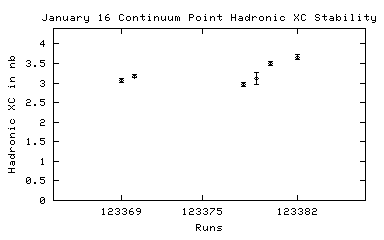
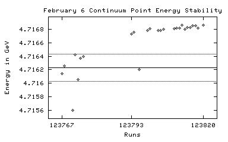

January 16 Scan
123164 01/15/2002 21:21 DataTaking 4.72684 469.81 6.68 +/- 0.33
123165 01/15/2002 21:44 DataTaking 4.72685 274.96 6.95 +/- 0.49
123166 01/15/2002 22:28 DataTaking 4.73797 990.30 4.75 +/- 0.17
123167 01/15/2002 23:31 DataTaking 4.72489 806.66 3.77 +/- 0.15
123168 01/16/2002 01:13 DataTaking 4.73185 1014.63 14.60 +/- 0.44
123169 01/16/2002 02:18 DataTaking 4.72224 1093.95 3.40 +/- 0.14
123170 01/16/2002 03:23 DataTaking 4.73389 575.64 7.50 +/- 0.33
123171 01/16/2002 04:07 RandomLow 4.73389 345.59 7.47 +/- 0.32
123172 01/16/2002 04:26 DataTaking 4.73392 779.70 7.35 +/- 0.34
123173 01/16/2002 05:10 RICHCal 4.73389 0.00 n/a
123174 01/16/2002 05:28 DataTaking 4.73599 0.00 n/a
123175 01/16/2002 05:55 DataTaking 4.73599 796.49 5.08 +/- 0.20
123176 01/16/2002 06:57 DataTaking 4.72683 927.151 n/a
123177 n/a n/a DataTaking n/a n/a 7.47 +/- 0.24
123178 01/16/2002 09:20 DataTaking 4.72884 424.47 16.77 +/- 0.56
123179 01/16/2002 12:43 CosmicRun 4.72884 290.55 18.73 +/- 0.71
January 16 Peak Point
123180 01/16/2002 13:08 DataTaking 4.73006 12.00 18.62 +/- 0.69
123181 n/a n/a n/a n/a n/a n/a
123182 01/16/2002 14:14 CosmicRun 4.73006 475.31 19.42 +/- 0.63
123183 n/a n/a CosmicRun n/a n/a n/a
123184 n/a n/a CosmicRun n/a n/a n/a
123185 01/16/2002 16:23 CosmicRun 4.73006 750.85 20.39 +/- 0.63
123186 n/a n/a DataTaking n/a n/a 20.39 +/- 0.63
123187 01/16/2002 18:10 CosmicRun 4.73006 n/a n/a
123188 01/16/2002 19:30 SVXBigCal 4.73006 0.00 n/a
123189 01/16/2002 22:17 DataTaking 4.73013 728.63 0.00 +/- 0.00
123190 n/a n/a n/a n/a n/a n/a
123191 n/a n/a n/a n/a n/a n/a
123192 n/a n/a n/a n/a n/a n/a
123193 01/17/2002 00:44 DataTaking 4.73013 1149.15 18.33 +/- 0.61
123194 01/17/2002 01:39 SmallCal 4.73013 0.00 n/a
123195 01/17/2002 01:46 SmallCal 4.73013 0.00 n/a
123196 01/17/2002 01:53 DataTaking 4.73014 1372.36 19.15 +/- 0.62
123197 01/17/2002 02:51 DataTaking 4.73019 1379.89 18.32 +/- 0.58
123198 01/17/2002 03:53 DataTaking 4.73017 1420.47 19.01 +/- 0.63
123199 n/a n/a n/a n/a n/a n/a
123200 01/17/2002 05:21 DataTaking 4.73020 385.73 18.69 +/- 1.06
123201 01/17/2002 05:45 DataTaking 4.73017 1491.64 18.69 +/- 0.57
123202 01/17/2002 06:49 DataTaking 4.73012 654.99 19.67 +/- 1.00
123203 n/a n/a n/a n/a n/a n/a
123204 01/17/2002 07:55 DataTaking 5.17893 770.88 6.66 +/- 0.24
123205 01/17/2002 08:45 DataTaking 5.17899 1210.60 7.23 +/- 0.24
123206 01/17/2002 09:41 DataTaking 5.17902 n/a n/a
123207 01/17/2002 11:17 DataTaking 5.17902 2340.93 6.45 +/- 0.17
123208 01/17/2002 12:53 SmallCal 5.17902 0.00 n/a
123209 01/17/2002 13:05 DataTaking 5.17903 2105.15 6.60 +/- 0.17
123210 01/17/2002 14:51 DataTaking 5.17942 356.33 6.50 +/- 0.46
123211 01/17/2002 15:09 DataTaking 5.17944 1342.52 6.51 +/- 0.23
123212 01/17/2002 16:05 DataTaking 5.17959 2.38 6.46 +/- 0.23
123213 01/17/2002 16:08 DataTaking 5.17956 1974.85 6.57 +/- 0.21
123214 01/17/2002 17:27 SmallCal 5.17956 0.00 n/a
123215 01/17/2002 17:42 DataTaking 5.17958 2283.89 6.25 +/- 0.16
123216 01/17/2002 19:41 DataTaking 5.17963 120.19 6.97 +/- 0.87
123217 01/17/2002 19:53 DataTaking 5.17959 1.97 6.29 +/- 0.67
123218 01/17/2002 19:55 DataTaking 5.17959 2164.96 6.87 +/- 0.18
123219 01/17/2002 21:28 DataTaking 5.17959 2384.00 6.52 +/- 0.18
123220 01/17/2002 23:24 DataTaking 5.17962 91.86 5.85 +/- 0.71
123221 01/18/2002 00:24 DataTaking 5.17961 193.26 6.25 +/- 0.54
123222 n/a n/a DataTaking n/a n/a 6.58 +/- 0.47
123223 01/18/2002 01:22 DataTaking 5.17974 1264.66 6.79 +/- 0.23
123224 01/18/2002 02:24 DataTaking 5.17971 2391.81 6.71 +/- 0.19
123225 01/18/2002 04:01 DataTaking 5.17960 2390.85 6.78 +/- 0.18
123226 01/18/2002 05:38 DataTaking 5.17958 1263.59 6.72 +/- 0.28
123227 01/18/2002 06:31 DataTaking 5.17960 2335.18 6.78 +/- 0.19
123228 01/18/2002 08:04 SmallCal 5.17960 0.00 n/a
123229 01/18/2002 08:13 DataTaking 5.17960 1660.79 6.41 +/- 0.21
123230 01/18/2002 09:35 DataTaking 5.17963 n/a n/a
123231 n/a n/a n/a n/a n/a n/a
123232 01/18/2002 10:09 DataTaking 5.17960 0.16 n/a
123233 01/18/2002 10:34 DataTaking 5.17966 900.47 6.68 +/- 0.28
123234 01/18/2002 11:16 SmallCal 5.17966 0.00 n/a
123235 01/18/2002 11:29 DataTaking 5.17960 228.57 6.67 +/- 0.83
123236 01/18/2002 11:59 SmallCal 5.17960 0.00 n/a
123237 01/18/2002 12:12 DataTaking 5.17963 973.07 6.76 +/- 0.25
123238 01/18/2002 12:59 DataTaking 5.17960 2243.23 6.50 +/- 0.18
123239 01/18/2002 14:28 SmallCal 5.17960 0.00 n/a
123240 01/18/2002 14:40 DataTaking 5.17960 2180.00 6.71 +/- 0.18
123241 01/18/2002 16:12 DataTaking 5.17959 0.00 n/a
123242 01/18/2002 16:47 DataTaking 5.17957 246.66 6.25 +/- 0.54
123243 01/18/2002 17:01 DataTaking 5.17960 672.16 6.12 +/- 0.31
123244 01/18/2002 17:36 SmallCal 5.17960 0.00 n/a
123245 01/18/2002 17:50 DataTaking 5.17959 2383.89 6.53 +/- 0.17
123246 n/a n/a n/a n/a n/a 6.51 +/- 0.17
123247 n/a n/a n/a n/a n/a n/a
123248 01/18/2002 19:49 DataTaking 5.17956 1487.56 6.75 +/- 0.20
123249 01/18/2002 21:01 DataTaking 5.17957 40.88 6.83 +/- 0.20
123250 01/18/2002 21:08 DataTaking 5.17957 2204.90 6.84 +/- 0.19
123251 01/18/2002 22:54 DataTaking 5.17961 2521.37 6.74 +/- 0.17
123252 01/19/2002 00:34 DataTaking 5.17964 2415.48 6.77 +/- 0.18
123253 01/19/2002 02:12 DataTaking 5.17962 2460.25 6.87 +/- 0.18
123254 01/19/2002 03:47 DataTaking 5.17965 2247.51 5.99 +/- 0.16
123255 01/19/2002 05:26 SmallCal 5.17965 0.00 n/a
123256 01/19/2002 05:33 DataTaking 5.17962 2206.79 6.92 +/- 0.19
123257 01/19/2002 07:02 DataTaking 5.17962 173.04 9.21 +/- 1.22
123258 01/19/2002 07:16 DataTaking 5.17962 1967.29 6.57 +/- 0.18
123259 01/19/2002 08:37 DataTaking 5.17965 2353.15 6.61 +/- 0.17
123260 01/19/2002 10:11 DataTaking 5.17965 2355.84 6.90 +/- 0.19
123261 01/19/2002 11:47 DataTaking 5.17962 2338.03 6.44 +/- 0.17
123262 01/19/2002 13:21 DataTaking 5.17962 2164.74 6.66 +/- 0.18
123263 01/19/2002 14:48 SmallCal 5.17962 0.00 n/a
123264 01/19/2002 14:59 DataTaking 5.17961 2103.84 6.52 +/- 0.17
123265 n/a n/a n/a n/a n/a n/a
123266 01/19/2002 16:44 DataTaking 5.17957 1740.60 6.67 +/- 0.20
123267 01/19/2002 18:10 DataTaking 5.17957 2112.99 6.66 +/- 0.18
123268 01/19/2002 19:45 DataTaking 5.17954 2297.23 6.43 +/- 0.17
123269 01/19/2002 21:19 DataTaking 5.17960 2366.38 6.65 +/- 0.17
123270 01/19/2002 22:53 DataTaking 5.17961 1023.59 6.86 +/- 0.30
123271 01/19/2002 23:36 SmallCal 5.17961 0.00 n/a
123272 01/19/2002 23:48 DataTaking 5.17960 2278.08 6.68 +/- 0.17
123273 01/20/2002 01:23 DataTaking 5.17961 n/a n/a
123274 01/20/2002 02:01 DataTaking 5.17960 1226.16 6.27 +/- 0.23
123275 01/20/2002 03:00 DataTaking 5.17960 2321.40 6.57 +/- 0.17
123276 01/20/2002 04:37 SmallCal 5.17960 0.00 n/a
123277 01/20/2002 04:44 DataTaking 5.17957 2327.73 6.89 +/- 0.18
123278 01/20/2002 06:13 DataTaking 5.17957 2545.89 6.53 +/- 0.16
123279 01/20/2002 07:54 DataTaking 5.17963 2462.52 6.52 +/- 0.16
123280 01/20/2002 09:28 DataTaking 5.17955 3167.18 6.53 +/- 0.14
123281 01/20/2002 12:38 DataTaking 5.17959 1517.62 n/a
123282 n/a n/a DataTaking n/a n/a n/a
123283 01/20/2002 13:11 DataTaking 5.17956 0.05 0.00 +/- 0.00
123284 01/20/2002 13:38 DataTaking 5.17960 n/a n/a
123285 01/20/2002 14:08 DataTaking 5.17959 1568.11 6.87 +/- 0.21
123286 01/20/2002 15:20 SmallCal 5.17959 0.00 n/a
123287 01/20/2002 15:31 DataTaking 5.17958 149.67 n/a
123288 n/a n/a n/a n/a n/a n/a
123289 01/20/2002 16:13 DataTaking 5.17956 6.63 0.00 +/- 0.00
123290 01/20/2002 16:33 DataTaking 5.17959 565.18 6.86 +/- 0.32
123291 01/20/2002 17:09 DataTaking 5.17953 163.64 5.63 +/- 0.68
123292 01/20/2002 17:23 DataTaking 5.17959 0.52 6.05 +/- 0.56
123293 01/20/2002 17:27 DataTaking 5.17959 2770.27 6.67 +/- 0.15
123294 01/20/2002 19:28 DataTaking 5.17960 3132.44 6.69 +/- 0.15
123295 01/20/2002 21:33 DataTaking 5.17957 2858.71 6.78 +/- 0.17
123296 01/20/2002 23:26 SmallCal 5.17957 0.00 n/a
123297 n/a n/a SmallCal n/a 0.00 n/a
123298 01/20/2002 23:41 DataTaking 5.17964 3194.49 7.10 +/- 0.15
123299 01/21/2002 02:32 DataTaking 5.17961 2.88 0.00 +/- 0.00
123300 01/21/2002 02:35 DataTaking 5.17960 2357.45 6.33 +/- 0.14
123301 01/21/2002 04:35 DataTaking 5.17964 2537.75 6.96 +/- 0.17
123302 01/21/2002 06:16 DataTaking 5.17965 335.15 6.75 +/- 0.38
123303 01/21/2002 07:15 DataTaking 5.17962 276.16 7.01 +/- 0.62
123304 01/21/2002 07:35 DataTaking 5.17967 767.78 6.53 +/- 0.33
123305 01/21/2002 08:10 CCBigCal 5.17967 0.00 n/a
123306 n/a n/a DRBigCal n/a n/a n/a
123307 01/21/2002 11:40 CosmicRun 5.17967 0.03 0.00 +/- 0.00
123308 01/21/2002 12:06 CosmicRun 5.17967 n/a n/a
123309 01/21/2002 12:30 CosmicRun 5.17967 14.41 0.00 +/- 0.00
123310 01/21/2002 12:45 DataTaking 1.81521 160.30 0.00 +/- 0.00
123311 01/21/2002 14:08 RandomLow 1.81521 0.05 0.00 +/- 0.00
123312 12/31/1969 19:00 n/a n/a n/a n/a
123313 01/21/2002 15:31 DataTaking 1.81536 511.92 0.82 +/- 0.83
BEGINNING OF DATA 18
123314 01/21/2002 17:05 DataTaking 1.81538 4.14 0.82 +/- 0.83
123315 01/21/2002 17:35 DataTaking 1.81538 3.51 1.39 +/- 1.40
123316 01/21/2002 17:58 DataTaking 1.81597 2.74 3.86 +/- 2.78
123317 01/21/2002 18:50 DataTaking 1.81685 3.78 2.64 +/- 1.89
123318 01/21/2002 19:19 DataTaking 1.81744 2.77 0.01 +/- 0.01
123319 01/21/2002 20:07 DataTaking 1.81773 1.97 0.01 +/- 0.01
123320 01/21/2002 22:05 DataTaking 1.81803 2.66 0.01 +/- 0.01
123321 01/21/2002 22:26 DataTaking 1.81877 2.63 0.02 +/- 0.02
123322 01/21/2002 23:44 DataTaking 1.81936 0.90 n/a
123323 01/22/2002 02:16 DataTaking 1.81950 0.00 n/a
123324 01/22/2002 02:55 DataTaking 1.81950 2.63 0.00 +/- 0.00
123325 01/22/2002 03:17 DataTaking 1.82009 1.26 0.02 +/- 0.02
123326 01/22/2002 03:55 DataTaking 1.82082 2.96 0.02 +/- 0.02
123327 01/22/2002 04:54 DataTaking 1.82141 2.00 0.02 +/- 0.02
123328 01/22/2002 05:40 DataTaking 1.82200 0.11 0.02 +/- 0.02
123329 01/22/2002 06:02 DataTaking 1.82200 2.44 0.00 +/- 0.00
123330 01/22/2002 06:20 DataTaking 1.82259 1.84 0.00 +/- 0.00
123331 01/22/2002 07:14 DataTaking 1.82332 2.49 0.00 +/- 0.00
123332 01/22/2002 10:31 CCBigCal 1.82332 0.00 n/a
123333 01/22/2002 10:42 DRBigCal 1.82332 0.03 n/a
123334 12/31/1969 19:00 n/a n/a n/a n/a
123335 12/31/1969 19:00 n/a n/a n/a n/a
123336 12/31/1969 19:00 n/a n/a n/a n/a
123337 12/31/1969 19:00 n/a n/a n/a n/a
123338 12/31/1969 19:00 n/a n/a n/a n/a
123339 12/31/1969 19:00 n/a n/a n/a n/a
123340 12/31/1969 19:00 n/a n/a n/a n/a
123341 12/31/1969 19:00 n/a n/a n/a n/a
123342 01/22/2002 14:36 CCBigCal 1.82332 n/a n/a
123343 01/22/2002 14:47 CCBigCal 1.82332 n/a n/a
123344 01/22/2002 14:51 SmallCal 1.82332 n/a n/a
123345 01/22/2002 15:11 SVXBigCal 1.82332 n/a n/a
123346 01/22/2002 18:12 SmallCal 1.82332 n/a n/a
123347 01/22/2002 18:23 SmallCal 1.82332 n/a n/a
123348 12/31/1969 19:00 CosmicRun n/a n/a n/a
123349 12/31/1969 19:00 n/a n/a n/a n/a
123350 12/31/1969 19:00 n/a n/a n/a n/a
123351 01/22/2002 22:13 RICHCal 1.82332 0.00 n/a
123352 01/22/2002 22:17 CosmicRun 1.82332 18.16 0.00 +/- 0.00
123353 12/31/1969 19:00 n/a n/a n/a n/a
123354 01/22/2002 22:32 CosmicRun 1.82332 221.70 2.70 +/- 0.66
123355 01/22/2002 23:04 CosmicRun 1.82332 334.55 2.70 +/- 0.66
123356 12/31/1969 19:00 n/a n/a n/a n/a
123357 12/31/1969 19:00 CosmicRun n/a n/a 1.20 +/- 0.36
123358 12/31/1969 19:00 n/a n/a n/a n/a
123359 01/23/2002 00:30 DataTaking 4.71662 98.90 0.00 +/- 0.00
123360 12/31/1969 19:00 n/a n/a n/a n/a
123361 12/31/1969 19:00 SmallCal n/a n/a n/a
123362 01/23/2002 00:59 SmallCal 4.71662 n/a n/a
123363 12/31/1969 19:00 n/a n/a n/a n/a
123364 12/31/1969 19:00 n/a n/a n/a n/a
123365 01/23/2002 01:26 RICHCal 4.71674 5.89 n/a
123366 12/31/1969 19:00 DataTaking n/a n/a n/a
123367 01/23/2002 01:35 RICHCal 4.71674 1.12 n/a
123368 01/23/2002 01:38 RICHCal 4.71650 0.00 n/a
January 16 Continuum Point

123369 01/23/2002 01:51 DataTaking 4.71674 1834.96 3.31 +/- 0.14
123370 01/23/2002 02:51 DataTaking 4.71671 2112.30 3.47 +/- 0.14
123371 01/23/2002 03:58 CCBigCal 4.71671 0.00 n/a
123372 01/23/2002 04:04 CCBigCal 4.71671 0.00 n/a
123373 01/23/2002 04:13 CCBigCal 4.71671 0.00 n/a
123374 01/23/2002 04:18 SmallCal 4.71671 0.00 n/a
123375 01/23/2002 04:22 SmallCal 4.71671 0.00 n/a
123376 01/23/2002 04:39 SVXBigCal 4.71671 0.00 n/a
123377 12/31/1969 19:00 DataTaking n/a n/a n/a
123378 01/23/2002 05:01 DataTaking 4.71670 1407.12 3.18 +/- 0.14
123379 01/23/2002 05:55 DataTaking 4.71670 152.19 3.21 +/- 0.14
123380 01/23/2002 06:12 DataTaking 4.71666 1718.33 3.24 +/- 0.16
123381 01/23/2002 07:04 SmallCal 4.71667 0.00 n/a
123382 01/23/2002 07:20 DataTaking 4.71669 1490.63 3.53 +/- 0.18
123383 12/31/1969 19:00 RandomLow n/a n/a n/a
123384 01/23/2002 11:38 RandomLow 4.71669 0.03 0.00 +/- 0.00
123385 01/23/2002 12:11 RandomLow 4.71669 0.00 0.00 +/- 0.00
123386 01/23/2002 12:57 CosmicRun 4.71669 39.75 185.96 +/- 136.65
123387 01/23/2002 14:34 RandomLow 4.71669 n/a 185.96 +/- 136.65
123388 01/23/2002 15:08 RandomLow 4.71669 9.29 0.00 +/- 0.00
123389 01/23/2002 18:42 CosmicRun 0.00000 2.00 0.00 +/- 0.00
123390 01/23/2002 20:24 RandomLow 0.00000 0.11 n/a
123391 01/23/2002 20:38 CosmicRun 0.00000 n/a 0.00 +/- 0.00
123392 01/23/2002 20:51 RandomLow 0.00000 42.47 0.00 +/- 0.00
123393 01/23/2002 21:06 RandomLow 0.00000 292.25 0.00 +/- 0.00
123394 n/a n/a n/a n/a n/a n/a
123395 n/a n/a DataTaking n/a n/a n/a
123396 01/23/2002 22:59 DataTaking 4.72990 1041.62 18.81 +/- 0.65
123397 01/23/2002 23:48 DataTaking 4.72990 1875.92 19.23 +/- 0.56
123398 n/a n/a n/a n/a n/a n/a
123399 01/24/2002 01:03 DataTaking 4.72991 58.22 19.99 +/- 2.17
123400 01/24/2002 01:16 DataTaking 4.72991 460.63 18.14 +/- 1.02
123401 01/24/2002 03:49 DataTaking 4.73005 1004.27 17.39 +/- 0.57
123402 01/24/2002 04:50 DataTaking 4.73007 1605.04 18.47 +/- 0.53
123403 01/24/2002 05:59 DataTaking 4.73005 1725.48 18.68 +/- 0.55
123404 01/24/2002 07:08 DataTaking 4.73003 2029.37 18.55 +/- 0.52
123405 01/24/2002 08:20 DataTaking 4.73008 1515.78 18.84 +/- 0.65
123406 01/24/2002 09:10 DataTaking 4.73007 n/a n/a
123407 01/24/2002 09:24 SmallCal 4.73007 0.00 n/a
123408 01/24/2002 09:35 DataTaking 4.73008 6.55 0.00 +/- 0.00
123409 01/24/2002 09:38 DataTaking 4.73009 2110.88 19.02 +/- 0.38
123410 01/24/2002 11:32 DataTaking 4.73006 43.40 16.91 +/- 1.75
123411 01/24/2002 13:32 DataTaking 4.73006 n/a n/a
123412 01/24/2002 14:46 SmallCal 4.73006 0.00 n/a
123413 01/24/2002 15:08 DataTaking 4.73006 2155.21 19.25 +/- 0.49
123414 01/24/2002 16:26 DataTaking 4.73005 2245.32 18.13 +/- 0.45
123415 01/24/2002 17:46 DataTaking 4.73009 2347.89 18.92 +/- 0.48
123416 01/24/2002 19:10 SmallCal 4.73009 0.00 n/a
123417 01/24/2002 19:49 DataTaking 4.73008 1965.34 18.40 +/- 0.51
123418 01/24/2002 20:54 DataTaking 4.73008 2446.47 18.45 +/- 0.47
123419 01/24/2002 22:15 DataTaking 4.73007 2266.11 19.60 +/- 0.51
123420 01/24/2002 23:36 DataTaking 4.73007 2362.19 19.22 +/- 0.52
123421 01/25/2002 00:58 DataTaking 4.73008 1886.71 19.45 +/- 0.56
123422 n/a n/a n/a n/a n/a n/a
123423 01/25/2002 02:31 DataTaking 4.73010 1759.45 18.67 +/- 0.55
123424 01/25/2002 03:35 SmallCal 4.73010 0.00 n/a
123425 01/25/2002 03:50 DataTaking 4.73010 1750.05 19.05 +/- 0.50
123426 01/25/2002 05:02 DataTaking 4.73011 2171.95 19.57 +/- 0.50
123427 01/25/2002 06:23 DataTaking 4.73011 2168.66 18.95 +/- 0.48
123428 01/25/2002 07:43 DataTaking 4.73012 2186.22 20.05 +/- 0.54
123429 01/25/2002 09:02 DataTaking 4.73008 2420.00 18.98 +/- 0.48
123430 01/25/2002 10:22 DataTaking 4.73011 2405.12 19.07 +/- 0.49
123431 01/25/2002 11:51 SmallCal 4.73011 0.00 n/a
123432 01/25/2002 12:06 DataTaking 4.73011 2351.75 18.09 +/- 0.44
123433 01/25/2002 13:27 DataTaking 4.73016 2181.42 19.07 +/- 0.48
123434 01/25/2002 15:07 DataTaking 4.73022 445.89 18.76 +/- 1.07
123435 01/25/2002 15:42 DataTaking 4.73021 260.66 n/a
123436 01/25/2002 16:09 DataTaking 4.73024 1497.84 17.99 +/- 0.57
123437 01/25/2002 17:05 DataTaking 4.73021 1360.49 17.97 +/- 0.63
123438 n/a n/a DataTaking n/a n/a n/a
123439 01/25/2002 18:17 DataTaking 4.73026 1503.26 19.90 +/- 0.62
123440 01/25/2002 19:11 DataTaking 4.73026 2558.33 19.29 +/- 0.49
123441 01/25/2002 20:38 DataTaking 4.73029 2359.48 18.69 +/- 0.50
123442 01/25/2002 21:59 DataTaking 4.73029 2111.48 19.44 +/- 0.55
123443 01/25/2002 23:05 SmallCal 4.73029 0.00 n/a
123444 01/25/2002 23:21 DataTaking 4.73028 115.53 21.03 +/- 1.89
123445 01/25/2002 23:35 DataTaking 4.73028 2002.85 18.89 +/- 0.51
123446 01/26/2002 00:41 DataTaking 4.73028 2476.36 18.83 +/- 0.48
123447 01/26/2002 02:03 DataTaking 4.73028 n/a n/a
123448 n/a n/a n/a n/a n/a n/a
123449 01/26/2002 03:15 DataTaking 4.73025 89.21 16.44 +/- 1.69
123450 01/26/2002 03:25 DataTaking 4.73027 1720.68 18.64 +/- 0.58
123451 01/26/2002 04:19 DataTaking 4.73026 667.23 18.65 +/- 0.89
123452 01/26/2002 04:47 DataTaking 4.73026 2486.30 18.99 +/- 0.49
123453 01/26/2002 06:07 DataTaking 4.73026 n/a 16.25 +/- 2.35
123454 01/26/2002 06:38 SmallCal 4.73026 n/a n/a
123455 01/26/2002 06:46 DataTaking 4.73027 1024.44 17.78 +/- 0.70
123456 01/26/2002 07:26 DataTaking 4.73013 2436.22 18.87 +/- 0.50
123457 01/26/2002 08:47 DataTaking 4.73017 600.30 19.76 +/- 1.07
123458 01/26/2002 09:11 DataTaking 4.73014 13.42 n/a
123459 01/26/2002 09:32 DataTaking 4.73017 1194.68 19.39 +/- 0.69
123460 01/26/2002 10:19 SmallCal 4.73017 0.00 n/a
123461 01/26/2002 10:30 DataTaking 4.73015 2458.93 18.55 +/- 0.43
123462 01/26/2002 11:55 DataTaking 4.73012 2925.67 18.57 +/- 0.43
123463 01/26/2002 13:29 DataTaking 4.73016 2925.56 18.63 +/- 0.43
123464 01/26/2002 15:03 DataTaking 4.73014 2834.14 19.40 +/- 0.47
123465 01/26/2002 16:40 DataTaking 4.73014 2803.37 18.72 +/- 0.46
123466 01/26/2002 18:16 DataTaking 4.73013 2877.53 18.64 +/- 0.47
123467 01/26/2002 19:51 DataTaking 4.73013 159.59 19.72 +/- 2.13
123468 01/26/2002 20:03 DataTaking 4.73017 2704.16 18.44 +/- 0.50
123469 01/26/2002 21:31 SmallCal 4.73017 0.00 n/a
123470 01/26/2002 21:43 DataTaking 4.73013 2710.93 18.72 +/- 0.44
123471 01/26/2002 23:15 DataTaking 4.73012 2732.14 18.16 +/- 0.43
123472 01/27/2002 00:49 DataTaking 4.73015 2615.34 n/a
123473 01/27/2002 02:23 DataTaking 4.73015 n/a n/a
123474 01/27/2002 03:00 DataTaking 4.73013 1282.79 18.86 +/- 0.64
123475 01/27/2002 04:00 SmallCal 4.73013 0.00 n/a
123476 01/27/2002 04:17 DataTaking 4.73016 1985.15 19.05 +/- 0.50
123477 01/27/2002 05:36 DataTaking 4.73013 2698.44 19.24 +/- 0.47
123478 01/27/2002 07:09 DataTaking 4.73002 2536.14 19.13 +/- 0.47
123479 01/27/2002 08:45 DataTaking 4.73002 2682.49 18.51 +/- 0.46
123480 01/27/2002 10:20 DataTaking 4.72999 2638.88 18.40 +/- 0.49
123481 01/27/2002 11:54 DataTaking 4.72999 2653.51 18.79 +/- 0.51
123482 n/a n/a DataTaking n/a n/a n/a
123483 01/27/2002 13:27 SmallCal 4.72999 0.00 n/a
123484 01/27/2002 13:43 DataTaking 4.72998 1744.68 18.63 +/- 0.51
123485 01/27/2002 15:00 SmallCal 4.72998 0.00 n/a
123486 01/27/2002 15:07 SmallCal 4.72998 0.00 n/a
123487 n/a n/a n/a n/a n/a n/a
123488 01/27/2002 15:25 DataTaking 4.72999 1521.95 20.33 +/- 0.63
123489 n/a n/a DataTaking n/a n/a 20.32 +/- 0.62
123490 01/27/2002 17:43 DataTaking 4.72999 114.19 25.29 +/- 2.94
123491 01/27/2002 17:50 DataTaking 4.72999 1402.03 18.73 +/- 0.58
123492 01/27/2002 18:48 DataTaking 4.73000 2875.78 19.33 +/- 0.45
123493 01/27/2002 20:27 DataTaking 4.72998 870.25 n/a
123494 01/27/2002 21:07 DataTaking 4.72998 265.62 18.65 +/- 1.62
123495 01/27/2002 21:29 DataTaking 4.72998 254.60 17.78 +/- 1.18
123496 01/27/2002 22:12 DataTaking 4.72999 1857.51 20.08 +/- 0.55
123497 01/27/2002 23:24 DataTaking 4.72998 2880.22 19.51 +/- 0.46
123498 01/28/2002 01:00 DataTaking 4.72998 2825.86 19.26 +/- 0.62
123499 01/28/2002 02:34 DataTaking 4.72999 2801.56 19.84 +/- 0.51
123500 01/28/2002 04:09 DataTaking 4.73001 2862.14 18.35 +/- 0.45
123501 01/28/2002 05:47 DataTaking 4.72999 3092.38 18.66 +/- 0.42
123502 01/28/2002 07:34 SmallCal 4.72999 n/a n/a
123503 01/28/2002 07:38 SmallCal 4.72999 0.00 n/a
123504 01/28/2002 07:49 DataTaking 4.72999 405.43 n/a
123505 n/a n/a n/a n/a n/a n/a
123506 01/28/2002 17:14 RandomLow 0.00000 185.86 0.00 +/- 0.00
123507 n/a n/a DataTaking n/a n/a n/a
123508 01/28/2002 18:06 DataTaking 1.81101 77.12 0.00 +/- 0.00
123509 01/28/2002 18:40 DataTaking 1.81102 0.16 0.00 +/- 0.00
123510 n/a n/a DataTaking n/a n/a n/a
123511 01/28/2002 19:06 DataTaking 1.81100 0.49 0.00 +/- 0.00
123512 n/a n/a DataTaking n/a n/a 4.39 +/- 4.48
123513 n/a n/a DataTaking n/a n/a 0.00 +/- 0.00
123514 01/28/2002 20:31 DataTaking 1.81340 195.43 0.00 +/- 0.00
123515 01/28/2002 20:52 DataTaking 1.82048 2.71 0.00 +/- 0.00
123516 n/a n/a n/a n/a n/a n/a
123517 01/28/2002 21:32 DataTaking 1.81278 59.42 0.00 +/- 0.00
123518 01/28/2002 22:17 DataTaking 1.82167 2.93 0.00 +/- 0.00
123519 01/28/2002 22:40 DataTaking 1.82269 2.66 0.00 +/- 0.00
123520 01/28/2002 23:29 DataTaking 1.82358 3.18 4.67 +/- 2.76
123521 01/28/2002 23:44 DataTaking 1.82461 2.68 4.42 +/- 3.20
123522 01/29/2002 00:11 DataTaking 1.82579 2.71 n/a
123523 n/a n/a DataTaking n/a n/a n/a
123524 01/29/2002 00:24 DataTaking 1.82653 0.55 0.00 +/- 0.00
123525 n/a n/a DataTaking n/a n/a 11.02 +/- 11.62
123526 01/29/2002 01:18 DataTaking 1.82771 2.68 0.00 +/- 0.00
123527 01/29/2002 01:32 DataTaking 1.82874 2.63 4.95 +/- 2.93
123528 01/29/2002 01:50 DataTaking 1.82963 2.25 n/a
123529 01/29/2002 02:36 DataTaking 1.83066 2.63 0.00 +/- 0.00
123530 01/29/2002 02:53 DataTaking 1.83170 2.66 96.93 +/- 18.74
123531 01/29/2002 03:16 DataTaking 1.83273 2.63 41.25 +/- 10.24
123532 01/29/2002 03:43 DataTaking 1.83376 2.52 24.63 +/- 7.11
123533 01/29/2002 04:34 DataTaking 1.83022 2.63 9.65 +/- 4.52
123534 01/29/2002 04:56 DataTaking 1.83125 2.55 98.81 +/- 15.92
123535 n/a n/a DataTaking n/a n/a 84.92 +/- 19.04
123536 01/29/2002 06:55 CCBigCal 1.83125 0.00 n/a
123537 n/a n/a n/a n/a n/a n/a
123538 n/a n/a n/a n/a n/a n/a
123539 n/a n/a n/a n/a n/a n/a
123540 01/29/2002 13:38 DataTaking 16.41540 0.00 0.00 +/- 0.00
123541 n/a n/a DataTaking n/a n/a n/a
123542 01/29/2002 15:22 DataTaking 4.72985 20.14 0.00 +/- 0.00
123543 01/29/2002 16:26 DataTaking 4.72984 0.00 n/a
123544 01/29/2002 16:32 DataTaking 4.72983 0.14 0.00 +/- 0.00
123545 n/a n/a n/a n/a n/a n/a
123546 n/a n/a n/a n/a n/a n/a
123547 n/a n/a n/a n/a n/a n/a
123548 n/a n/a n/a n/a n/a n/a
123549 01/29/2002 19:39 DataTaking 4.73185 142.99 0.00 +/- 0.00
123550 n/a n/a DataTaking n/a n/a n/a
123551 01/29/2002 19:53 DataTaking 4.73192 0.00 n/a
123552 01/29/2002 20:03 DataTaking 4.73378 75.45 0.00 +/- 0.00
123553 01/29/2002 20:27 DataTaking 4.72702 579.56 0.03 +/- 0.01
123554 01/29/2002 21:12 DataTaking 4.73778 322.22 0.02 +/- 0.01
123555 01/29/2002 21:46 DataTaking 4.71651 49.64 0.02 +/- 0.01
123556 01/29/2002 21:56 DataTaking 4.71667 10.79 0.08 +/- 0.04
123557 01/29/2002 22:18 DataTaking 4.71639 1.81 n/a
123558 01/29/2002 22:50 DataTaking 4.71640 63.67 0.00 +/- 0.00
123559 01/29/2002 22:53 SmallCal 4.71640 0.00 n/a
123560 01/29/2002 23:00 SmallCal 4.71640 0.00 n/a
123561 01/29/2002 23:06 DataTaking 4.71669 288.03 0.00 +/- 0.00
123562 01/29/2002 23:20 SmallCal 4.71669 0.00 n/a
123563 01/30/2002 00:10 SmallCal 4.71669 0.00 n/a
123564 01/30/2002 00:16 SmallCal 4.71669 0.00 n/a
January 30 Continuum Point
123565 01/30/2002 00:32 DataTaking 4.71666 866.25 3.45 +/- 0.19
123566 01/30/2002 01:13 DataTaking 4.71672 2001.59 3.21 +/- 0.13
123567 01/30/2002 02:23 DataTaking 4.71667 2063.21 3.50 +/- 0.14
123568 01/30/2002 03:29 DataTaking 4.71668 2090.88 3.24 +/- 0.13
123569 01/30/2002 04:36 DataTaking 4.71668 1956.33 3.56 +/- 0.14
123570 01/30/2002 05:39 DataTaking 4.71667 2103.04 3.67 +/- 0.14
123571 n/a n/a CCBigCal n/a n/a n/a
123572 01/30/2002 06:52 CCBigCal 4.71667 0.00 n/a
123573 01/30/2002 06:57 CCBigCal 4.71667 0.00 n/a
123574 n/a n/a CCBigCal n/a n/a n/a
123575 01/30/2002 07:10 CCBigCal 4.71667 n/a n/a
123576 01/30/2002 07:17 CCBigCal 4.71667 n/a n/a
123577 01/30/2002 07:29 DRBigCal 4.71667 0.00 n/a
123578 n/a n/a DRBigCal n/a 0.00 n/a
123579 01/30/2002 07:46 DRBigCal 4.71667 0.00 n/a
123580 01/30/2002 07:57 DRBigCal 4.71667 0.00 n/a
123581 01/30/2002 08:09 DRBigCal 4.71667 0.00 n/a
123582 01/30/2002 08:13 SmallCal 4.71667 0.00 n/a
123583 01/30/2002 08:17 SmallCal 4.71667 0.00 n/a
123584 01/30/2002 08:31 SVXBigCal 4.71667 0.00 n/a
123585 01/30/2002 08:47 SVXBigCal 4.71667 0.00 n/a
123586 01/30/2002 09:49 CosmicRun 4.71667 0.00 n/a
123587 01/30/2002 10:12 CosmicRun 4.71667 0.00 0.00 +/- 0.00
123588 01/30/2002 10:18 CosmicRun 4.71667 0.00 0.00 +/- 0.00
123589 01/30/2002 10:26 CosmicRun 4.71667 0.03 0.00 +/- 0.00
123590 01/30/2002 11:44 DataTaking 4.71663 114.63 3.09 +/- 0.34
123591 01/30/2002 12:03 DataTaking 4.71664 1044.38 3.53 +/- 0.11
123592 01/30/2002 12:48 DataTaking 4.71671 1324.68 3.56 +/- 0.10
123593 n/a n/a DataTaking n/a n/a 3.56 +/- 0.10
123594 01/30/2002 17:16 DataTaking 5.85378 n/a n/a
123595 01/30/2002 17:38 SmallCal 5.85378 n/a n/a
January 30 Scan
123596 01/30/2002 18:44 DataTaking 4.72849 1303.23 15.02 +/- 0.44
123597 01/30/2002 20:01 DataTaking 4.73795 1552.08 4.48 +/- 0.16
123598 01/30/2002 21:22 DataTaking 4.72594 1158.77 5.00 +/- 0.17
123599 01/30/2002 22:40 DataTaking 4.73601 1517.89 4.83 +/- 0.17
123600 01/30/2002 23:59 DataTaking 4.73602 1453.37 5.14 +/- 0.19
123601 01/31/2002 01:18 DataTaking 4.72685 1758.16 7.17 +/- 0.24
123602 01/31/2002 02:38 DataTaking 4.73391 1537.32 7.20 +/- 0.24
123603 01/31/2002 03:56 DataTaking 4.73187 971.92 14.27 +/- 0.45
123604 01/31/2002 05:15 DataTaking 4.72848 1417.07 14.18 +/- 0.50
123605 01/31/2002 06:20 SmallCal 4.72848 n/a n/a
123606 01/31/2002 06:39 DataTaking 4.72596 1160.63 4.95 +/- 0.16
123607 01/31/2002 07:57 DataTaking 4.73187 438.27 14.57 +/- 0.78
123608 01/31/2002 08:34 DataTaking 4.72997 1864.68 19.32 +/- 0.54
123609 01/31/2002 09:44 SmallCal 4.72998 0.00 n/a
January 30 Peak Point
123610 01/31/2002 09:53 DataTaking 4.73002 2209.01 19.18 +/- 0.50
123611 01/31/2002 11:14 DataTaking 4.73001 2238.08 18.39 +/- 0.49
123612 01/31/2002 12:34 DataTaking 4.73001 2124.14 18.64 +/- 0.55
123613 01/31/2002 13:44 SmallCal 4.73004 0.00 n/a
123614 01/31/2002 14:05 DataTaking 4.73002 428.41 17.77 +/- 1.32
123615 01/31/2002 14:31 DataTaking 4.73004 1406.96 19.74 +/- 0.66
123616 01/31/2002 15:25 DataTaking 4.73005 2303.32 19.04 +/- 0.53
123617 01/31/2002 16:48 DataTaking 4.73004 2213.21 18.22 +/- 0.51
123618 01/31/2002 18:09 DataTaking 4.73004 2292.03 18.98 +/- 0.52
123619 01/31/2002 19:30 DataTaking 4.73005 2260.05 19.17 +/- 0.52
123620 01/31/2002 20:50 DataTaking 4.73004 2238.03 19.12 +/- 0.54
123621 01/31/2002 22:11 DataTaking 4.73006 2031.67 18.40 +/- 0.55
123622 01/31/2002 23:19 SmallCal 4.73006 0.00 n/a
123623 01/31/2002 23:30 DataTaking 4.73006 2210.66 19.85 +/- 0.52
123624 02/01/2002 00:54 DataTaking 4.73005 2214.00 n/a
123625 n/a n/a n/a n/a n/a n/a
123626 n/a n/a n/a n/a n/a n/a
123627 n/a n/a n/a n/a n/a n/a
123628 n/a n/a n/a n/a n/a n/a
123629 n/a n/a n/a n/a n/a n/a
123630 n/a n/a n/a n/a n/a n/a
123631 02/01/2002 04:00 DataTaking 4.73006 434.88 19.50 +/- 1.05
123632 02/01/2002 04:38 DataTaking 4.73006 1893.07 19.82 +/- 0.56
123633 02/01/2002 05:49 DataTaking 4.73005 1654.52 18.85 +/- 0.58
123634 02/01/2002 06:49 SmallCal 4.73005 0.00 n/a
123635 02/01/2002 06:59 DataTaking 4.73005 2167.53 19.97 +/- 0.54
123636 02/01/2002 08:22 DataTaking 4.73005 1909.86 19.47 +/- 0.53
123637 02/01/2002 09:43 DataTaking 4.73002 1413.73 19.89 +/- 0.63
123638 02/01/2002 10:42 DataTaking 4.73002 304.41 19.55 +/- 1.22
123639 02/01/2002 11:04 DataTaking 4.73005 2228.11 18.73 +/- 0.51
123640 02/01/2002 12:24 DataTaking 4.73002 2121.86 19.44 +/- 0.56
123641 02/01/2002 13:42 DataTaking 4.73005 2047.64 18.28 +/- 0.56
123642 02/01/2002 14:50 SmallCal 4.73017 0.00 n/a
123643 02/01/2002 15:01 DataTaking 4.73017 2429.18 18.11 +/- 0.49
123644 02/01/2002 16:26 DataTaking 4.73018 2129.01 19.62 +/- 0.61
123645 02/01/2002 17:46 DataTaking 4.73017 2012.03 17.97 +/- 0.50
123646 02/01/2002 19:06 DataTaking 4.73017 2344.19 18.68 +/- 0.52
123647 02/01/2002 20:27 DataTaking 4.73017 2261.40 19.07 +/- 0.53
123648 02/01/2002 21:56 DataTaking 4.73017 1439.92 18.80 +/- 0.60
123649 02/01/2002 22:56 SmallCal 4.73018 0.00 n/a
123650 02/01/2002 23:08 DataTaking 4.73019 2206.27 18.95 +/- 0.55
123651 02/02/2002 00:34 DataTaking 4.73020 2211.04 18.86 +/- 0.53
123652 02/02/2002 01:59 DataTaking 4.73022 2373.70 18.68 +/- 0.53
123653 02/02/2002 03:24 DataTaking 4.73023 2555.62 18.37 +/- 0.51
123654 02/02/2002 04:46 DataTaking 4.73020 2616.05 19.47 +/- 0.55
123655 02/02/2002 06:12 DataTaking 4.73023 75.15 16.91 +/- 1.75
123656 02/02/2002 06:25 DataTaking 4.73020 2256.71 20.30 +/- 0.61
123657 02/02/2002 07:40 SmallCal 4.73021 0.00 n/a
123658 02/02/2002 07:48 DataTaking 4.73021 2351.21 18.44 +/- 0.55
123659 02/02/2002 09:07 DataTaking 4.73023 2555.53 19.51 +/- 0.55
123660 02/02/2002 10:31 SmallCal 4.73024 0.00 n/a
123661 02/02/2002 10:33 SmallCal 4.73024 0.00 n/a
123662 02/02/2002 10:42 DataTaking 4.73020 n/a n/a
123663 02/02/2002 11:06 DataTaking 4.73020 n/a n/a
123664 02/02/2002 12:12 DataTaking 4.73023 42.00 18.96 +/- 2.86
123665 02/02/2002 12:22 DataTaking 4.73021 2421.15 19.51 +/- 0.56
123666 n/a n/a n/a n/a n/a n/a
123667 02/02/2002 13:53 SmallCal 4.73024 n/a n/a
123668 n/a n/a n/a n/a n/a n/a
123669 n/a n/a n/a n/a n/a n/a
123670 02/02/2002 14:15 DataTaking 4.73024 1920.66 18.17 +/- 0.54
123671 02/02/2002 15:20 SmallCal 4.73023 0.00 n/a
123672 02/02/2002 15:32 DataTaking 4.73022 504.85 19.91 +/- 1.15
123673 02/02/2002 16:00 DataTaking 4.72995 2838.85 18.29 +/- 0.43
123674 02/02/2002 17:35 DataTaking 4.73000 1427.48 18.89 +/- 0.67
123675 02/02/2002 18:26 DataTaking 4.73000 2691.97 18.81 +/- 0.45
123676 02/02/2002 20:01 DataTaking 4.73001 121.18 17.40 +/- 2.57
123677 02/02/2002 20:12 DataTaking 4.73001 15.45 17.88 +/- 2.21
123678 02/02/2002 20:34 DataTaking 4.73002 1031.78 18.17 +/- 0.72
123679 02/02/2002 21:19 DataTaking 4.73002 2592.55 18.63 +/- 0.49
123680 02/02/2002 22:44 SmallCal 4.73001 0.00 n/a
123681 n/a n/a n/a n/a n/a n/a
123682 n/a n/a n/a n/a n/a n/a
123683 02/02/2002 23:18 DataTaking 4.73004 1830.74 18.68 +/- 0.50
123684 n/a n/a DataTaking n/a n/a 18.76 +/- 0.49
123685 02/03/2002 01:46 DataTaking 4.73003 1640.93 19.25 +/- 0.53
123686 02/03/2002 02:57 DataTaking 4.73004 2931.67 18.25 +/- 0.42
123687 n/a n/a SmallCal n/a n/a n/a
123688 02/03/2002 04:49 SmallCal 4.73004 n/a n/a
123689 02/03/2002 04:53 DataTaking 4.73002 474.82 20.07 +/- 1.16
123690 02/03/2002 05:11 DataTaking 4.73003 15.23 n/a
123691 02/03/2002 05:24 DataTaking 4.73003 1314.66 18.63 +/- 0.63
123692 02/03/2002 07:13 DataTaking 4.73003 2826.96 18.72 +/- 0.46
123693 02/03/2002 08:49 DataTaking 4.73006 2987.59 20.24 +/- 0.51
123694 02/03/2002 10:25 DataTaking 4.73006 520.71 19.46 +/- 1.05
123695 02/03/2002 11:01 DataTaking 4.72997 2681.29 19.57 +/- 0.54
123696 02/03/2002 12:24 SmallCal 4.73000 0.00 n/a
123697 02/03/2002 12:37 DataTaking 4.72999 3001.78 19.11 +/- 0.46
123698 02/03/2002 14:13 DataTaking 4.73000 2926.11 19.00 +/- 0.47
123699 02/03/2002 15:48 DataTaking 4.73002 2635.34 18.35 +/- 0.45
123700 02/03/2002 17:25 DataTaking 4.73003 2818.58 19.00 +/- 0.47
123701 02/03/2002 19:01 DataTaking 4.73002 208.49 20.17 +/- 1.79
123702 02/03/2002 19:17 DataTaking 4.73001 64.66 18.49 +/- 1.96
123703 02/03/2002 19:46 DataTaking 4.73001 n/a n/a
123704 02/03/2002 20:19 DataTaking 4.73002 444.22 17.40 +/- 0.97
123705 02/03/2002 21:45 DataTaking 4.72878 953.26 19.93 +/- 0.76
123706 02/03/2002 22:33 DataTaking 4.73002 953.56 18.41 +/- 0.80
123707 02/03/2002 23:08 DataTaking 4.73002 2457.48 19.29 +/- 0.49
123708 02/04/2002 00:34 SmallCal 4.73001 0.00 n/a
123709 02/04/2002 00:45 DataTaking 4.73001 2545.78 19.45 +/- 0.46
123710 02/04/2002 02:23 DataTaking 4.73004 376.38 19.41 +/- 1.32
123711 02/04/2002 02:43 DataTaking 4.73005 26.74 17.61 +/- 2.61
123712 02/04/2002 02:52 DataTaking 4.73001 147.70 21.13 +/- 3.29
123713 02/04/2002 03:07 DataTaking 4.73004 11.21 18.49 +/- 2.77
123714 02/04/2002 03:24 DataTaking 4.72996 462.96 20.63 +/- 1.21
123715 02/04/2002 03:48 DataTaking 4.72998 1686.16 19.96 +/- 0.56
123716 02/04/2002 05:03 DataTaking 4.73001 1763.40 19.27 +/- 0.57
123717 02/04/2002 06:09 DataTaking 4.73008 1147.32 17.87 +/- 0.69
123718 02/04/2002 06:52 DataTaking 4.73011 2094.08 18.29 +/- 0.51
123719 02/04/2002 12:30 RandomLow 0.00000 131.64 n/a
123720 02/04/2002 13:08 RandomLow 0.00000 n/a n/a
123721 n/a n/a DataTaking n/a n/a n/a
123722 02/04/2002 16:44 CosmicRun 0.00000 4.14 n/a
123723 02/04/2002 16:56 DataTaking 1.82590 17.23 0.00 +/- 0.00
123724 02/04/2002 17:22 DataTaking 1.82589 n/a 0.00 +/- 0.00
123725 02/04/2002 17:26 CosmicRun 1.82590 8.49 27.58 +/- 13.94
123726 02/04/2002 17:50 CosmicRun 1.82590 13.18 26.34 +/- 8.22
123727 02/04/2002 18:11 CosmicRun 1.82590 0.33 26.34 +/- 8.22
123728 02/04/2002 18:26 CosmicRun 1.82590 n/a n/a
123729 02/04/2002 18:40 CosmicRun 1.82590 0.00 n/a
123730 02/04/2002 19:04 DataTaking 1.82588 0.88 0.00 +/- 0.00
123731 02/04/2002 19:20 DataTaking 1.82588 0.00 0.00 +/- 0.00
123732 n/a n/a n/a n/a n/a n/a
123733 n/a n/a DataTaking n/a n/a n/a
123734 02/04/2002 19:35 DataTaking 1.83025 3.04 0.00 +/- 0.00
123735 n/a n/a DataTaking n/a n/a 109.78 +/- 17.83
123736 02/04/2002 21:35 CosmicRun 1.83026 77.48 n/a
123737 02/04/2002 21:48 DataTaking 1.82740 0.03 0.00 +/- 0.00
123738 n/a n/a CosmicRun n/a n/a 0.00 +/- 0.00
123739 02/04/2002 22:15 CosmicRun 1.82740 0.00 n/a
123740 02/04/2002 23:04 CosmicRun 1.82740 n/a n/a
123741 02/05/2002 07:58 CosmicRun 1.82740 0.00 0.00 +/- 0.00
123742 02/05/2002 08:06 CCBigCal 1.82740 0.00 n/a
123743 n/a n/a n/a n/a n/a n/a
123744 02/05/2002 08:21 DRBigCal 1.82740 0.00 n/a
123745 02/05/2002 08:26 SmallCal 1.82740 0.00 n/a
123746 02/05/2002 09:04 SVXBigCal 1.82740 0.00 n/a
123747 02/05/2002 09:51 RandomLow 1.82740 0.00 n/a
123748 n/a n/a n/a n/a n/a n/a
123749 02/05/2002 10:32 RandomLow 1.82740 n/a n/a
123750 n/a n/a n/a n/a n/a n/a
123751 02/05/2002 14:31 CCBigCal 1.82740 0.00 n/a
123752 n/a n/a CCBigCal n/a n/a n/a
123753 02/05/2002 14:49 CCBigCal 1.82740 n/a n/a
123754 n/a n/a n/a n/a n/a n/a
123755 02/05/2002 18:57 SmallCal 1.82740 n/a n/a
123756 02/05/2002 21:19 CCBigCal 1.82740 n/a n/a
123757 02/05/2002 21:31 CCBigCal 1.82740 n/a n/a
123758 n/a n/a n/a n/a n/a n/a
123759 n/a n/a n/a n/a n/a n/a
123760 02/05/2002 22:07 CCBigCal 1.82740 n/a n/a
123761 n/a n/a DataTaking n/a n/a n/a
123762 02/05/2002 22:48 CCBigCal 1.82740 0.00 n/a
123763 02/05/2002 23:28 CCBigCal 1.82740 0.00 n/a
123764 n/a n/a DataTaking n/a n/a n/a
123765 n/a n/a DataTaking n/a n/a n/a
123766 02/06/2002 00:44 DataTaking 4.71630 20.33 0.00 +/- 0.00
February 6 Continuum Point

123767 02/06/2002 00:57 DataTaking 4.71614 784.47 3.25 +/- 0.21
123768 02/06/2002 01:39 DataTaking 4.71626 1538.74 3.22 +/- 0.16
123769 02/06/2002 02:32 SmallCal 4.71637 0.00 n/a
123770 02/06/2002 02:40 SmallCal 4.71637 0.00 n/a
123771 02/06/2002 02:49 DataTaking 4.71560 1801.81 3.34 +/- 0.13
123772 02/06/2002 03:57 DataTaking 4.71642 1832.19 3.51 +/- 0.14
123773 02/06/2002 05:07 DataTaking 4.71605 1744.16 3.52 +/- 0.14
123774 02/06/2002 06:18 DataTaking 4.71637 1761.29 3.42 +/- 0.13
123775 02/06/2002 07:27 DataTaking 4.71640 1462.30 3.70 +/- 0.17
123776 02/06/2002 08:45 CosmicRun 4.71631 0.05 54.27 +/- 14.86
123777 02/06/2002 10:58 CosmicRun 4.71631 0.03 54.27 +/- 14.86
123778 02/06/2002 20:07 SmallCal 4.71631 n/a n/a
123779 02/06/2002 21:15 SmallCal 4.71631 n/a n/a
123780 02/06/2002 21:17 SmallCal 4.71631 n/a n/a
February 6 Scan
123781 02/06/2002 21:24 DataTaking 4.72836 1537.73 13.16 +/- 0.39
123782 02/06/2002 22:50 DataTaking 4.73794 1336.55 4.38 +/- 0.18
123783 02/07/2002 00:10 DataTaking 4.72583 1368.30 4.55 +/- 0.18
123784 02/07/2002 01:20 DataTaking 4.73588 1265.75 5.26 +/- 0.22
123785 02/07/2002 02:13 SmallCal 4.73593 0.00 n/a
123786 02/07/2002 02:30 DataTaking 4.72687 1076.66 6.57 +/- 0.24
123787 02/07/2002 03:45 DataTaking 4.73397 1205.51 8.02 +/- 0.28
123788 n/a n/a DataTaking n/a n/a 8.05 +/- 0.28
123789 02/07/2002 04:58 DataTaking 4.73190 992.36 14.34 +/- 0.56
123790 02/07/2002 06:05 DataTaking 4.72836 1184.79 12.65 +/- 0.43
123791 n/a n/a SmallCal n/a n/a n/a
123792 02/07/2002 07:16 DataTaking 4.72981 2021.18 18.44 +/- 0.49
February 6 Continuum Point
123793 02/07/2002 08:54 DataTaking 4.71673 545.23 3.57 +/- 0.20
123794 02/07/2002 09:33 DataTaking 4.71676 3504.33 3.32 +/- 0.09
123795 02/07/2002 12:05 SmallCal 4.71673 0.00 n/a
123796 02/07/2002 12:47 DataTaking 4.71620 1049.97 3.12 +/- 0.20
123797 02/07/2002 13:36 DataTaking 4.71677 23.32 0.00 +/- 0.00
123798 n/a n/a DataTaking n/a n/a n/a
123799 02/07/2002 13:57 DataTaking 4.71678 93.34 0.00 +/- 0.00
123800 02/07/2002 14:32 DataTaking 4.71681 2234.38 3.31 +/- 0.13
123801 02/07/2002 15:49 SmallCal 4.71677 0.00 n/a
123802 02/07/2002 15:53 SmallCal 4.71677 0.00 n/a
123803 02/07/2002 16:14 DataTaking 4.71678 2283.56 3.55 +/- 0.14
123804 02/07/2002 17:36 DataTaking 4.71678 101.12 3.49 +/- 0.13
123805 02/07/2002 17:45 DataTaking 4.71680 77.56 3.93 +/- 0.62
123806 02/07/2002 17:52 SmallCal 4.71680 0.00 n/a
123807 02/07/2002 17:59 SmallCal 4.71680 0.00 n/a
123808 n/a n/a DataTaking n/a n/a 3.01 +/- 0.53
123809 02/07/2002 18:16 DataTaking 4.71681 1573.86 3.43 +/- 0.16
123810 02/07/2002 19:12 DataTaking 4.71682 2386.49 3.44 +/- 0.13
123811 02/07/2002 20:35 DataTaking 4.71682 2355.56 3.49 +/- 0.13
123812 02/07/2002 21:56 DataTaking 4.71686 2314.85 3.49 +/- 0.13
123813 02/07/2002 23:17 DataTaking 4.71680 2341.70 3.40 +/- 0.13
123814 02/08/2002 00:37 DataTaking 4.71683 2454.47 3.32 +/- 0.12
123815 02/08/2002 02:05 DataTaking 4.71683 2296.99 3.35 +/- 0.12
123816 02/08/2002 03:26 DataTaking 4.71685 2276.47 3.47 +/- 0.13
123817 02/08/2002 04:46 DataTaking 4.71685 2296.90 3.23 +/- 0.13
123818 02/08/2002 06:05 DataTaking 4.71682 2206.03 3.61 +/- 0.14
123819 02/08/2002 07:21 SmallCal 4.71682 0.00 n/a
123820 02/08/2002 07:29 DataTaking 4.71686 2048.00 3.22 +/- 0.15
February 6 Peak Point
123821 02/08/2002 08:55 DataTaking 4.72984 1086.00 17.91 +/- 0.69
123822 02/08/2002 09:40 DataTaking 4.72989 2115.29 18.46 +/- 0.53
123823 02/08/2002 11:14 DataTaking 4.72988 2342.90 n/a
123824 n/a n/a DataTaking n/a n/a n/a
123825 02/08/2002 13:03 SmallCal 4.72988 0.00 n/a
123826 02/08/2002 13:30 DataTaking 4.72991 577.42 n/a
123827 02/08/2002 13:42 DataTaking 4.72990 n/a n/a
123828 02/08/2002 13:56 DataTaking 4.72925 739.73 18.71 +/- 0.81
123829 02/08/2002 14:25 DataTaking 4.72992 2570.52 18.24 +/- 0.48
123830 02/08/2002 15:44 DataTaking 4.72990 2523.97 18.50 +/- 0.51
123831 02/08/2002 17:03 DataTaking 4.72991 2601.07 17.65 +/- 0.48
123832 02/08/2002 18:24 DataTaking 4.72924 1295.18 18.39 +/- 0.76
123833 02/08/2002 19:06 DataTaking 4.72994 2359.37 18.74 +/- 0.56
123834 02/08/2002 20:16 SmallCal 4.72989 0.00 n/a
123835 02/08/2002 20:19 SmallCal 4.72989 0.00 n/a
123836 02/08/2002 20:25 DataTaking 4.72990 2554.93 19.13 +/- 0.50
123837 02/08/2002 21:45 DataTaking 4.72993 2307.48 18.88 +/- 0.55
123838 02/08/2002 22:53 SmallCal 4.72990 0.00 n/a
123839 02/08/2002 23:04 DataTaking 4.72993 2445.70 18.63 +/- 0.47
123840 02/09/2002 00:23 DataTaking 4.72993 2423.81 18.24 +/- 0.47
123841 02/09/2002 01:44 DataTaking 4.72991 2638.96 18.22 +/- 0.47
123842 02/09/2002 03:07 DataTaking 4.72990 678.25 18.29 +/- 0.97
123843 02/09/2002 03:46 DataTaking 4.72993 984.00 18.34 +/- 0.67
123844 02/09/2002 04:29 DataTaking 4.72993 2547.75 18.91 +/- 0.48
123845 02/09/2002 05:52 DataTaking 4.72995 2600.85 18.67 +/- 0.49
123846 02/09/2002 07:09 SmallCal 4.72994 0.00 n/a
123847 02/09/2002 07:13 DataTaking 4.72991 2028.30 19.15 +/- 0.56
123848 02/09/2002 08:21 DataTaking 4.73005 105.40 18.15 +/- 1.92
123849 02/09/2002 08:32 DataTaking 4.73005 562.66 18.30 +/- 1.03
123850 02/09/2002 09:18 DataTaking 4.73004 1146.58 19.00 +/- 0.63
123851 02/09/2002 10:08 DataTaking 4.73008 2878.25 18.88 +/- 0.44
123852 02/09/2002 11:44 DataTaking 4.73006 3000.88 19.46 +/- 0.47
123853 02/09/2002 13:20 DataTaking 4.73006 2787.42 18.58 +/- 0.46
123854 02/09/2002 14:47 SmallCal 4.73006 0.00 n/a
123855 n/a n/a SmallCal n/a n/a n/a
123856 n/a n/a n/a n/a n/a n/a
123857 02/09/2002 15:18 SmallCal 4.73006 n/a n/a
123858 02/09/2002 15:30 DataTaking 4.73007 1616.38 18.04 +/- 0.54
123859 02/09/2002 16:30 DataTaking 4.73009 1298.66 18.41 +/- 0.74
123860 02/09/2002 17:21 DataTaking 4.73006 1049.45 18.85 +/- 0.73
123861 02/09/2002 18:02 SmallCal 4.73007 0.00 n/a
123862 02/09/2002 18:16 DataTaking 4.73008 1505.89 19.09 +/- 0.66
123863 02/09/2002 19:02 DataTaking 4.73009 1222.52 18.20 +/- 0.59
123864 02/09/2002 19:51 DataTaking 4.73006 2903.51 17.89 +/- 0.42
123865 02/09/2002 21:27 DataTaking 4.73009 2989.34 19.00 +/- 0.45
123866 02/09/2002 23:05 DataTaking 4.73007 3002.36 19.50 +/- 0.46
123867 02/10/2002 00:47 DataTaking 4.73008 3037.97 18.48 +/- 0.46
123868 02/10/2002 02:21 DataTaking 4.73011 2736.90 18.52 +/- 0.47
123869 02/10/2002 04:01 DataTaking 4.73011 3154.82 18.62 +/- 0.46
123870 02/10/2002 05:37 SmallCal 4.73008 0.00 n/a
123871 02/10/2002 05:53 DataTaking 4.73012 2989.32 19.03 +/- 0.44
123872 02/10/2002 07:34 DataTaking 4.73011 3036.85 18.96 +/- 0.48
123873 02/10/2002 09:14 DataTaking 4.73011 2603.10 18.69 +/- 0.47
123874 02/10/2002 10:51 DataTaking 4.73008 681.42 19.67 +/- 1.34
123875 02/10/2002 11:17 DataTaking 4.73011 464.38 18.30 +/- 1.12
123876 02/10/2002 13:08 DataTaking 4.73010 2814.19 18.55 +/- 0.46
123877 02/10/2002 14:42 SmallCal 4.73007 0.00 n/a
123878 02/10/2002 14:50 DataTaking 4.73008 144.85 18.73 +/- 1.99
123879 02/10/2002 16:25 DataTaking 4.73005 2653.84 18.05 +/- 0.48
123880 02/10/2002 17:48 SmallCal 4.73008 0.00 n/a
123881 02/10/2002 17:56 DataTaking 4.73003 2979.51 18.78 +/- 0.45
123882 02/10/2002 19:32 DataTaking 4.73006 2936.47 18.50 +/- 0.46
123883 02/10/2002 21:08 DataTaking 4.73003 197.73 18.84 +/- 2.01
123884 02/10/2002 21:16 DataTaking 4.73003 1343.67 17.61 +/- 0.72
123885 02/10/2002 22:18 DataTaking 4.73005 505.37 17.88 +/- 0.94
123886 02/10/2002 22:42 DataTaking 4.73003 3076.08 17.97 +/- 0.45
123887 02/11/2002 00:17 DataTaking 4.73004 3058.41 18.93 +/- 0.47
123888 02/11/2002 01:52 DataTaking 4.73002 2567.95 18.61 +/- 0.51
123889 02/11/2002 03:09 SmallCal 4.73001 0.00 n/a
123890 02/11/2002 03:26 DataTaking 4.73001 3002.82 18.65 +/- 0.45
123891 02/11/2002 05:03 DataTaking 4.73002 2701.34 18.08 +/- 0.46
123892 02/11/2002 06:43 DataTaking 4.73004 0.00 17.99 +/- 0.45
123893 02/11/2002 07:09 DataTaking 4.73001 1834.68 19.81 +/- 0.66
123894 02/11/2002 16:22 CosmicRun 4.73001 1.52 0.20 +/- 0.04
123895 02/11/2002 18:02 CosmicRun 4.73001 0.00 0.20 +/- 0.04
123896 02/11/2002 18:22 CosmicRun 4.73001 101.12 39.13 +/- 8.25
123897 n/a n/a n/a n/a n/a n/a
123898 02/11/2002 20:04 CosmicRun 4.73001 0.03 0.00 +/- 0.00
123899 02/11/2002 20:57 DataTaking 1.82835 344.55 0.00 +/- 0.00
123900 02/11/2002 22:18 DataTaking 1.82836 1.53 0.00 +/- 0.00
123901 02/11/2002 22:53 DataTaking 1.82835 4.93 4.30 +/- 3.11
123902 02/11/2002 23:38 DataTaking 1.82880 1.42 10.65 +/- 3.54
123903 02/12/2002 00:19 DataTaking 1.82880 4.11 8.08 +/- 4.20
123904 02/12/2002 01:15 DataTaking 1.82939 0.22 2.36 +/- 1.69
123905 02/12/2002 01:36 DataTaking 1.82924 3.67 0.00 +/- 0.00
123906 02/12/2002 02:20 DataTaking 1.82983 1.26 6.90 +/- 2.91
123907 02/12/2002 02:53 DataTaking 1.82968 3.42 23.26 +/- 9.14
123908 02/12/2002 03:46 DataTaking 1.83027 1.34 6.68 +/- 3.09
123909 02/12/2002 04:28 DataTaking 1.83027 2.93 27.99 +/- 7.69
123910 02/12/2002 05:09 DataTaking 1.83071 3.15 55.07 +/- 11.79
123911 02/12/2002 05:30 DataTaking 1.83130 1.70 n/a
123912 02/12/2002 06:22 DataTaking 1.83205 2.85 0.00 +/- 0.00
123913 02/12/2002 07:12 DataTaking 1.83264 0.25 34.89 +/- 8.47
123914 02/12/2002 07:32 DataTaking 1.83249 2.66 49.27 +/- 30.17
123915 02/12/2002 08:16 DRBigCal 1.83249 0.00 n/a
123916 02/12/2002 08:36 SmallCal 1.83249 n/a n/a
123917 02/12/2002 08:39 DRBigCal 1.83249 0.00 n/a
123918 02/12/2002 08:58 DRBigCal 1.83249 0.00 n/a
123919 02/12/2002 10:21 SVXBigCal 1.83249 0.00 n/a
123920 02/12/2002 13:53 CCBigCal 1.83249 0.00 n/a
123921 02/12/2002 14:45 CosmicRun 1.83249 0.00 n/a
123922 02/12/2002 15:13 CosmicRun 1.83249 0.03 0.00 +/- 0.00
123923 02/12/2002 17:14 SmallCal 1.83249 0.00 n/a
123924 02/12/2002 21:19 CosmicRun 0.00000 66.16 0.00 +/- 0.00
123925 02/12/2002 21:41 CosmicRun 0.00000 0.00 0.00 +/- 0.00
123926 02/12/2002 22:00 CosmicRun 0.00000 0.14 0.00 +/- 0.00
123927 02/12/2002 22:54 CosmicRun 0.00000 0.19 0.00 +/- 0.00
123928 02/13/2002 00:09 DataTaking 4.72989 0.03 0.00 +/- 0.00
123929 n/a n/a DataTaking n/a n/a 1.48 +/- 1.55
123930 02/13/2002 01:52 CosmicRun 4.72990 0.19 51.01 +/- 10.76
123931 n/a n/a DataTaking n/a n/a 46.50 +/- 7.13
123932 02/13/2002 16:28 RandomLow 4.72990 117.45 0.00 +/- 0.00
123933 02/13/2002 16:49 CosmicRun 4.72990 0.00 0.00 +/- 0.00
123934 02/13/2002 17:05 RandomLow 4.72990 0.00 n/a
123935 02/13/2002 17:38 RandomLow 4.72990 0.00 n/a
123936 02/14/2002 11:09 SmallCal 4.72990 n/a n/a
123937 02/14/2002 11:44 SmallCal 4.72990 n/a n/a
February 14 Continuum Point
123938 02/14/2002 11:55 DataTaking 4.71682 1517.81 3.45 +/- 0.14
123939 02/14/2002 13:08 DataTaking 4.71684 2308.71 3.26 +/- 0.12
123940 02/14/2002 14:33 DataTaking 4.71682 0.03 0.00 +/- 0.00
123941 02/14/2002 14:49 DataTaking 4.71682 945.48 3.46 +/- 0.19
123942 n/a n/a DataTaking n/a n/a n/a
123943 02/14/2002 15:58 SmallCal 4.71682 0.00 n/a
123944 02/14/2002 16:08 DataTaking 4.71683 893.84 3.33 +/- 0.11
123945 02/14/2002 17:32 DataTaking 4.71682 n/a n/a
123946 n/a n/a n/a n/a n/a n/a
123947 n/a n/a n/a n/a n/a n/a
123948 n/a n/a n/a n/a n/a n/a
123949 n/a n/a DataTaking n/a n/a n/a
123950 n/a n/a n/a n/a n/a n/a
123951 02/14/2002 19:54 DataTaking 4.71664 645.73 3.58 +/- 0.20
123952 02/14/2002 20:31 DataTaking 4.71664 2029.12 3.50 +/- 0.13
123953 02/14/2002 21:51 DataTaking 4.71667 1833.78 3.12 +/- 0.14
123954 02/14/2002 22:59 SmallCal 4.71664 0.00 n/a
123955 02/14/2002 23:11 DataTaking 4.71670 2051.07 3.46 +/- 0.12
123956 02/15/2002 00:44 DataTaking 4.71667 2136.08 3.55 +/- 0.12
123957 n/a n/a n/a n/a n/a n/a
123958 02/15/2002 02:13 DataTaking 4.71668 2032.71 3.29 +/- 0.11
123959 02/15/2002 03:37 DataTaking 4.71664 2135.89 3.44 +/- 0.12
123960 02/15/2002 05:03 DataTaking 4.71667 2143.51 3.50 +/- 0.12
123961 02/15/2002 06:28 DataTaking 4.71666 2313.75 3.54 +/- 0.12
123962 02/15/2002 07:54 DataTaking 4.71667 2061.95 3.46 +/- 0.12
February 14 Peak Point
123963 02/15/2002 09:30 DataTaking 4.72955 586.55 17.08 +/- 0.76
123964 02/15/2002 10:20 DataTaking 4.72958 1763.34 17.58 +/- 0.46
123965 02/15/2002 11:42 DataTaking 4.72962 1969.34 17.37 +/- 0.46
123966 02/15/2002 13:11 DataTaking 4.73004 1658.90 20.29 +/- 0.58
123967 02/15/2002 14:17 SmallCal 4.73002 0.00 n/a
123968 02/15/2002 14:31 DataTaking 4.73005 19.59 20.31 +/- 0.58
123969 02/15/2002 14:42 DataTaking 4.73002 1594.88 18.80 +/- 0.52
123970 02/15/2002 15:58 DataTaking 4.73005 867.70 18.93 +/- 0.74
123971 02/15/2002 16:35 DataTaking 4.73005 1098.55 18.15 +/- 0.61
123972 02/15/2002 17:30 DataTaking 4.73005 2180.27 18.50 +/- 0.49
123973 02/15/2002 18:50 DataTaking 4.73007 1114.79 19.78 +/- 0.84
123974 02/15/2002 19:33 DataTaking 4.73006 912.03 18.38 +/- 0.71
123975 02/15/2002 20:09 DataTaking 4.73003 2.00 18.34 +/- 0.70
123976 02/15/2002 20:17 DataTaking 4.73003 2443.92 20.39 +/- 0.55
123977 02/15/2002 21:41 DataTaking 4.73006 2405.15 18.64 +/- 0.50
123978 02/15/2002 22:58 SmallCal 4.73004 0.00 n/a
123979 02/15/2002 23:07 DataTaking 4.73003 2100.05 18.89 +/- 0.53
123980 02/16/2002 00:24 DataTaking 4.73006 2100.00 18.88 +/- 0.51
123981 02/16/2002 01:49 DataTaking 4.73007 2255.21 19.34 +/- 0.55
123982 02/16/2002 03:08 DataTaking 4.73006 2276.93 19.41 +/- 0.53
123983 02/16/2002 04:27 SmallCal 4.73006 0.00 n/a
123984 02/16/2002 04:31 DataTaking 4.73007 2277.51 19.77 +/- 0.53
123985 02/16/2002 06:08 DataTaking 4.73003 2405.40 18.47 +/- 0.48
123986 02/16/2002 07:29 DataTaking 4.73000 2425.70 18.29 +/- 0.49
123987 02/16/2002 08:56 DataTaking 4.73003 2463.18 18.62 +/- 0.49
123988 02/16/2002 10:20 SmallCal 4.73003 0.00 n/a
123989 02/16/2002 10:31 SmallCal 4.73003 0.00 n/a
123990 02/16/2002 10:38 DataTaking 4.73006 n/a n/a
123991 02/16/2002 10:47 DataTaking 4.72999 2393.56 18.61 +/- 0.49
123992 02/16/2002 12:12 DataTaking 4.73003 2808.88 18.45 +/- 0.45
123993 02/16/2002 13:47 DataTaking 4.73003 2460.88 18.73 +/- 0.51
123994 02/16/2002 15:05 DataTaking 4.73003 286.90 20.26 +/- 1.56
123995 02/16/2002 15:24 DataTaking 4.73003 624.60 18.97 +/- 1.01
123996 02/16/2002 15:45 DataTaking 4.73003 348.08 19.27 +/- 1.46
123997 02/16/2002 15:57 DataTaking 4.73003 643.48 19.00 +/- 1.02
123998 02/16/2002 16:23 DataTaking 4.73006 544.03 19.40 +/- 1.04
123999 02/16/2002 16:47 DataTaking 4.73003 191.92 19.05 +/- 1.66
124000 02/16/2002 17:00 DataTaking 4.73003 830.05 18.06 +/- 0.90
124001 02/16/2002 17:25 DataTaking 4.73003 775.75 18.43 +/- 1.38
124002 02/16/2002 17:55 DataTaking 4.73006 210.41 19.38 +/- 1.70
124003 02/16/2002 18:14 DataTaking 4.73003 156.33 19.72 +/- 1.74
124004 02/16/2002 18:22 SmallCal 4.73003 n/a n/a
124005 02/16/2002 18:26 SmallCal 4.73003 0.00 n/a
124006 02/16/2002 18:42 SmallCal 4.73003 0.00 n/a
124007 02/16/2002 18:50 DataTaking 4.73003 2207.95 18.21 +/- 0.50
124008 02/16/2002 20:10 DataTaking 4.73007 2610.38 19.38 +/- 0.52
124009 02/16/2002 21:35 SmallCal 4.73004 0.00 n/a
124010 02/16/2002 21:44 DataTaking 4.73007 2738.11 18.93 +/- 0.44
124011 02/16/2002 23:18 DataTaking 4.73007 2671.78 18.65 +/- 0.44
124012 02/17/2002 00:55 DataTaking 4.73005 2468.77 18.23 +/- 0.43
124013 02/17/2002 02:32 DataTaking 4.73005 2768.05 19.51 +/- 0.46
124014 02/17/2002 04:07 DataTaking 4.73005 2804.33 18.40 +/- 0.44
124015 02/17/2002 05:40 SmallCal 4.73008 0.00 n/a
124016 02/17/2002 05:43 DataTaking 4.73005 2819.42 17.83 +/- 0.43
124017 02/17/2002 07:21 DataTaking 4.73005 2804.66 18.24 +/- 0.45
124018 02/17/2002 08:59 DataTaking 4.73008 38.41 17.82 +/- 2.65
124019 02/17/2002 09:08 DataTaking 4.73005 1562.90 19.18 +/- 0.69
124020 02/17/2002 10:03 DataTaking 4.73007 892.93 18.71 +/- 0.75
124021 02/17/2002 10:50 DataTaking 4.73023 32.08 20.83 +/- 3.23
124022 02/17/2002 10:55 SmallCal 4.73023 0.00 n/a
124023 02/17/2002 11:03 DataTaking 4.73026 1502.96 18.30 +/- 0.57
124024 02/17/2002 12:01 DataTaking 4.73029 2958.88 19.26 +/- 0.42
124025 02/17/2002 13:51 DataTaking 4.73029 2440.16 19.16 +/- 0.49
124026 02/17/2002 15:25 DataTaking 4.73029 2646.74 18.66 +/- 0.46
124027 02/17/2002 16:58 SmallCal 4.73025 0.00 n/a
124028 n/a n/a n/a n/a n/a n/a
124029 02/17/2002 17:21 DataTaking 4.73029 2051.21 19.07 +/- 0.49
124030 n/a n/a DataTaking n/a n/a n/a
124031 02/17/2002 18:51 DataTaking 4.73029 2227.42 19.54 +/- 0.49
124032 02/17/2002 20:11 DataTaking 4.73032 2766.08 18.33 +/- 1.04
124033 02/17/2002 21:46 DataTaking 4.73029 2691.56 18.48 +/- 0.47
124034 02/17/2002 23:21 DataTaking 4.73031 2648.16 19.43 +/- 0.46
124035 02/18/2002 00:58 DataTaking 4.73032 1421.51 19.51 +/- 0.66
124036 02/18/2002 02:02 DataTaking 4.73028 0.00 19.45 +/- 0.66
124037 02/18/2002 02:17 DataTaking 4.73031 2530.82 19.61 +/- 0.46
124038 02/18/2002 03:53 DataTaking 4.73028 2354.03 18.90 +/- 0.45
124039 02/18/2002 05:32 DataTaking 4.73031 68.08 17.93 +/- 1.89
124040 02/18/2002 05:46 DataTaking 4.73031 1920.25 19.43 +/- 0.56
124041 02/18/2002 06:55 DataTaking 4.73031 2041.26 18.44 +/- 0.51
124042 n/a n/a n/a n/a n/a n/a
124043 02/18/2002 10:55 DataTaking 1.82740 n/a n/a
124044 n/a n/a n/a n/a n/a n/a
124045 02/18/2002 13:29 CosmicRun 1.82740 103.07 36.04 +/- 7.44
124046 02/18/2002 14:48 CosmicRun 1.82740 0.05 36.04 +/- 7.44
124047 02/18/2002 15:27 CosmicRun 1.82740 8.85 40.94 +/- 11.16
124048 02/18/2002 17:12 CosmicRun 1.82740 0.00 n/a
124049 02/18/2002 17:49 CosmicRun 1.82740 0.00 0.00 +/- 0.00
124050 02/18/2002 18:02 CosmicRun 1.82740 0.00 0.00 +/- 0.00
124051 n/a n/a SmallCal n/a n/a n/a
124052 02/19/2002 07:33 SmallCal 1.82740 n/a n/a
124053 02/19/2002 07:34 SmallCal 1.82740 n/a n/a
124054 02/19/2002 07:37 CCBigCal 1.82740 n/a n/a
124055 02/19/2002 07:48 CCBigCal 1.82740 n/a n/a
124056 02/19/2002 07:50 SmallCal 1.82740 n/a n/a
124057 n/a n/a n/a n/a n/a n/a
124058 02/19/2002 08:30 CCBigCal 1.82740 n/a n/a
124059 02/19/2002 08:35 CosmicRun 1.82740 0.00 28.91 +/- 12.42
124060 02/19/2002 08:57 DRBigCal 1.82740 0.05 n/a
124061 02/19/2002 11:21 CCBigCal 1.82740 0.00 n/a
124062 02/19/2002 11:25 CCBigCal 1.82740 0.00 n/a
124063 02/19/2002 11:27 CCBigCal 1.82740 0.00 n/a
124064 02/19/2002 11:28 CCBigCal 1.82740 0.00 n/a
124065 02/19/2002 11:33 SmallCal 1.82740 0.00 n/a
124066 02/19/2002 11:45 CCBigCal 1.82740 0.00 n/a
124067 02/19/2002 12:03 CCBigCal 1.82740 n/a n/a
124068 02/19/2002 12:41 SVXBigCal 1.82740 n/a n/a
124069 02/19/2002 12:59 SVXBigCal 1.82740 n/a n/a
124070 02/19/2002 15:20 CosmicRun 1.82740 0.00 n/a
124071 n/a n/a CosmicRun n/a 0.00 n/a
124072 02/19/2002 15:58 CosmicRun 1.82740 100.52 n/a
124073 02/19/2002 16:45 CosmicRun 1.82740 15.51 n/a
124074 02/19/2002 17:10 CosmicRun 1.82740 25.56 148.67 +/- 135.71
124075 02/19/2002 20:40 CosmicRun 0.00000 44.08 0.00 +/- 0.00
124076 02/19/2002 21:12 CCBigCal 0.00000 0.00 n/a
124077 02/19/2002 21:32 CosmicRun 0.00000 0.00 n/a
124078 n/a n/a n/a n/a n/a n/a
124079 02/19/2002 22:08 SmallCal 0.00000 n/a n/a
February 20 Scan (more is coming...)
124080 02/19/2002 22:23 DataTaking 4.72846 1207.62 12.99 +/- 0.48
124081 02/19/2002 23:33 DataTaking 4.73792 1266.27 4.72 +/- 0.20
124082 n/a n/a DataTaking n/a n/a 4.73 +/- 0.20
124083 02/20/2002 00:43 DataTaking 4.72594 204.90 5.31 +/- 0.62
124084 02/20/2002 00:56 DataTaking 4.72597 1072.66 4.87 +/- 0.23
124085 02/20/2002 02:03 DataTaking 4.73585 1167.67 5.44 +/- 0.20
124086 02/20/2002 03:29 DataTaking 4.72684 1015.59 6.58 +/- 0.26
124087 02/20/2002 04:39 DataTaking 4.73391 1109.12 7.27 +/- 0.30
124088 02/20/2002 05:49 DataTaking 4.73184 195.75 3.51 +/- 0.28
124089 02/20/2002 06:10 DataTaking 4.73190 612.00 15.76 +/- 0.72
124090 02/20/2002 06:47 SmallCal 4.73190 0.00 n/a
124091 02/20/2002 06:58 DataTaking 4.72830 1271.26 12.10 +/- 0.45
February 20 Peak Point (more is coming...)
124092 02/20/2002 08:01 DataTaking 4.73028 736.25 18.78 +/- 0.94
124093 n/a n/a DataTaking n/a n/a 18.82 +/- 0.92
124094 02/20/2002 16:26 CosmicRun 4.73030 0.05 0.00 +/- 0.00
124095 02/20/2002 16:49 CosmicRun 4.73030 n/a n/a
124096 02/20/2002 17:27 DataTaking 4.73036 712.22 0.00 +/- 0.00
124097 02/20/2002 17:59 DataTaking 4.72974 53.95 0.05 +/- 0.01
124098 02/20/2002 18:03 DataTaking 4.73035 44.49 n/a
124099 02/20/2002 18:23 DataTaking 4.73036 0.52 0.00 +/- 0.00
124100 02/20/2002 19:04 DataTaking 4.73038 89.89 0.02 +/- 0.02
124101 02/20/2002 21:46 SmallCal 4.73038 0.00 n/a
February 20 Scan
124102 02/20/2002 22:09 DataTaking 4.72830 2810.25 12.31 +/- 0.28
124103 02/21/2002 00:35 DataTaking 4.73791 749.04 4.57 +/- 0.23
124104 02/21/2002 01:48 DataTaking 4.72596 50.93 4.56 +/- 0.22
124105 02/21/2002 02:03 DataTaking 4.72596 267.62 5.53 +/- 0.65
124106 02/21/2002 02:45 DataTaking 4.73600 696.00 5.11 +/- 0.26
124107 02/21/2002 03:39 DataTaking 4.72680 660.05 6.85 +/- 0.31
124108 02/21/2002 04:40 DataTaking 4.73393 5.12 6.79 +/- 0.31
124109 02/21/2002 04:45 DataTaking 4.73390 642.55 7.75 +/- 0.43
124110 02/21/2002 05:39 DataTaking 4.73184 717.73 15.38 +/- 0.66
124111 02/21/2002 06:33 DataTaking 4.72842 1122.00 12.94 +/- 0.56
124112 02/21/2002 07:27 DataTaking 4.73023 999.81 19.90 +/- 0.88
February 20 Continuum Point
124113 02/21/2002 08:20 DataTaking 4.71668 1771.26 3.45 +/- 0.14
124114 02/21/2002 09:45 DataTaking 4.71671 2184.14 3.44 +/- 0.13
124115 02/21/2002 11:15 DataTaking 4.71671 2228.52 3.45 +/- 0.14
124116 02/21/2002 12:32 SmallCal 4.71668 0.00 n/a
124117 02/21/2002 12:55 DataTaking 4.71674 483.94 3.62 +/- 0.40
124118 02/21/2002 13:17 DataTaking 4.71668 91.62 3.66 +/- 0.30
124119 02/21/2002 13:28 DataTaking 4.71671 277.94 4.52 +/- 0.52
124120 n/a n/a DataTaking n/a n/a n/a
124121 02/21/2002 14:00 DataTaking 4.71671 1197.26 n/a
124122 02/21/2002 14:54 DataTaking 4.71671 208.88 0.00 +/- 0.00
124123 02/21/2002 15:09 DataTaking 4.71671 2152.41 3.35 +/- 0.15
124124 02/21/2002 16:20 SmallCal 4.71671 0.00 n/a
124125 02/21/2002 16:30 DataTaking 4.71668 2230.14 3.82 +/- 0.16
124126 02/21/2002 17:54 DataTaking 4.71671 1971.48 3.43 +/- 0.16
124127 02/21/2002 19:10 DataTaking 4.71671 2253.62 3.38 +/- 0.14
124128 02/21/2002 20:32 DataTaking 4.71671 2145.70 3.30 +/- 0.15
124129 02/21/2002 21:50 DataTaking 4.71671 2231.78 3.55 +/- 0.16
124130 02/21/2002 23:16 SmallCal 4.71668 0.00 n/a
124131 02/21/2002 23:25 DataTaking 4.71671 0.08 0.00 +/- 0.00
124132 02/21/2002 23:39 DataTaking 4.71671 1191.10 3.48 +/- 0.19
124133 n/a n/a n/a n/a n/a n/a
124134 02/22/2002 01:02 DataTaking 4.71671 1094.66 3.53 +/- 0.20
124135 n/a n/a n/a n/a n/a n/a
124136 02/22/2002 01:47 SmallCal 4.71674 0.00 n/a
124137 02/22/2002 01:51 DataTaking 4.71674 2229.21 3.40 +/- 0.15
124138 02/22/2002 03:19 DataTaking 4.71674 2294.27 3.43 +/- 0.13
124139 02/22/2002 04:38 DataTaking 4.71674 2286.63 3.63 +/- 0.15
124140 02/22/2002 05:59 DataTaking 4.71674 2204.38 3.29 +/- 0.14
124141 02/22/2002 07:20 DataTaking 4.71674 2217.51 3.57 +/- 0.14
February 20 Peak Point
124142 02/22/2002 08:55 DataTaking 4.73021 390.06 20.54 +/- 1.30
124143 02/22/2002 09:20 DataTaking 4.73027 21.12 18.96 +/- 2.86
124144 02/22/2002 09:32 DataTaking 4.73023 2021.01 18.96 +/- 0.63
124145 02/22/2002 11:14 DataTaking 4.73026 n/a 19.08 +/- 0.62
124146 02/22/2002 11:24 DataTaking 4.73029 1315.48 19.74 +/- 0.78
124147 n/a n/a n/a n/a n/a n/a
124148 02/22/2002 12:40 DataTaking 4.73026 n/a 19.51 +/- 1.33
124149 02/22/2002 13:18 DataTaking 4.73027 971.84 19.46 +/- 0.85
124150 02/22/2002 14:02 DataTaking 4.73029 1980.05 19.23 +/- 0.65
124151 02/22/2002 15:11 SmallCal 4.73029 0.00 n/a
124152 02/22/2002 15:28 DataTaking 4.73029 2242.11 19.26 +/- 0.60
124153 02/22/2002 16:50 DataTaking 4.73033 2169.73 19.98 +/- 0.64
124154 02/22/2002 18:10 DataTaking 4.73032 2108.16 19.62 +/- 0.61
124155 02/22/2002 19:30 DataTaking 4.73032 627.01 19.99 +/- 1.37
124156 02/22/2002 20:00 DataTaking 4.73035 2234.55 n/a
124157 n/a n/a n/a n/a n/a n/a
124158 02/22/2002 21:28 DataTaking 4.73032 2234.55 18.88 +/- 1.67
124159 02/22/2002 21:45 DataTaking 4.73036 1247.62 19.30 +/- 0.78
124160 02/22/2002 22:30 SmallCal 4.73032 0.00 n/a
124161 02/22/2002 22:38 DataTaking 4.73036 1627.92 16.41 +/- 0.49
124162 02/23/2002 00:00 DataTaking 4.73035 2008.99 18.59 +/- 0.58
124163 02/23/2002 01:19 DataTaking 4.73038 n/a 18.60 +/- 0.77
124164 02/23/2002 02:26 DataTaking 4.73038 196.69 18.88 +/- 1.64
124165 02/23/2002 02:39 DataTaking 4.73033 2194.33 17.97 +/- 0.56
124166 02/23/2002 03:59 DataTaking 4.73039 2168.85 18.86 +/- 0.61
124167 02/23/2002 05:19 DataTaking 4.73038 2064.27 19.45 +/- 0.62
124168 02/23/2002 06:36 SmallCal 4.73035 0.00 n/a
124169 n/a n/a n/a n/a n/a n/a
124170 02/23/2002 07:02 DataTaking 4.73038 1413.15 19.28 +/- 0.71
124171 02/23/2002 07:59 DataTaking 4.73039 2131.56 19.46 +/- 0.60
124172 02/23/2002 09:22 DataTaking 4.73038 2473.84 18.72 +/- 0.53
124173 02/23/2002 10:57 DataTaking 4.73035 2683.78 19.15 +/- 0.55
124174 02/23/2002 12:35 DataTaking 4.73039 2626.63 19.07 +/- 0.55
124175 02/23/2002 14:10 DataTaking 4.73041 2706.27 19.33 +/- 0.54
124176 02/23/2002 15:50 DataTaking 4.73041 2599.32 18.89 +/- 0.55
124177 02/23/2002 17:24 DataTaking 4.73041 2387.95 19.26 +/- 0.56
124178 02/23/2002 18:58 DataTaking 4.73044 495.59 20.37 +/- 1.40
124179 02/23/2002 19:22 DataTaking 4.73040 2542.03 19.22 +/- 0.55
124180 n/a n/a DataTaking n/a n/a 19.21 +/- 0.55
124181 02/23/2002 21:06 DataTaking 4.73041 2134.27 18.36 +/- 0.57
124182 02/23/2002 22:24 SmallCal 4.73040 0.00 n/a
124183 02/23/2002 22:36 SmallCal 4.73040 0.00 n/a
124184 n/a n/a DataTaking n/a n/a n/a
124185 02/23/2002 22:58 DataTaking 4.73043 1000.99 18.83 +/- 0.86
124186 02/24/2002 00:12 DataTaking 4.73044 2289.23 19.07 +/- 0.57
124187 02/24/2002 01:40 DataTaking 4.73046 n/a n/a
124188 02/24/2002 03:35 DataTaking 4.73043 1876.93 19.52 +/- 0.65
124189 02/24/2002 04:46 SmallCal 4.73041 0.00 n/a
124190 02/24/2002 04:51 DataTaking 4.73043 2520.33 17.89 +/- 0.51
124191 02/24/2002 06:27 DataTaking 4.73043 1.56 18.05 +/- 0.51
124192 02/24/2002 06:31 DataTaking 4.73043 2463.59 18.71 +/- 0.53
124193 02/24/2002 08:04 DataTaking 4.73043 2604.16 19.64 +/- 0.57
124194 02/24/2002 09:39 DataTaking 4.73043 2571.89 19.07 +/- 0.55
124195 02/24/2002 11:14 DataTaking 4.73041 2626.68 19.26 +/- 0.55
124196 02/24/2002 12:49 DataTaking 4.73044 2604.74 18.75 +/- 0.53
124197 02/24/2002 14:26 DataTaking 4.73043 2332.58 19.54 +/- 0.61
124198 n/a n/a SmallCal n/a 0.00 n/a
124199 02/24/2002 15:55 SmallCal 4.73043 0.00 n/a
124200 02/24/2002 16:02 DataTaking 4.73041 557.21 17.78 +/- 1.08
124201 02/24/2002 16:38 DataTaking 4.73046 1391.51 18.94 +/- 0.66
124202 02/24/2002 17:34 DataTaking 4.73044 2551.86 19.37 +/- 0.57
124203 02/24/2002 19:09 DataTaking 4.73043 55.42 8.13 +/- 1.01
124204 n/a n/a DataTaking n/a n/a 10.47 +/- 1.12
124205 02/24/2002 19:46 DataTaking 4.73027 2230.99 18.48 +/- 0.51
124206 02/24/2002 21:20 DataTaking 4.73036 91.75 26.89 +/- 4.51
124207 02/24/2002 21:31 DataTaking 4.73036 111.20 21.30 +/- 2.77
124208 02/24/2002 21:43 DataTaking 4.73033 1879.37 19.67 +/- 0.60
124209 02/24/2002 23:05 DataTaking 4.73035 2327.78 18.71 +/- 0.54
124210 02/25/2002 00:44 DataTaking 4.73038 2141.18 18.57 +/- 0.56
124211 02/25/2002 02:09 SmallCal 4.73038 0.00 n/a
124212 02/25/2002 02:18 DataTaking 4.73041 2311.48 18.33 +/- 0.51
124213 02/25/2002 03:52 DataTaking 4.73038 2308.52 18.84 +/- 0.53
124214 02/25/2002 05:46 DataTaking 4.73041 2919.84 18.97 +/- 0.43
124215 02/25/2002 09:55 CosmicRun 4.73038 0.00 18.86 +/- 0.42
124216 02/25/2002 10:15 CosmicRun 4.73038 38.16 n/a
124217 02/25/2002 10:26 CosmicRun 4.73038 6.27 0.00 +/- 0.00
124218 02/25/2002 11:27 n/a 4.73038 0.00 n/a
124219 02/25/2002 13:47 CosmicRun 4.73038 0.00 0.00 +/- 0.00
124220 02/25/2002 14:26 CosmicRun 4.73038 0.00 n/a
124221 02/25/2002 14:42 CosmicRun 4.73038 0.11 0.00 +/- 0.00
124222 02/25/2002 15:46 CosmicRun 4.73038 395.51 175.03 +/- 74.41
124223 02/25/2002 22:33 CosmicRun 4.73038 2.11 n/a
124224 02/25/2002 22:49 CosmicRun 4.73038 0.90 0.00 +/- 0.00
124225 02/25/2002 23:19 CosmicRun 4.73038 4.52 n/a
124226 n/a n/a CosmicRun n/a n/a n/a
124227 02/26/2002 03:51 SmallCal 4.73038 n/a n/a
124228 02/26/2002 08:06 DRBigCal 4.73038 0.00 n/a
124229 02/26/2002 08:13 SmallCal 4.73038 0.00 n/a
124230 02/26/2002 08:29 SVXBigCal 4.73038 0.00 n/a
124231 02/26/2002 08:32 CCBigCal 4.73038 0.00 n/a
124232 n/a n/a n/a n/a n/a n/a
124233 n/a n/a CCBigCal n/a n/a n/a
124234 n/a n/a CCBigCal n/a n/a n/a
124235 n/a n/a n/a n/a n/a n/a
124236 02/26/2002 13:45 CCBigCal 4.73038 n/a n/a
124237 02/26/2002 13:55 CCBigCal 4.73038 n/a n/a
124238 02/26/2002 14:39 CosmicRun 4.73038 0.00 0.00 +/- 0.00
124239 02/26/2002 15:00 CosmicRun 4.73038 0.00 0.00 +/- 0.00
124240 02/26/2002 15:12 CosmicRun 4.73038 0.00 0.00 +/- 0.00
124241 02/26/2002 15:52 CosmicRun 4.73038 n/a n/a
124242 02/26/2002 18:06 CosmicRun 4.73038 0.03 0.00 +/- 0.00
124243 02/26/2002 20:36 CCBigCal 4.73038 0.00 n/a
124244 02/26/2002 21:30 CCBigCal 4.73038 n/a n/a
124245 02/26/2002 21:36 CosmicRun 4.73038 2.38 0.00 +/- 0.00
124246 02/26/2002 22:09 CCBigCal 4.73038 0.00 n/a
124247 02/26/2002 22:15 CosmicRun 4.73038 0.00 0.00 +/- 0.00
124248 02/26/2002 22:20 CCBigCal 4.73038 0.00 n/a
124249 02/26/2002 22:39 CCBigCal 4.73038 0.00 n/a
124250 02/26/2002 22:44 CosmicRun 4.73038 3.70 59.16 +/- 46.77
124251 02/26/2002 22:53 CCBigCal 4.73038 0.00 n/a
124252 02/26/2002 23:12 CosmicRun 4.73038 0.03 0.00 +/- 0.00
124253 02/26/2002 23:19 CosmicRun 4.73038 0.00 0.00 +/- 0.00
124254 02/26/2002 23:38 CosmicRun 4.73038 0.00 44.37 +/- 22.91
124255 02/26/2002 23:46 CCBigCal 4.73038 0.00 n/a
124256 02/27/2002 00:00 CCBigCal 4.73038 0.00 n/a
124257 n/a n/a CosmicRun n/a n/a 118.33 +/- 125.51
124258 02/27/2002 00:17 CosmicRun 4.73038 0.05 0.00 +/- 0.00
124259 02/27/2002 01:10 CosmicRun 4.73038 0.00 51.77 +/- 23.96
124260 n/a n/a CosmicRun n/a n/a 29.58 +/- 20.92
124261 02/27/2002 01:35 CosmicRun 4.73038 0.08 0.00 +/- 0.00
124262 02/27/2002 02:34 DataTaking 4.71662 4.90 51.33 +/- 14.13
124263 02/27/2002 02:57 DataTaking 4.71666 140.79 3.67 +/- 0.41
124264 n/a n/a DataTaking n/a n/a 3.60 +/- 0.40
124265 02/27/2002 05:37 SmallCal 4.71666 0.00 n/a
124266 02/27/2002 06:48 DataTaking 4.71676 n/a 0.00 +/- 0.00
124267 02/27/2002 07:09 DataTaking 4.71676 45.67 0.00 +/- 0.00
124268 n/a n/a DataTaking n/a n/a 3.06 +/- 0.48
124269 02/27/2002 08:46 DataTaking 4.71669 0.00 0.00 +/- 0.00
124270 02/27/2002 08:58 DataTaking 4.71674 0.00 0.00 +/- 0.00
124271 02/27/2002 09:02 DataTaking 4.71671 0.03 0.00 +/- 0.00
124272 02/27/2002 16:22 RandomLow 4.71671 0.00 n/a
124273 02/27/2002 16:37 DataTaking 4.73017 n/a n/a
124274 02/27/2002 16:55 DataTaking 4.73032 65.32 0.05 +/- 0.04
124275 02/27/2002 17:09 CosmicRun 4.73032 126.30 18.35 +/- 1.23
124276 02/27/2002 18:44 CosmicRun 4.73032 0.00 0.00 +/- 0.00
124277 02/27/2002 19:07 CosmicRun 4.73032 0.00 0.00 +/- 0.00
124278 02/27/2002 20:56 SmallCal 4.73032 0.00 n/a
124279 02/27/2002 22:08 DataTaking 4.72914 1168.16 17.38 +/- 0.69
124280 02/27/2002 23:05 SmallCal 4.72914 0.00 n/a
February 28 Scan (more is coming...)
124281 02/27/2002 23:18 DataTaking 4.73868 1379.67 4.30 +/- 0.20
124282 02/28/2002 00:35 DataTaking 4.72671 1176.27 7.16 +/- 0.31
124283 n/a n/a n/a n/a n/a n/a
124284 n/a n/a SmallCal n/a n/a n/a
124285 02/28/2002 02:16 SmallCal 0.00000 n/a n/a
124286 02/28/2002 02:23 DataTaking 4.73604 145.18 5.20 +/- 0.60
124287 02/28/2002 02:47 DataTaking 4.73675 502.66 4.21 +/- 0.48
124288 02/28/2002 03:11 DataTaking 4.73678 3.26 1.78 +/- 0.14
124289 02/28/2002 03:22 DataTaking 4.73678 610.74 5.31 +/- 0.36
124290 02/28/2002 04:05 DataTaking 4.72761 1484.11 9.89 +/- 0.40
124291 02/28/2002 05:11 DataTaking 4.73469 1386.25 6.34 +/- 0.29
124292 n/a n/a n/a n/a n/a n/a
124293 02/28/2002 06:25 DataTaking 4.73266 1154.79 12.36 +/- 0.51
124294 02/28/2002 07:26 DataTaking 4.72912 1063.04 15.47 +/- 0.59
124295 02/28/2002 08:21 SmallCal 4.72911 0.00 n/a
124296 02/28/2002 08:31 DataTaking 4.73099 2089.89 17.82 +/- 0.51
124297 02/28/2002 10:13 DataTaking 4.71649 0.55 17.80 +/- 0.51
124298 02/28/2002 10:23 DataTaking 4.71674 17.34 n/a
February 28 Continuum Point
124299 02/28/2002 10:35 DataTaking 4.71673 775.92 3.88 +/- 0.18
124300 02/28/2002 11:30 DataTaking 4.71673 1499.01 3.40 +/- 0.15
124301 02/28/2002 12:35 DataTaking 4.71624 1674.44 3.20 +/- 0.14
124302 02/28/2002 13:38 DataTaking 4.71678 1749.15 3.46 +/- 0.16
124303 n/a n/a n/a n/a n/a n/a
124304 02/28/2002 14:54 SmallCal 4.71678 0.00 n/a
124305 02/28/2002 15:04 DataTaking 4.71675 92.71 n/a
124306 02/28/2002 15:23 DataTaking 4.71677 641.75 n/a
124307 n/a n/a DataTaking n/a n/a n/a
124308 02/28/2002 15:56 DataTaking 4.71675 10.90 n/a
124309 02/28/2002 16:10 DataTaking 4.71678 1886.88 3.48 +/- 0.13
124310 02/28/2002 17:37 DataTaking 4.71678 n/a n/a
124311 02/28/2002 17:59 DataTaking 4.71678 450.11 3.27 +/- 0.26
124312 02/28/2002 18:26 DataTaking 4.71622 2095.40 3.60 +/- 0.13
124313 02/28/2002 19:49 DataTaking 4.71677 2170.82 3.33 +/- 0.12
124314 02/28/2002 21:10 DataTaking 4.71677 2163.59 3.34 +/- 0.13
124315 02/28/2002 22:33 DataTaking 4.71678 1957.42 3.65 +/- 0.14
124316 02/28/2002 23:44 SmallCal 4.71680 0.00 n/a
124317 02/28/2002 23:54 DataTaking 4.71677 n/a n/a
124318 03/01/2002 00:12 DataTaking 4.71680 1216.74 2.99 +/- 0.13
124319 03/01/2002 01:20 DataTaking 4.71680 2099.75 3.30 +/- 0.13
124320 n/a n/a DataTaking n/a n/a 3.30 +/- 0.12
124321 03/01/2002 02:57 DataTaking 4.71682 1623.51 3.33 +/- 0.14
124322 03/01/2002 04:07 DataTaking 4.71683 1695.95 3.37 +/- 0.13
124323 03/01/2002 06:24 DataTaking 4.71683 347.31 3.94 +/- 0.44
124324 03/01/2002 06:39 DataTaking 4.71683 1545.12 3.60 +/- 0.16
124325 03/01/2002 07:42 SmallCal 4.71683 0.00 n/a
124326 03/01/2002 07:48 DataTaking 4.71680 2026.55 3.70 +/- 0.15
February 28 Scan
124327 03/01/2002 09:17 DataTaking 4.73101 1950.47 18.05 +/- 0.55
February 28 Peak Point
124328 03/01/2002 10:50 DataTaking 4.73011 2192.16 17.62 +/- 0.52
124329 03/01/2002 12:11 DataTaking 4.73016 2258.16 19.33 +/- 0.60
124330 03/01/2002 13:54 DataTaking 4.73016 n/a n/a
124331 03/01/2002 14:59 SmallCal 4.73014 n/a n/a
124332 03/01/2002 15:04 SmallCal 4.73014 n/a n/a
124333 03/01/2002 15:13 DataTaking 4.73016 2374.71 19.04 +/- 0.56
124334 03/01/2002 16:40 DataTaking 4.73018 664.60 n/a
124335 03/01/2002 17:14 DataTaking 4.73017 1169.15 18.47 +/- 0.77
124336 03/01/2002 18:02 DataTaking 4.73017 2399.51 20.12 +/- 0.62
124337 03/01/2002 19:25 DataTaking 4.73019 2407.32 19.03 +/- 0.59
124338 03/01/2002 20:48 DataTaking 4.73019 2392.38 18.51 +/- 0.57
124339 03/01/2002 22:11 DataTaking 4.73019 2207.32 19.09 +/- 0.62
124340 03/01/2002 23:23 SmallCal 4.73018 0.00 n/a
124341 03/01/2002 23:33 DataTaking 4.73021 389.48 20.21 +/- 1.39
124342 03/01/2002 23:56 DataTaking 4.73018 n/a n/a
124343 03/02/2002 00:13 DataTaking 4.73018 1015.23 18.75 +/- 0.89
124344 03/02/2002 01:00 DataTaking 4.73017 2224.52 20.94 +/- 0.69
124345 03/02/2002 02:20 SmallCal 4.73018 0.00 n/a
124346 03/02/2002 02:25 DataTaking 4.73018 951.18 21.72 +/- 1.08
124347 03/02/2002 03:07 DataTaking 4.73038 2345.86 19.30 +/- 0.60
124348 03/02/2002 04:29 DataTaking 4.73019 2348.85 19.17 +/- 0.59
124349 03/02/2002 05:54 DataTaking 4.73019 2427.26 18.08 +/- 0.55
124350 03/02/2002 07:19 DataTaking 4.73019 2368.00 18.54 +/- 0.57
124351 03/02/2002 08:40 DataTaking 4.73022 2816.68 18.19 +/- 0.50
124352 03/02/2002 10:16 DataTaking 4.73018 2685.12 19.16 +/- 0.55
124353 03/02/2002 11:51 DataTaking 4.73021 2723.67 19.90 +/- 0.62
124354 03/02/2002 13:26 DataTaking 4.73021 2508.71 18.38 +/- 0.55
124355 03/02/2002 14:50 SmallCal 4.73021 0.00 n/a
124356 03/02/2002 15:03 DataTaking 4.73021 2669.53 19.31 +/- 0.56
124357 03/02/2002 16:41 DataTaking 4.73023 86.03 17.00 +/- 2.49
124358 03/02/2002 16:47 SmallCal 4.73023 0.00 n/a
124359 03/02/2002 16:55 DataTaking 4.73020 2137.15 18.98 +/- 0.57
124360 03/02/2002 18:17 DataTaking 4.73023 2812.22 18.34 +/- 0.50
124361 03/02/2002 20:00 DataTaking 4.73023 2740.14 18.74 +/- 0.53
124362 03/02/2002 21:36 DataTaking 4.73023 33.64 n/a
124363 03/02/2002 21:50 DataTaking 4.73022 2236.49 19.73 +/- 0.62
124364 03/02/2002 23:13 DataTaking 4.73020 2739.12 19.02 +/- 0.54
124365 03/03/2002 00:53 DataTaking 4.73023 2295.62 19.46 +/- 0.57
124366 03/03/2002 02:22 SmallCal 4.73025 0.00 n/a
124367 03/03/2002 02:33 DataTaking 4.73022 660.66 19.68 +/- 1.23
124368 03/03/2002 03:04 DataTaking 4.73022 1363.78 19.42 +/- 0.66
124369 03/03/2002 04:10 DataTaking 4.73022 2529.01 18.09 +/- 0.49
124370 03/03/2002 05:43 SmallCal 4.73022 0.00 n/a
124371 03/03/2002 05:50 SmallCal 4.73022 0.00 n/a
124372 03/03/2002 05:57 DataTaking 4.73018 1218.47 18.30 +/- 0.68
124373 03/03/2002 06:56 DataTaking 4.73018 2549.29 20.02 +/- 0.56
124374 03/03/2002 08:37 DataTaking 4.73007 2490.90 19.07 +/- 0.53
124375 03/03/2002 10:14 DataTaking 4.73015 2652.49 19.36 +/- 0.54
124376 03/03/2002 11:51 DataTaking 4.73012 2852.60 18.96 +/- 0.52
124377 03/03/2002 13:27 DataTaking 4.73015 2164.77 18.72 +/- 0.62
124378 03/03/2002 14:41 SmallCal 4.73010 0.00 n/a
124379 03/03/2002 14:57 DataTaking 4.73010 n/a n/a
124380 03/03/2002 15:37 DataTaking 4.73013 39.89 22.76 +/- 3.63
124381 n/a n/a DataTaking n/a n/a n/a
124382 03/03/2002 16:20 DataTaking 4.73010 2932.19 19.45 +/- 0.54
124383 03/03/2002 17:57 DataTaking 4.73010 3011.59 18.29 +/- 0.52
124384 03/03/2002 19:35 DataTaking 4.73014 2970.47 19.46 +/- 0.55
124385 03/03/2002 21:13 DataTaking 4.73017 3397.95 19.34 +/- 0.50
124386 03/03/2002 23:09 SmallCal 4.73015 0.00 n/a
124387 03/03/2002 23:16 SmallCal 4.73015 0.00 n/a
124388 03/03/2002 23:19 CosmicRun 4.73015 0.00 19.32 +/- 0.50
124389 03/03/2002 23:31 DataTaking 4.73013 2982.99 19.40 +/- 0.56
124390 03/04/2002 01:09 DataTaking 4.73020 2886.77 19.10 +/- 0.56
124391 03/04/2002 02:45 DataTaking 4.73019 2936.66 18.89 +/- 0.54
124392 03/04/2002 04:24 DataTaking 4.73019 2883.75 18.69 +/- 0.54
124393 03/04/2002 06:00 DataTaking 4.73016 2751.67 19.46 +/- 0.58
124394 03/04/2002 07:33 DataTaking 4.73020 1523.26 18.98 +/- 0.80
124395 03/04/2002 12:36 CosmicRun 4.73020 0.00 0.00 +/- 0.00
124396 n/a n/a CosmicRun n/a n/a 118.34 +/- 125.52
124397 03/04/2002 13:31 CosmicRun 4.73020 0.00 0.00 +/- 0.00
124398 03/04/2002 14:15 CosmicRun 4.73020 2.03 n/a
124399 03/04/2002 14:40 DataTaking 1.82825 0.05 0.00 +/- 0.00
124400 n/a n/a CosmicRun n/a n/a 0.00 +/- 0.00
124401 03/04/2002 15:15 CosmicRun 0.00000 0.00 n/a
124402 03/04/2002 15:28 CosmicRun 0.00000 n/a n/a
124403 03/04/2002 16:14 CosmicRun 0.00000 2.58 0.00 +/- 0.00
124404 03/05/2002 09:18 SmallCal 0.00000 0.00 n/a
124405 03/05/2002 09:33 DataTaking 4.73013 90.99 21.59 +/- 2.39
124406 03/05/2002 09:49 SmallCal 0.00000 0.00 n/a
124407 03/05/2002 09:55 DataTaking 4.73008 290.85 22.24 +/- 2.49
124408 03/05/2002 10:15 DataTaking 4.73008 447.73 20.13 +/- 2.19
124409 03/05/2002 10:35 SmallCal 0.00000 0.00 n/a
124410 03/05/2002 11:10 SmallCal 0.00000 0.00 n/a
124411 03/05/2002 12:20 DataTaking 4.73013 434.16 17.68 +/- 1.07
124412 03/05/2002 12:54 DataTaking 4.73010 1087.67 18.89 +/- 0.79
124413 03/05/2002 13:38 DataTaking 4.73010 2222.55 19.43 +/- 0.58
124414 03/05/2002 14:56 DataTaking 4.73009 1130.19 18.57 +/- 0.80
124415 03/06/2002 08:19 CCBigCal 0.00000 0.00 n/a
124416 03/06/2002 08:31 CCBigCal 0.00000 0.00 n/a
124417 03/06/2002 08:38 DRBigCal 0.00000 0.03 n/a
124418 03/06/2002 08:44 SmallCal 0.00000 n/a n/a
124419 n/a n/a n/a n/a n/a n/a
124420 03/06/2002 08:53 SmallCal 0.00000 0.00 n/a
124421 03/06/2002 09:38 SVXBigCal 0.00000 0.00 n/a
124422 n/a n/a CosmicRun n/a n/a n/a
124423 03/06/2002 10:10 CosmicRun 0.00000 0.05 n/a
124424 03/06/2002 11:32 CosmicRun 0.00000 0.03 n/a
124425 03/06/2002 13:40 CosmicRun 0.00000 0.00 n/a
124426 n/a n/a n/a n/a n/a n/a
124427 n/a n/a n/a n/a n/a n/a
124428 03/06/2002 15:44 CosmicRun 0.00000 0.03 0.00 +/- 0.00
124429 03/06/2002 16:26 CosmicRun 0.00000 0.03 0.00 +/- 0.00
124430 03/06/2002 16:37 CosmicRun 0.00000 0.82 0.00 +/- 0.00
124431 03/06/2002 21:07 CCBigCal 0.00000 0.00 n/a
124432 03/06/2002 21:53 DataTaking 4.72908 93.04 16.63 +/- 1.71
124433 03/06/2002 22:05 SmallCal 4.72908 0.00 n/a
124434 03/06/2002 22:15 CCBigCal 4.72908 0.00 n/a
124435 03/06/2002 22:28 CCBigCal 4.72908 0.00 n/a
March 6 Scan
124436 03/06/2002 22:48 DataTaking 4.72908 611.84 17.59 +/- 0.98
124437 03/06/2002 23:17 DataTaking 4.72910 655.34 18.02 +/- 0.89
124438 n/a n/a DataTaking n/a n/a 17.97 +/- 0.86
124439 03/07/2002 00:30 DataTaking 3.72663 0.00 0.00 +/- 0.00
124440 03/07/2002 00:46 DataTaking 4.73865 1124.63 4.57 +/- 0.21
124441 n/a n/a DataTaking n/a n/a n/a
124442 n/a n/a n/a n/a n/a n/a
124443 n/a n/a n/a n/a n/a n/a
124444 03/07/2002 03:31 DataTaking 4.73672 908.90 4.34 +/- 0.20
124445 03/07/2002 04:37 DataTaking 4.72759 853.48 10.01 +/- 0.43
124446 03/07/2002 05:16 SmallCal 4.72762 0.00 n/a
124447 03/07/2002 05:23 SmallCal 4.72762 0.00 n/a
124448 03/07/2002 05:29 DataTaking 4.73467 933.42 6.28 +/- 0.28
124449 03/07/2002 06:24 DataTaking 4.73260 911.29 12.03 +/- 0.49
124450 03/07/2002 07:20 DataTaking 4.72902 1066.44 16.06 +/- 0.64
124451 03/07/2002 08:18 DataTaking 4.73006 n/a n/a
124452 03/07/2002 09:35 DataTaking 4.72670 1095.51 6.76 +/- 0.31
124453 03/07/2002 10:19 CosmicRun 4.72673 0.00 6.75 +/- 0.31
March 6 Continuum Point
124454 03/07/2002 10:51 DataTaking 4.71675 1578.93 3.44 +/- 0.14
124455 n/a n/a DataTaking n/a n/a 3.44 +/- 0.14
124456 03/07/2002 12:24 DataTaking 4.71674 567.89 3.51 +/- 0.28
124457 n/a n/a n/a n/a n/a n/a
124458 03/07/2002 13:08 DataTaking 4.71677 332.55 2.91 +/- 0.32
124459 03/07/2002 13:28 DataTaking 4.71677 1752.99 3.56 +/- 0.16
124460 03/07/2002 14:37 SmallCal 4.71677 0.00 n/a
124461 03/07/2002 14:45 DataTaking 4.71677 40.79 3.63 +/- 0.16
124462 03/07/2002 15:42 DataTaking 4.71677 364.55 3.99 +/- 0.45
124463 03/07/2002 17:29 DataTaking 4.71687 47.10 3.86 +/- 0.33
124464 03/07/2002 17:41 DataTaking 4.71688 2075.15 3.39 +/- 0.13
124465 03/07/2002 19:04 DataTaking 4.71685 1972.88 3.67 +/- 0.16
124466 03/07/2002 20:25 DataTaking 4.71682 1943.07 3.53 +/- 0.16
124467 03/07/2002 21:47 DataTaking 4.71679 1934.47 3.53 +/- 0.15
124468 03/07/2002 23:01 SmallCal 4.71682 0.00 n/a
124469 03/07/2002 23:18 DataTaking 4.71682 1580.52 3.65 +/- 0.15
124470 n/a n/a DataTaking n/a n/a n/a
124471 n/a n/a n/a n/a n/a n/a
124472 03/08/2002 00:49 DataTaking 4.71685 1203.10 3.52 +/- 0.18
124473 03/08/2002 01:52 DataTaking 4.71679 1792.19 3.53 +/- 0.15
124474 03/08/2002 03:13 DataTaking 4.71681 1965.59 3.36 +/- 0.14
124475 03/08/2002 04:37 DataTaking 4.71685 1953.67 3.47 +/- 0.16
124476 03/08/2002 06:05 DataTaking 4.71685 202.66 n/a
124477 03/08/2002 06:22 DataTaking 4.71681 1286.41 3.46 +/- 0.17
124478 03/08/2002 07:19 DataTaking 4.71684 n/a 3.62 +/- 0.15
March 6 Peak Point
124479 03/08/2002 08:49 DataTaking 4.73006 451.48 20.60 +/- 1.43
124480 03/08/2002 09:13 DataTaking 4.73006 2331.32 19.56 +/- 0.64
124481 03/08/2002 10:39 DataTaking 4.73009 2347.84 20.08 +/- 0.63
124482 03/08/2002 11:59 DataTaking 4.78269 2376.41 17.94 +/- 0.56
124483 n/a n/a n/a n/a n/a n/a
124484 03/08/2002 13:27 DataTaking 4.73011 1891.70 18.74 +/- 0.65
124485 03/08/2002 14:30 SmallCal 4.73011 0.00 n/a
124486 03/08/2002 14:41 DataTaking 4.73011 2075.75 n/a
124487 03/08/2002 16:19 DataTaking 4.73011 180.03 19.21 +/- 2.91
124488 03/08/2002 16:29 SmallCal 4.73011 0.00 n/a
124489 03/08/2002 16:35 SmallCal 4.73011 0.00 n/a
124490 03/08/2002 16:39 DataTaking 4.73012 959.75 19.41 +/- 0.82
124491 03/08/2002 17:22 DataTaking 4.73011 1683.53 19.77 +/- 0.76
124492 03/08/2002 18:23 DataTaking 4.73019 2256.14 18.27 +/- 0.63
124493 03/08/2002 19:45 DataTaking 4.73017 2007.32 19.07 +/- 0.77
124494 03/08/2002 20:54 SmallCal 4.73016 0.00 n/a
124495 03/08/2002 21:06 DataTaking 4.73017 2243.04 19.56 +/- 0.60
124496 03/08/2002 22:26 DataTaking 4.73016 2228.79 19.65 +/- 0.61
124497 03/08/2002 23:48 DataTaking 4.73016 1842.33 19.15 +/- 0.57
124498 03/09/2002 01:21 DataTaking 4.73016 2140.44 18.87 +/- 0.58
124499 03/09/2002 02:49 DataTaking 4.73012 2114.41 18.80 +/- 0.58
124500 03/09/2002 04:09 DataTaking 4.73013 2185.23 19.39 +/- 0.61
124501 03/09/2002 05:27 SmallCal 4.73012 0.00 n/a
124502 03/09/2002 05:32 DataTaking 4.73017 2118.36 19.09 +/- 0.68
124503 n/a n/a n/a n/a n/a n/a
124504 n/a n/a n/a n/a n/a n/a
124505 03/09/2002 07:13 DataTaking 4.73013 1584.36 19.74 +/- 0.69
124506 03/09/2002 08:17 DataTaking 4.73014 628.85 17.24 +/- 1.13
124507 03/09/2002 08:43 DataTaking 4.73014 2776.68 18.55 +/- 0.57
124508 03/09/2002 10:18 DataTaking 4.73014 2632.05 18.71 +/- 0.59
124509 03/09/2002 11:53 DataTaking 4.73029 2821.95 19.03 +/- 0.56
124510 03/09/2002 13:26 DataTaking 4.73028 819.70 17.79 +/- 1.08
124511 03/09/2002 13:55 SmallCal 4.73031 0.00 n/a
124512 03/09/2002 14:09 SmallCal 4.73031 0.00 n/a
124513 03/09/2002 14:17 DataTaking 4.73029 2170.68 18.96 +/- 0.61
124514 03/09/2002 15:29 SmallCal 4.73029 0.00 n/a
124515 03/09/2002 15:39 DataTaking 4.73032 2828.63 18.92 +/- 0.51
124516 03/09/2002 17:13 DataTaking 4.73027 2844.08 19.55 +/- 0.55
124517 03/09/2002 18:49 DataTaking 4.73027 2768.63 19.10 +/- 0.55
124518 03/09/2002 20:24 DataTaking 4.73028 1928.41 18.96 +/- 0.61
124519 03/09/2002 21:44 DataTaking 4.73027 922.19 19.16 +/- 0.92
124520 03/09/2002 23:48 SmallCal 0.00000 n/a n/a
124521 n/a n/a DataTaking n/a n/a n/a
124522 03/10/2002 04:51 DataTaking 4.73012 319.84 19.07 +/- 1.09
124523 03/10/2002 06:03 DataTaking 4.73015 918.27 19.52 +/- 0.72
124524 03/10/2002 07:00 DataTaking 4.73017 1179.29 19.46 +/- 0.82
124525 03/10/2002 07:46 DataTaking 4.73019 975.56 17.67 +/- 0.73
124526 03/10/2002 08:36 DataTaking 4.73019 907.53 20.11 +/- 1.03
124527 03/10/2002 09:09 DataTaking 4.73017 1407.70 18.78 +/- 0.76
124528 03/10/2002 10:03 SmallCal 4.73018 0.00 n/a
124529 03/10/2002 10:10 SmallCal 4.73018 0.00 n/a
124530 03/10/2002 10:27 DataTaking 4.73020 2201.51 19.24 +/- 0.61
124531 03/10/2002 11:46 DataTaking 4.73020 2809.92 19.42 +/- 0.54
124532 03/10/2002 13:21 DataTaking 4.73019 1497.70 18.83 +/- 0.76
124533 03/10/2002 14:09 DataTaking 4.73019 1180.58 19.30 +/- 0.78
124534 03/10/2002 15:01 DataTaking 4.73022 866.90 19.24 +/- 0.97
124535 03/10/2002 15:30 DataTaking 4.73025 572.16 20.40 +/- 1.28
124536 03/10/2002 15:51 DataTaking 4.73019 1167.86 18.67 +/- 0.78
124537 03/10/2002 16:37 DataTaking 4.73022 2739.12 19.39 +/- 0.54
124538 03/10/2002 18:12 DataTaking 4.73021 2804.05 19.28 +/- 0.53
124539 03/10/2002 19:48 DataTaking 4.73022 2709.95 n/a
124540 03/10/2002 21:25 DataTaking 4.73025 99.67 26.89 +/- 4.51
124541 03/10/2002 21:46 DataTaking 4.73022 2558.71 18.71 +/- 0.51
124542 03/10/2002 23:21 DataTaking 4.73024 2658.82 18.90 +/- 0.53
124543 03/11/2002 00:59 DataTaking 4.73026 2844.90 19.62 +/- 0.56
124544 n/a n/a n/a n/a n/a n/a
124545 03/11/2002 02:46 DataTaking 4.73029 2843.51 18.86 +/- 0.53
124546 03/11/2002 04:23 DataTaking 4.73029 147.04 19.21 +/- 2.06
124547 03/11/2002 04:38 DataTaking 4.73026 2784.74 19.42 +/- 0.57
124548 03/11/2002 06:13 DataTaking 4.73029 3235.81 19.60 +/- 0.54
124549 03/11/2002 09:29 DataTaking 1.82301 0.03 19.63 +/- 0.54
124550 03/11/2002 12:44 CosmicRun 1.82301 29.32 0.00 +/- 0.00
124551 03/11/2002 15:07 CosmicRun 1.82301 15.26 0.00 +/- 0.00
124552 03/11/2002 15:44 CosmicRun 1.82301 0.00 0.00 +/- 0.00
124553 03/11/2002 16:17 CosmicRun 1.82301 45.04 n/a
124554 03/11/2002 16:40 CosmicRun 1.82301 1.42 n/a
124555 03/11/2002 17:03 RandomLow 1.82301 336.93 n/a
124556 03/11/2002 17:30 RandomLow 1.82301 64.52 0.00 +/- 0.00
124557 03/11/2002 17:44 CosmicRun 1.82301 3.75 n/a
124558 n/a n/a CosmicRun n/a n/a n/a
124559 03/11/2002 20:55 CosmicRun 1.82301 0.08 0.00 +/- 0.00
124560 03/11/2002 21:23 CosmicRun 1.82301 2.58 44.55 +/- 13.00
124561 n/a n/a n/a n/a n/a n/a
124562 03/11/2002 21:42 CosmicRun 1.82301 n/a n/a
124563 n/a n/a n/a n/a n/a n/a
124564 n/a n/a n/a n/a n/a n/a
124565 03/11/2002 22:33 CosmicRun 1.82301 132.14 0.00 +/- 0.00
124566 03/11/2002 22:51 CosmicRun 1.82301 0.00 0.00 +/- 0.00
124567 03/11/2002 22:58 DataTaking 3.51187 103.56 22.13 +/- 17.30
124568 n/a n/a CosmicRun n/a n/a 0.00 +/- 0.00
124569 03/12/2002 01:15 DataTaking 3.41183 12.66 0.00 +/- 0.00
124570 03/12/2002 02:00 SmallCal 3.41183 0.00 n/a
124571 03/12/2002 02:08 DataTaking 3.41183 0.85 5.99 +/- 1.34
124572 03/12/2002 02:52 DataTaking 3.40846 20.16 11.37 +/- 5.49
124573 03/12/2002 04:18 DataTaking 3.40846 17.23 4.79 +/- 0.85
124574 03/12/2002 06:01 DataTaking 3.40846 20.08 6.66 +/- 1.23
124575 03/12/2002 07:09 DataTaking 3.40846 5.45 4.62 +/- 0.84
124576 03/12/2002 07:41 SmallCal 3.40846 0.00 n/a
124577 03/12/2002 08:26 DRBigCal 3.40846 0.00 n/a
124578 03/12/2002 09:49 CCBigCal 3.40846 n/a n/a
124579 03/12/2002 09:59 DRBigCal 3.40846 0.00 n/a
124580 03/12/2002 10:26 SVXBigCal 3.40846 0.00 n/a
124581 03/12/2002 10:28 RICHWire 3.40846 n/a n/a
124582 03/12/2002 11:29 RICHWire 3.40846 n/a n/a
124583 03/12/2002 11:47 RICHWire 3.40846 n/a n/a
124584 03/12/2002 12:02 RICHWire 3.40846 n/a n/a
124585 03/12/2002 14:46 RICHWire 0.00000 n/a n/a
124586 03/12/2002 14:54 RICHWire 0.00000 n/a n/a
124587 03/12/2002 15:05 RICHWire 0.00000 n/a n/a
124588 n/a n/a RICHWire n/a n/a n/a
124589 03/12/2002 15:33 RICHWire 0.00000 n/a n/a
124590 03/12/2002 15:38 RICHWire 0.00000 n/a n/a
124591 03/12/2002 16:30 RICHWire 0.00000 n/a n/a
124592 n/a n/a n/a n/a n/a n/a
124593 n/a n/a n/a n/a n/a n/a
124594 03/12/2002 17:25 DataTaking 4.10307 0.00 0.00 +/- 0.00
124595 03/12/2002 17:50 SmallCal 4.10307 0.00 n/a
124596 03/12/2002 19:12 DataTaking 4.72952 0.03 0.00 +/- 0.00
124597 03/12/2002 19:39 CosmicRun 4.72952 0.00 n/a
124598 03/12/2002 19:56 SmallCal 4.72952 0.00 n/a
124599 n/a n/a n/a n/a n/a n/a
124600 03/12/2002 20:30 DataTaking 4.72909 0.00 n/a
124601 n/a n/a DataTaking n/a n/a n/a
124602 03/12/2002 21:27 CCBigCal 4.72909 n/a n/a
124603 03/12/2002 22:14 CCBigCal 4.72909 n/a n/a
124604 03/12/2002 22:24 SmallCal 4.72909 n/a n/a
124605 03/12/2002 22:56 CCBigCal 4.72909 n/a n/a
124606 03/12/2002 23:16 CCBigCal 4.72909 n/a n/a
124607 03/13/2002 09:51 CosmicRun 4.72909 0.03 0.00 +/- 0.00
124608 03/13/2002 10:25 RandomLow 4.72909 0.00 n/a
124609 03/13/2002 10:40 CosmicRun 4.72909 0.03 n/a
124610 n/a n/a n/a n/a n/a n/a
124611 03/13/2002 12:00 CosmicRun 4.72909 0.00 n/a
124612 03/13/2002 12:50 CosmicRun 4.72909 0.00 0.00 +/- 0.00
124613 03/13/2002 13:51 CosmicRun 4.72909 0.03 0.00 +/- 0.00
124614 03/13/2002 14:28 CosmicRun 4.72909 0.00 n/a
124615 03/13/2002 15:12 CosmicRun 4.72909 0.25 0.00 +/- 0.00
124616 03/13/2002 16:15 RandomLow 4.72909 0.11 0.00 +/- 0.00
124617 03/13/2002 16:36 CosmicRun 4.72909 15.32 0.00 +/- 0.00
124618 03/13/2002 17:38 RICHWire 4.72909 n/a n/a
124619 n/a n/a RICHWire n/a n/a n/a
124620 03/13/2002 18:58 RICHWire 4.72909 n/a n/a
124621 03/13/2002 21:28 SmallCal 4.72909 n/a n/a
124622 03/13/2002 21:37 CosmicRun 4.72909 209.48 0.00 +/- 0.00
124623 03/13/2002 21:59 SmallCal 4.72909 0.00 n/a
BEGINNING OF DATA 19
124624 03/13/2002 22:25 DataTaking 4.72908 105.94 16.72 +/- 1.73
March 14 Scan
124625 03/13/2002 22:34 DataTaking 4.72912 1132.60 16.84 +/- 0.64
124626 03/13/2002 23:40 DataTaking 4.73863 1490.74 4.22 +/- 0.20
124627 n/a n/a DataTaking n/a n/a n/a
124628 n/a n/a DataTaking n/a n/a n/a
124629 03/14/2002 00:57 DataTaking 4.72669 1048.00 6.29 +/- 0.31
124630 03/14/2002 01:38 DataTaking 4.72672 664.58 6.88 +/- 0.37
124631 03/14/2002 02:30 DataTaking 4.73654 1682.85 5.08 +/- 0.21
124632 03/14/2002 03:56 DataTaking 4.72756 1659.62 9.81 +/- 0.37
124633 03/14/2002 05:11 DataTaking 4.73461 1504.44 6.18 +/- 0.23
124634 03/14/2002 06:23 DataTaking 4.73171 4.05 6.16 +/- 0.23
124635 n/a n/a n/a n/a n/a n/a
124636 03/14/2002 06:43 DataTaking 4.73255 n/a 11.27 +/- 0.57
124637 03/14/2002 07:44 DataTaking 4.73257 3.07 0.00 +/- 0.00
124638 03/14/2002 07:53 DataTaking 4.73256 270.49 10.79 +/- 0.71
124639 03/14/2002 08:28 DataTaking 4.72901 1192.74 16.81 +/- 0.61
124640 03/14/2002 09:32 DataTaking 4.73003 387.04 n/a
124641 03/14/2002 09:55 DataTaking 4.73004 1238.36 19.27 +/- 0.71
124642 n/a n/a SmallCal n/a n/a n/a
124643 03/14/2002 11:28 DataTaking 4.71670 336.11 3.51 +/- 0.39
March 14 Continuum Point
124644 03/14/2002 11:46 DataTaking 4.71669 1376.33 3.59 +/- 0.16
124645 03/14/2002 13:04 DataTaking 4.71677 2038.85 3.45 +/- 0.14
124646 03/14/2002 14:26 SmallCal 4.71672 0.00 n/a
124647 03/14/2002 14:33 DataTaking 4.71674 1765.86 3.39 +/- 0.14
124648 03/14/2002 15:44 DataTaking 4.71676 1983.59 3.39 +/- 0.13
124649 n/a n/a DataTaking n/a n/a 3.42 +/- 0.13
124650 03/14/2002 17:14 DataTaking 4.71677 2041.62 3.36 +/- 0.13
124651 03/14/2002 18:36 DataTaking 4.71678 2100.77 3.35 +/- 0.13
124652 03/14/2002 19:57 DataTaking 4.71675 2039.95 3.35 +/- 0.14
124653 03/14/2002 21:19 DataTaking 4.71679 107.37 n/a
124654 n/a n/a DataTaking n/a n/a n/a
124655 03/14/2002 21:50 DataTaking 4.71680 1086.25 3.73 +/- 0.21
124656 03/14/2002 22:36 SmallCal 4.71679 0.00 n/a
124657 03/14/2002 22:46 DataTaking 4.71680 2116.41 3.44 +/- 0.13
124658 03/15/2002 00:12 DataTaking 4.71680 1610.05 3.42 +/- 0.14
124659 03/15/2002 01:37 DataTaking 4.71671 1972.55 3.55 +/- 0.14
124660 03/15/2002 03:07 DataTaking 4.71675 1779.07 3.19 +/- 0.12
124661 n/a n/a n/a n/a n/a 3.19 +/- 0.12
124662 03/15/2002 04:32 DataTaking 4.71678 20.00 n/a
124663 03/15/2002 04:43 DataTaking 4.71676 658.60 3.50 +/- 0.28
124664 03/15/2002 05:20 DataTaking 4.71680 4.27 3.61 +/- 0.23
124665 03/15/2002 05:23 DataTaking 4.71678 1884.19 3.23 +/- 0.16
124666 03/15/2002 06:46 DataTaking 4.71680 81.18 n/a
124667 03/15/2002 07:10 DataTaking 4.71683 1146.90 3.34 +/- 0.18
124668 03/15/2002 08:03 DataTaking 4.71676 2123.75 3.53 +/- 0.15
124669 03/15/2002 09:22 SmallCal 4.71679 0.00 n/a
124670 03/15/2002 09:38 DataTaking 4.73003 n/a n/a
March 14 Peak Point
124671 03/15/2002 10:03 DataTaking 4.73005 2176.25 19.54 +/- 0.60
124672 03/15/2002 11:23 DataTaking 4.73009 2335.26 19.62 +/- 0.60
124673 03/15/2002 12:44 DataTaking 4.73006 2373.07 19.10 +/- 0.58
124674 03/15/2002 14:04 DataTaking 4.73009 2366.60 18.43 +/- 0.58
124675 03/15/2002 15:42 DataTaking 4.73008 2407.10 19.20 +/- 0.58
124676 03/15/2002 17:02 DataTaking 4.73007 2423.21 19.32 +/- 0.60
124677 03/15/2002 18:27 DataTaking 4.73008 1513.34 20.11 +/- 0.83
124678 03/15/2002 19:15 DataTaking 4.73008 191.92 n/a
124679 03/15/2002 19:45 DataTaking 4.73008 574.00 18.26 +/- 1.11
124680 03/15/2002 20:08 DataTaking 4.73011 2384.99 18.47 +/- 0.58
124681 03/15/2002 21:28 DataTaking 4.73005 2175.12 19.58 +/- 0.64
124682 03/15/2002 22:39 SmallCal 4.73005 0.00 n/a
124683 03/15/2002 22:48 DataTaking 4.73008 2441.04 18.00 +/- 0.55
124684 03/16/2002 00:12 DataTaking 4.73009 2424.85 18.69 +/- 0.57
124685 03/16/2002 01:34 DataTaking 4.73006 2197.37 18.98 +/- 0.63
124686 n/a n/a DataTaking n/a n/a 18.81 +/- 0.61
124687 03/16/2002 03:11 DataTaking 4.73006 920.38 17.85 +/- 0.88
124688 03/16/2002 03:48 DataTaking 4.73007 2335.67 18.64 +/- 0.60
124689 03/16/2002 05:03 SmallCal 4.73006 0.00 n/a
124690 03/16/2002 05:10 DataTaking 4.73007 2261.53 18.64 +/- 0.61
124691 03/16/2002 06:32 DataTaking 4.73007 2334.82 n/a
124692 n/a n/a n/a n/a n/a n/a
124693 n/a n/a n/a n/a n/a n/a
124694 n/a n/a n/a n/a n/a n/a
124695 03/16/2002 09:04 DataTaking 4.73011 218.93 19.86 +/- 2.15
124696 03/16/2002 09:17 SmallCal 4.73011 n/a n/a
124697 03/16/2002 09:25 SmallCal 4.73011 0.00 n/a
124698 03/16/2002 09:33 SmallCal 4.73011 0.00 n/a
124699 03/16/2002 09:41 DataTaking 4.73009 2165.26 19.34 +/- 0.61
124700 03/16/2002 10:54 SmallCal 4.73009 0.00 n/a
124701 03/16/2002 11:02 DataTaking 4.73008 2792.27 18.61 +/- 0.56
124702 03/16/2002 12:36 DataTaking 4.73010 2734.88 19.20 +/- 0.58
124703 03/16/2002 14:06 SmallCal 4.73010 0.00 n/a
124704 03/16/2002 14:14 DataTaking 4.73013 2874.66 19.11 +/- 0.53
124705 03/16/2002 15:51 DataTaking 4.73014 2792.22 18.36 +/- 0.53
124706 03/16/2002 17:26 DataTaking 4.73014 2814.77 18.60 +/- 0.53
124707 03/16/2002 19:02 DataTaking 4.73013 2761.48 19.46 +/- 0.56
124708 03/16/2002 20:36 DataTaking 4.73017 2804.85 19.24 +/- 0.56
124709 03/16/2002 22:11 DataTaking 4.73018 2621.81 18.76 +/- 0.55
124710 03/16/2002 23:37 SmallCal 4.73017 0.00 n/a
124711 03/16/2002 23:46 DataTaking 4.73016 2718.71 19.34 +/- 0.55
124712 03/17/2002 01:23 DataTaking 4.73015 2698.85 19.44 +/- 0.57
124713 03/17/2002 02:59 DataTaking 4.73017 2799.59 18.83 +/- 0.54
124714 03/17/2002 04:35 DataTaking 4.73016 2871.01 19.25 +/- 0.54
124715 03/17/2002 06:09 SmallCal 4.73020 0.00 n/a
124716 03/17/2002 06:13 DataTaking 4.73016 2828.85 19.08 +/- 0.54
124717 n/a n/a DataTaking n/a n/a 19.08 +/- 0.54
124718 03/17/2002 07:55 DataTaking 4.73019 2717.62 20.15 +/- 0.62
124719 03/17/2002 09:30 DataTaking 4.73019 2794.93 18.33 +/- 0.52
124720 03/17/2002 11:06 DataTaking 4.73022 2799.84 18.85 +/- 0.55
124721 03/17/2002 12:42 DataTaking 4.73020 2751.26 18.87 +/- 0.55
124722 03/17/2002 14:18 DataTaking 4.73022 2558.99 20.09 +/- 0.62
124723 03/17/2002 15:43 SmallCal 4.73021 n/a n/a
124724 03/17/2002 15:45 SmallCal 4.73021 0.00 n/a
124725 03/17/2002 15:54 DataTaking 4.73021 2740.30 18.66 +/- 0.52
124726 03/17/2002 17:28 DataTaking 4.73022 2776.33 18.95 +/- 0.55
124727 03/17/2002 19:03 DataTaking 4.73023 1585.23 18.20 +/- 0.70
124728 03/17/2002 20:00 DataTaking 4.73021 2765.75 18.42 +/- 0.52
124729 03/17/2002 21:35 DataTaking 4.73021 2760.25 18.93 +/- 0.56
124730 03/17/2002 23:08 DataTaking 4.73024 2804.47 19.52 +/- 0.57
124731 03/18/2002 00:47 DataTaking 4.73021 2760.63 20.19 +/- 0.59
124732 03/18/2002 02:23 DataTaking 4.73021 1353.70 20.33 +/- 0.90
124733 03/18/2002 03:11 DataTaking 4.73023 2826.55 19.20 +/- 0.55
124734 03/18/2002 04:49 DataTaking 4.73021 2768.60 19.09 +/- 0.56
124735 03/18/2002 06:27 DataTaking 4.73022 2188.66 19.02 +/- 0.63
124736 03/18/2002 07:38 DataTaking 4.73021 594.11 19.54 +/- 1.12
124737 03/18/2002 10:01 CosmicRun 4.73021 n/a n/a
124738 03/18/2002 10:14 CosmicRun 4.73021 0.00 0.00 +/- 0.00
124739 03/18/2002 11:03 CosmicRun 4.73021 165.07 29.58 +/- 25.62
124740 03/18/2002 11:23 RandomLow 0.00000 166.11 54.24 +/- 35.33
124741 03/18/2002 13:39 CosmicRun 0.00000 59.70 0.00 +/- 0.00
124742 03/18/2002 16:35 CosmicRun 0.00000 0.44 0.00 +/- 0.00
124743 03/18/2002 16:41 CosmicRun 0.00000 241.37 0.00 +/- 0.00
124744 03/18/2002 17:11 RandomLow 0.00000 216.03 0.00 +/- 0.00
124745 n/a n/a CosmicRun n/a n/a n/a
124746 03/18/2002 18:15 DataTaking 1.83649 6.66 0.00 +/- 0.00
124747 03/18/2002 19:24 DataTaking 1.83649 18.22 6.01 +/- 2.53
124748 03/18/2002 20:33 DataTaking 1.83693 6.60 7.41 +/- 1.57
124749 03/18/2002 20:44 DataTaking 1.83753 n/a n/a
124750 n/a n/a DataTaking n/a n/a n/a
124751 03/18/2002 21:14 DataTaking 1.83797 2.96 0.00 +/- 0.00
124752 03/18/2002 21:36 DataTaking 1.83604 5.64 n/a
124753 03/18/2002 21:54 DataTaking 1.83545 2.90 0.00 +/- 0.00
124754 03/18/2002 22:04 DataTaking 1.83797 n/a n/a
124755 03/18/2002 22:22 DataTaking 1.83441 1.53 0.00 +/- 0.00
124756 03/18/2002 22:29 DataTaking 1.83397 3.10 16.96 +/- 8.21
124757 03/18/2002 22:38 DataTaking 1.83797 2.82 15.65 +/- 6.37
124758 03/18/2002 22:49 DataTaking 1.83797 2.79 15.07 +/- 6.61
124759 03/18/2002 22:59 DataTaking 1.83234 2.77 8.40 +/- 5.05
124760 n/a n/a DataTaking n/a n/a 13.37 +/- 5.04
124761 03/18/2002 23:19 DataTaking 1.83145 2.96 0.00 +/- 0.00
124762 03/18/2002 23:34 DataTaking 1.83042 2.85 44.02 +/- 9.83
124763 03/18/2002 23:47 DataTaking 1.83042 3.37 121.58 +/- 26.21
124764 03/19/2002 01:23 DataTaking 1.83797 0.77 109.50 +/- 36.56
124765 n/a n/a DataTaking n/a n/a 109.50 +/- 36.56
124766 03/19/2002 03:36 DataTaking 1.82997 2.66 0.00 +/- 0.00
124767 03/19/2002 03:53 DataTaking 1.82998 19.84 133.56 +/- 9.16
124768 n/a n/a n/a n/a n/a n/a
124769 n/a n/a n/a n/a n/a n/a
124770 03/19/2002 13:20 RICHWire 0.00000 n/a n/a
124771 03/19/2002 13:40 DRBigCal 0.00000 0.00 n/a
124772 03/19/2002 13:55 SVXBigCal 0.00000 0.00 n/a
124773 03/19/2002 13:58 CCBigCal 0.00000 0.00 n/a
124774 03/19/2002 14:13 SmallCal 0.00000 0.00 n/a
124775 03/19/2002 14:17 CCBigCal 0.00000 0.00 n/a
124776 03/19/2002 14:53 CCBigCal 0.00000 n/a n/a
124777 03/19/2002 15:54 RandomLow 0.00000 0.00 n/a
124778 03/19/2002 15:59 RICHWire 0.00000 0.00 n/a
124779 03/19/2002 16:25 DataTaking 4.73012 225.26 20.13 +/- 2.19
124780 03/19/2002 16:44 DataTaking 4.73012 647.78 21.52 +/- 1.69
124781 03/19/2002 20:06 SmallCal 1.83797 0.00 n/a
124782 n/a n/a RandomLow n/a n/a 21.68 +/- 1.53
124783 03/19/2002 20:43 RandomLow 1.83797 11.53 n/a
124784 03/19/2002 21:02 RandomLow 1.83797 222.74 0.00 +/- 0.00
124785 03/19/2002 23:44 DataTaking 1.83797 370.55 0.00 +/- 0.00
124786 03/20/2002 07:21 DataTaking 5.67063 230.74 3.18 +/- 0.36
124787 n/a n/a DataTaking n/a n/a n/a
124788 03/20/2002 09:46 DataTaking 1.83797 146.90 n/a
124789 03/20/2002 10:13 SmallCal 1.83797 0.00 n/a
124790 n/a n/a DataTaking n/a n/a n/a
124791 03/20/2002 12:37 DataTaking 5.67419 124.44 n/a
124792 03/20/2002 13:22 DataTaking 5.66873 0.00 n/a
124793 03/20/2002 15:48 DataTaking 4.73014 0.00 n/a
124794 03/20/2002 18:36 DataTaking 4.73017 411.92 0.00 +/- 0.00
124795 03/20/2002 21:23 CosmicRun 4.73020 n/a n/a
124796 03/20/2002 22:08 DataTaking 4.72917 327.75 n/a
124797 03/20/2002 22:34 DataTaking 4.72918 33.51 16.63 +/- 2.42
124798 03/20/2002 22:38 SmallCal 4.72918 0.00 n/a
124799 03/20/2002 22:46 DataTaking 4.72921 100.77 n/a
124800 03/20/2002 23:00 SmallCal 4.72921 0.00 n/a
124801 03/20/2002 23:07 DataTaking 4.72918 187.81 17.76 +/- 1.52
124802 03/20/2002 23:30 DataTaking 4.72918 133.45 n/a
124803 03/20/2002 23:50 DataTaking 4.72921 124.99 15.74 +/- 2.26
124804 03/21/2002 00:26 RandomLow 4.72921 0.00 0.00 +/- 0.00
124805 03/21/2002 00:46 RandomLow 4.72921 0.08 0.00 +/- 0.00
124806 03/21/2002 01:20 SmallCal 4.72921 0.00 n/a
March 21 Continuum Point
124807 03/21/2002 02:17 DataTaking 4.71688 647.04 3.47 +/- 0.27
124808 03/21/2002 03:02 DataTaking 4.71686 1337.15 3.81 +/- 0.25
124809 03/21/2002 04:04 DataTaking 4.71688 742.52 4.12 +/- 0.47
124810 03/21/2002 04:35 DataTaking 4.71691 651.15 3.77 +/- 0.42
124811 n/a n/a n/a n/a n/a n/a
124812 03/21/2002 05:21 DataTaking 4.71688 1217.78 n/a
124813 n/a n/a DataTaking n/a n/a n/a
124814 03/21/2002 06:35 DataTaking 4.71690 1206.60 n/a
124815 n/a n/a DataTaking n/a n/a n/a
124816 03/21/2002 07:54 DataTaking 4.71686 883.56 n/a
124817 03/21/2002 08:32 DataTaking 4.71686 n/a n/a
124818 03/21/2002 08:58 DataTaking 4.71689 90.85 n/a
124819 03/21/2002 09:10 DataTaking 4.71690 n/a n/a
124820 03/21/2002 09:43 DataTaking 4.71692 28.99 n/a
124821 03/21/2002 10:22 DataTaking 4.71689 40.90 0.00 +/- 0.00
March 21 Peak Point
124822 03/21/2002 10:45 DataTaking 4.72997 528.22 19.31 +/- 1.04
124823 03/21/2002 11:08 DataTaking 4.73005 1246.25 20.52 +/- 0.88
124824 03/21/2002 12:06 DataTaking 4.73008 1037.97 22.60 +/- 1.00
124825 03/21/2002 12:47 SmallCal 0.00000 0.00 n/a
124826 03/21/2002 12:55 DataTaking 4.73008 0.00 n/a
124827 n/a n/a DataTaking n/a n/a n/a
124828 03/21/2002 13:16 DataTaking 4.73008 1377.59 19.31 +/- 0.69
124829 03/21/2002 14:50 DataTaking 4.73008 2163.12 18.99 +/- 0.59
124830 03/21/2002 16:23 DataTaking 4.73008 2094.58 18.49 +/- 0.57
124831 03/21/2002 17:47 DataTaking 4.73013 1266.27 16.09 +/- 0.62
124832 03/21/2002 18:42 DataTaking 4.73018 2199.37 17.92 +/- 0.56
124833 03/21/2002 20:04 DataTaking 4.73018 2266.77 n/a
124834 n/a n/a n/a n/a n/a n/a
124835 n/a n/a n/a n/a n/a n/a
124836 03/21/2002 21:42 DataTaking 4.73018 1603.81 22.04 +/- 0.87
124837 03/21/2002 22:42 SmallCal 4.73018 0.00 n/a
124838 03/21/2002 22:46 DataTaking 4.73017 2174.25 20.06 +/- 0.66
124839 03/22/2002 00:07 DataTaking 4.73018 2122.19 19.94 +/- 0.60
124840 03/22/2002 01:28 DataTaking 4.73018 n/a n/a
124841 03/22/2002 01:42 DataTaking 4.73018 1548.25 19.21 +/- 0.62
124842 03/22/2002 02:48 DataTaking 4.73018 10.63 n/a
124843 03/22/2002 02:59 DataTaking 4.73021 20.88 n/a
124844 03/22/2002 03:15 DataTaking 4.73018 1543.07 19.45 +/- 0.65
124845 03/22/2002 04:21 DataTaking 4.73020 1847.34 19.00 +/- 0.60
124846 03/22/2002 05:31 SmallCal 4.73018 0.00 n/a
124847 03/22/2002 05:47 DataTaking 4.73021 2029.51 18.71 +/- 0.54
124848 03/22/2002 07:09 DataTaking 4.73018 2146.22 19.45 +/- 0.59
124849 03/22/2002 08:29 DataTaking 4.73019 2204.52 20.10 +/- 0.62
124850 03/22/2002 09:53 DataTaking 4.73021 2210.03 19.36 +/- 0.58
124851 03/22/2002 11:16 DataTaking 4.73021 2196.30 19.79 +/- 0.58
124852 03/22/2002 12:41 DataTaking 4.73022 2125.73 19.48 +/- 0.59
124853 03/22/2002 14:03 DataTaking 4.73021 2151.56 19.55 +/- 0.62
124854 03/22/2002 15:26 DataTaking 4.73024 n/a n/a
124855 03/22/2002 15:49 DataTaking 4.73024 1356.25 19.26 +/- 0.67
124856 03/22/2002 16:53 DataTaking 4.73024 1997.95 18.76 +/- 0.58
124857 n/a n/a DataTaking n/a n/a 18.68 +/- 0.56
124858 03/22/2002 18:53 SmallCal 4.73024 0.00 n/a
124859 03/22/2002 19:14 CosmicRun 4.73024 0.00 0.00 +/- 0.00
124860 03/22/2002 21:03 DataTaking 4.73008 1795.07 18.65 +/- 0.56
124861 03/22/2002 22:22 DataTaking 4.73011 2166.90 18.79 +/- 0.59
124862 03/22/2002 23:43 DataTaking 4.73008 1935.75 17.92 +/- 0.56
124863 03/23/2002 01:06 DataTaking 4.73010 2028.60 19.02 +/- 0.59
124864 03/23/2002 02:33 DataTaking 4.73010 2132.38 18.18 +/- 0.59
124865 03/23/2002 03:55 DataTaking 4.73010 2209.42 19.50 +/- 0.63
124866 03/23/2002 05:14 SmallCal 4.73010 0.00 n/a
124867 n/a n/a n/a n/a n/a n/a
124868 n/a n/a n/a n/a n/a n/a
124869 03/23/2002 05:39 SmallCal 4.73010 n/a n/a
124870 03/23/2002 05:44 DataTaking 4.73010 1196.03 19.86 +/- 0.79
124871 03/23/2002 06:37 DataTaking 4.73013 1206.93 18.24 +/- 0.82
124872 n/a n/a DataTaking n/a n/a n/a
124873 03/23/2002 07:33 SmallCal 4.73013 n/a n/a
124874 03/23/2002 07:43 RandomLow 4.73013 0.00 0.00 +/- 0.00
124875 03/23/2002 08:23 DataTaking 4.73005 2298.05 18.73 +/- 0.55
124876 03/23/2002 09:48 SmallCal 4.73010 0.00 n/a
124877 03/23/2002 10:03 DataTaking 4.73012 2481.12 18.96 +/- 0.51
124878 03/23/2002 11:45 DataTaking 4.73010 727.37 18.67 +/- 0.94
124879 03/23/2002 12:16 DataTaking 4.73010 2358.88 19.32 +/- 0.52
124880 03/23/2002 13:53 DataTaking 4.73010 2417.84 19.83 +/- 0.55
124881 03/23/2002 15:30 DataTaking 4.73013 2471.40 18.24 +/- 0.51
124882 03/23/2002 17:04 DataTaking 4.73011 2657.78 18.39 +/- 0.49
124883 03/23/2002 18:47 DataTaking 4.73014 2327.21 18.63 +/- 0.50
124884 03/23/2002 20:23 DataTaking 4.73011 2522.71 18.27 +/- 0.55
124885 03/23/2002 21:55 SmallCal 4.73011 0.00 n/a
124886 03/23/2002 22:00 DataTaking 4.73013 2378.08 18.89 +/- 0.57
124887 03/23/2002 23:32 DataTaking 4.73012 2277.12 19.46 +/- 0.53
124888 03/24/2002 01:17 DataTaking 4.73013 2424.30 18.79 +/- 0.51
124889 03/24/2002 02:53 DataTaking 4.73014 2399.15 19.52 +/- 0.54
124890 03/24/2002 04:30 DataTaking 4.73014 2405.12 19.11 +/- 0.55
124891 n/a n/a SmallCal n/a n/a n/a
124892 03/24/2002 06:24 DataTaking 4.73014 1005.78 19.15 +/- 0.84
124893 03/24/2002 07:04 SmallCal 4.73019 0.00 n/a
124894 03/24/2002 07:14 DataTaking 4.73018 2224.16 19.34 +/- 0.52
124895 03/24/2002 08:49 DataTaking 4.73013 2453.81 18.89 +/- 0.51
124896 03/24/2002 10:26 DataTaking 4.73012 2377.48 19.26 +/- 0.52
124897 03/24/2002 12:03 DataTaking 4.73013 2399.37 19.70 +/- 0.55
124898 03/24/2002 13:39 DataTaking 4.73011 2406.49 18.73 +/- 0.52
124899 03/24/2002 15:16 DataTaking 4.73017 2411.37 18.45 +/- 0.54
124900 03/24/2002 16:48 SmallCal 4.73019 0.00 n/a
124901 03/24/2002 16:56 DataTaking 4.73014 2026.14 20.03 +/- 0.58
124902 03/24/2002 18:25 DataTaking 4.73013 n/a n/a
124903 03/24/2002 19:42 DataTaking 4.73014 322.33 18.49 +/- 1.24
124904 03/24/2002 20:12 DataTaking 4.73014 526.30 20.69 +/- 1.31
124905 03/24/2002 20:37 DataTaking 4.73012 2445.75 19.32 +/- 0.54
124906 03/24/2002 22:15 DataTaking 4.73015 582.14 18.69 +/- 1.06
124907 03/24/2002 22:42 DataTaking 4.73014 2618.47 19.35 +/- 0.54
124908 03/25/2002 00:19 DataTaking 4.73011 122.36 16.08 +/- 2.32
124909 03/25/2002 00:27 DataTaking 4.73011 2182.11 18.39 +/- 0.55
124910 n/a n/a DataTaking n/a n/a 18.38 +/- 0.55
124911 03/25/2002 02:00 DataTaking 4.73012 15.12 n/a
124912 03/25/2002 02:13 DataTaking 4.73012 1716.47 19.11 +/- 0.58
124913 03/25/2002 03:38 DataTaking 4.73012 2345.67 18.09 +/- 0.51
124914 03/25/2002 05:14 DataTaking 4.73012 25.59 23.86 +/- 3.86
124915 03/25/2002 05:27 DataTaking 4.73014 1745.53 18.90 +/- 0.61
124916 03/25/2002 06:40 SmallCal 4.73011 0.00 n/a
124917 03/25/2002 07:02 DataTaking 4.73011 1717.62 19.32 +/- 0.66
124918 03/25/2002 14:27 RandomLow 4.73008 1550.16 0.00 +/- 0.00
124919 03/25/2002 18:44 DataTaking 1.82826 6.82 42.68 +/- 5.11
124920 03/25/2002 18:58 DataTaking 1.82871 10.11 32.03 +/- 3.68
124921 n/a n/a DataTaking n/a n/a 34.12 +/- 3.33
124922 n/a n/a n/a n/a n/a n/a
124923 n/a n/a n/a n/a n/a n/a
124924 03/25/2002 20:25 DataTaking 1.82856 8.30 115.10 +/- 16.93
124925 03/25/2002 20:36 DataTaking 1.82856 53.15 123.73 +/- 5.87
124926 03/25/2002 21:24 DataTaking 1.82829 7.29 122.82 +/- 5.70
124927 03/25/2002 22:33 DataTaking 1.82826 24.66 80.28 +/- 6.24
124928 n/a n/a SmallCal n/a n/a n/a
124929 03/25/2002 23:23 SmallCal 1.82826 0.00 n/a
124930 03/25/2002 23:33 DataTaking 1.82826 19.10 89.74 +/- 7.15
124931 03/26/2002 00:08 SmallCal 1.82826 0.00 n/a
124932 03/26/2002 00:19 DataTaking 1.82826 66.68 93.73 +/- 3.94
124933 03/26/2002 01:35 SmallCal 1.82825 0.00 n/a
124934 03/26/2002 01:53 DataTaking 1.82826 184.77 101.19 +/- 2.43
124935 03/26/2002 06:07 DataTaking 1.82826 15.23 115.14 +/- 11.97
124936 03/26/2002 06:33 DataTaking 1.82826 65.86 109.61 +/- 4.59
124937 03/26/2002 07:42 DRBigCal 1.82826 0.00 n/a
124938 03/26/2002 07:45 SmallCal 1.82826 0.00 n/a
124939 03/26/2002 07:50 CCBigCal 1.82826 0.00 n/a
124940 03/26/2002 07:57 CCBigCal 1.82826 0.00 n/a
124941 03/26/2002 08:41 SVXBigCal 1.82826 0.00 n/a
124942 n/a n/a RICHWire n/a n/a n/a
124943 03/26/2002 09:06 RICHWire 1.82826 0.00 n/a
124944 03/26/2002 09:48 CCBigCal 1.82826 0.00 n/a
124945 03/26/2002 12:20 CCBigCal 1.82826 0.00 n/a
124946 03/26/2002 12:40 CCBigCal 1.82826 0.00 n/a
124947 03/26/2002 18:40 SmallCal 1.82826 0.00 n/a
124948 03/27/2002 01:38 RandomLow 1.82826 0.00 0.00 +/- 0.00
124949 03/27/2002 01:44 CosmicRun 1.82826 0.33 0.00 +/- 0.00
124950 03/27/2002 02:24 CosmicRun 1.82826 0.00 48.30 +/- 3.40
124951 03/27/2002 02:55 CosmicRun 1.82826 0.00 44.20 +/- 3.76
124952 03/27/2002 04:02 CosmicRun 1.82826 0.00 0.00 +/- 0.00
124953 03/27/2002 04:40 CosmicRun 1.82826 0.00 56.58 +/- 25.08
124954 03/27/2002 05:06 DataTaking 4.71677 1676.22 3.40 +/- 0.11
124955 n/a n/a n/a n/a n/a n/a
124956 03/27/2002 11:00 RandomLow 0.00000 0.00 n/a
124957 03/27/2002 18:49 SmallCal 0.00000 n/a n/a
124958 03/27/2002 18:59 DataTaking 4.78034 n/a n/a
124959 03/27/2002 19:14 DataTaking 4.78034 n/a n/a
March 21 High-energy tail point
124960 03/27/2002 19:40 DataTaking 4.78034 361.92 n/a
124961 03/27/2002 20:21 DataTaking 4.78034 1717.34 3.38 +/- 0.14
124962 03/27/2002 21:47 DataTaking 4.78037 1508.49 3.46 +/- 0.15
124963 03/27/2002 22:59 DataTaking 4.78038 1523.01 3.94 +/- 0.17
124964 03/28/2002 00:11 SmallCal 4.78035 0.00 n/a
124965 n/a n/a DataTaking n/a n/a 3.91 +/- 0.16
124966 03/28/2002 00:46 DataTaking 4.78037 625.86 3.55 +/- 0.20
124967 03/28/2002 01:30 DataTaking 4.78036 1050.96 3.75 +/- 0.16
124968 03/28/2002 02:33 DataTaking 4.78039 1131.67 3.41 +/- 0.15
124969 03/28/2002 03:33 DataTaking 4.78040 1253.62 3.65 +/- 0.17
124970 03/28/2002 04:31 DataTaking 4.78043 1236.47 3.55 +/- 0.16
124971 03/28/2002 05:35 DataTaking 4.78040 1230.74 3.72 +/- 0.17
124972 03/28/2002 06:39 DataTaking 4.78040 1151.23 3.62 +/- 0.18
124973 03/28/2002 07:34 DataTaking 4.78041 1226.82 3.77 +/- 0.17
124974 03/28/2002 08:43 DataTaking 4.73003 1812.58 19.38 +/- 0.60
124975 03/28/2002 10:07 DataTaking 4.73011 2080.03 19.05 +/- 0.60
124976 n/a n/a n/a n/a n/a n/a
124977 n/a n/a n/a n/a n/a n/a
124978 03/28/2002 13:21 CosmicRun 4.73007 0.00 n/a
124979 03/28/2002 13:47 DataTaking 4.73010 n/a n/a
124980 03/28/2002 14:22 SmallCal 4.72836 0.00 n/a
124981 03/28/2002 14:31 DataTaking 4.73009 429.75 18.30 +/- 1.03
124982 03/28/2002 14:56 DataTaking 4.73010 2099.15 18.47 +/- 0.55
124983 03/28/2002 16:26 DataTaking 4.73011 9.10 22.41 +/- 3.55
124984 03/28/2002 16:29 DataTaking 4.73010 n/a n/a
124985 03/28/2002 17:13 DataTaking 4.73010 0.14 0.00 +/- 0.00
124986 03/28/2002 17:24 DataTaking 4.73008 366.99 n/a
124987 n/a n/a n/a n/a n/a n/a
124988 03/28/2002 17:53 DataTaking 4.73010 1867.67 18.86 +/- 0.57
124989 03/28/2002 19:15 DataTaking 4.73012 1979.53 18.95 +/- 0.57
124990 03/28/2002 20:38 SmallCal 4.73015 0.00 n/a
124991 03/28/2002 21:06 CosmicRun 4.73015 0.00 18.81 +/- 0.56
124992 03/28/2002 21:18 DataTaking 4.73011 822.03 n/a
124993 03/28/2002 21:50 DataTaking 4.73010 1093.81 18.44 +/- 0.74
124994 03/28/2002 22:42 DataTaking 4.73010 2075.15 18.46 +/- 0.54
124995 03/29/2002 00:14 DataTaking 4.73015 789.92 n/a
124996 03/29/2002 00:51 DataTaking 4.73014 144.22 20.93 +/- 1.88
124997 03/29/2002 01:11 DataTaking 4.73014 402.99 19.28 +/- 1.11
124998 n/a n/a n/a n/a n/a n/a
124999 03/29/2002 01:52 DataTaking 4.73017 1540.30 18.52 +/- 0.61
125000 03/29/2002 03:05 DataTaking 4.73014 1993.56 18.97 +/- 0.59
125001 03/29/2002 04:27 DataTaking 4.73017 1747.70 19.45 +/- 0.63
125002 03/29/2002 05:39 SmallCal 4.73014 0.00 n/a
125003 03/29/2002 05:50 DataTaking 4.73014 1897.73 18.68 +/- 0.59
125004 03/29/2002 07:12 DataTaking 4.73015 1730.88 19.63 +/- 0.69
125005 03/29/2002 08:21 SmallCal 4.73012 0.00 n/a
125006 03/29/2002 08:37 DataTaking 4.73016 2123.32 19.34 +/- 0.60
125007 03/29/2002 10:17 DataTaking 4.73017 430.36 19.78 +/- 1.35
125008 03/29/2002 10:41 DataTaking 4.73017 205.53 n/a
125009 03/29/2002 10:59 DataTaking 4.73013 793.18 18.54 +/- 0.88
125010 n/a n/a DataTaking n/a n/a 18.59 +/- 0.86
125011 03/29/2002 12:52 CosmicRun 4.73013 0.00 0.00 +/- 0.00
125012 03/29/2002 13:04 DataTaking 4.73015 841.64 n/a
125013 03/29/2002 13:39 SmallCal 4.73015 0.00 n/a
125014 03/29/2002 13:47 DataTaking 4.72836 17.07 0.00 +/- 0.00
125015 03/29/2002 13:51 DataTaking 4.73012 600.30 17.51 +/- 1.06
125016 03/29/2002 14:15 SmallCal 4.72836 0.00 n/a
125017 03/29/2002 14:25 DataTaking 4.73015 1422.96 18.80 +/- 0.73
125018 03/29/2002 15:14 DataTaking 4.73016 275.45 18.88 +/- 1.65
125019 03/29/2002 15:27 DataTaking 4.73012 392.03 18.96 +/- 1.43
125020 03/29/2002 15:49 DataTaking 4.73015 2252.66 18.25 +/- 0.56
125021 03/29/2002 17:10 DataTaking 4.73015 2241.75 19.36 +/- 0.61
125022 03/29/2002 18:30 DataTaking 4.73016 2332.38 19.53 +/- 0.62
125023 03/29/2002 19:51 DataTaking 4.73014 2315.89 18.41 +/- 0.59
125024 03/29/2002 21:19 SmallCal 4.73014 0.00 n/a
125025 03/29/2002 21:52 DataTaking 4.73014 2258.33 19.44 +/- 0.58
125026 03/29/2002 23:14 DataTaking 4.73013 2257.45 18.87 +/- 0.58
125027 03/30/2002 00:32 SmallCal 4.73012 0.00 n/a
125028 03/30/2002 00:39 DataTaking 4.73009 2269.67 20.44 +/- 0.63
125029 03/30/2002 02:02 DataTaking 4.73009 2235.73 18.36 +/- 0.55
125030 03/30/2002 03:22 DataTaking 4.73012 2127.23 17.92 +/- 0.54
125031 03/30/2002 04:46 DataTaking 4.73009 2146.38 18.41 +/- 0.59
125032 03/30/2002 06:05 DataTaking 4.73010 2183.42 18.06 +/- 0.56
125033 03/30/2002 07:25 DataTaking 4.73006 2468.38 19.10 +/- 0.57
125034 03/30/2002 08:58 DataTaking 4.73008 2645.37 18.51 +/- 0.54
125035 n/a n/a DataTaking n/a n/a n/a
125036 03/30/2002 10:41 DataTaking 4.73011 2255.48 20.28 +/- 0.64
125037 03/30/2002 12:04 SmallCal 4.73011 0.00 n/a
125038 03/30/2002 12:24 DataTaking 4.73007 2564.47 18.62 +/- 0.51
125039 03/30/2002 13:58 DataTaking 4.73010 2675.34 18.27 +/- 0.53
125040 03/30/2002 15:35 DataTaking 4.73010 2547.18 19.10 +/- 0.61
125041 03/30/2002 17:06 SmallCal 4.73010 0.00 n/a
125042 03/30/2002 17:15 DataTaking 4.73010 2622.58 17.93 +/- 0.52
125043 03/30/2002 18:51 DataTaking 4.73010 2627.15 19.67 +/- 0.58
125044 03/30/2002 20:28 SmallCal 4.73010 0.00 n/a
125045 n/a n/a n/a n/a n/a 19.68 +/- 0.57
125046 03/30/2002 20:58 DataTaking 4.73012 20.08 n/a
125047 n/a n/a DataTaking n/a n/a n/a
125048 03/30/2002 22:32 DataTaking 4.73009 2582.14 19.95 +/- 0.58
125049 03/31/2002 00:11 DataTaking 4.73012 2457.23 18.08 +/- 0.59
125050 03/31/2002 01:45 SmallCal 4.73012 0.00 n/a
125051 03/31/2002 01:52 DataTaking 4.73013 2441.89 19.10 +/- 0.57
125052 03/31/2002 03:24 DataTaking 4.73011 118.69 20.55 +/- 3.18
125053 03/31/2002 03:32 SmallCal 4.73012 0.00 n/a
125054 03/31/2002 03:41 DataTaking 4.73012 2062.38 18.12 +/- 0.59
125055 03/31/2002 05:01 DataTaking 4.73012 400.60 19.59 +/- 1.49
125056 03/31/2002 05:29 DataTaking 4.73011 2632.08 19.46 +/- 0.62
125057 03/31/2002 07:05 DataTaking 4.73012 366.06 n/a
125058 03/31/2002 07:27 DataTaking 4.73015 1904.71 18.15 +/- 0.61
125059 03/31/2002 08:41 DataTaking 4.73013 1597.92 n/a
125060 n/a n/a DataTaking n/a n/a n/a
125061 03/31/2002 09:49 DataTaking 4.73013 545.53 18.10 +/- 1.02
125062 03/31/2002 10:17 DataTaking 4.73016 2616.11 18.08 +/- 0.60
125063 n/a n/a n/a n/a n/a n/a
125064 03/31/2002 13:17 DataTaking 4.73011 780.74 20.97 +/- 1.09
125065 03/31/2002 13:52 DataTaking 4.73012 2668.27 18.70 +/- 0.55
125066 03/31/2002 15:27 SmallCal 4.73012 0.00 n/a
125067 03/31/2002 15:31 DataTaking 4.73012 2486.11 19.52 +/- 0.61
125068 03/31/2002 17:03 DataTaking 4.73012 2526.77 19.02 +/- 0.55
125069 03/31/2002 18:35 SmallCal 4.73015 0.00 n/a
125070 03/31/2002 18:40 DataTaking 4.73013 539.26 n/a
125071 03/31/2002 19:08 DataTaking 4.73013 n/a n/a
125072 03/31/2002 19:45 DataTaking 4.73013 625.84 n/a
125073 n/a n/a n/a n/a n/a n/a
125074 n/a n/a n/a n/a n/a n/a
125075 03/31/2002 20:56 DataTaking 4.73016 890.85 18.70 +/- 0.81
125076 03/31/2002 21:38 DataTaking 4.73012 2506.90 19.58 +/- 0.54
125077 03/31/2002 23:21 DataTaking 4.73009 2570.05 18.50 +/- 0.52
125078 04/01/2002 01:00 DataTaking 4.73011 1551.95 18.33 +/- 0.69
125079 04/01/2002 01:57 DataTaking 4.73012 850.71 18.94 +/- 0.86
125080 04/01/2002 02:37 DataTaking 4.73009 34.27 20.84 +/- 3.23
125081 04/01/2002 02:47 DataTaking 4.73009 2716.85 19.27 +/- 0.55
125082 04/01/2002 04:23 DataTaking 4.73009 240.55 20.98 +/- 2.31
125083 n/a n/a SmallCal n/a n/a n/a
125084 04/01/2002 04:47 SmallCal 4.73009 0.00 n/a
125085 04/01/2002 05:00 SmallCal 4.73009 0.00 n/a
125086 04/01/2002 05:08 DataTaking 4.73011 1210.38 18.78 +/- 0.76
125087 n/a n/a DataTaking n/a n/a 18.84 +/- 0.75
125088 04/01/2002 06:05 SmallCal 4.73008 0.00 n/a
125089 04/01/2002 11:12 CosmicRun 4.73008 n/a n/a
125090 04/01/2002 11:27 CosmicRun 4.73008 0.00 0.00 +/- 0.00
125091 04/01/2002 16:47 CosmicRun 4.73008 0.03 0.00 +/- 0.00
125092 04/01/2002 22:43 SmallCal 4.73008 0.00 n/a
125093 04/01/2002 22:56 CosmicRun 4.73008 1.92 0.00 +/- 0.00
125094 04/01/2002 23:22 DataTaking 1.83059 14.85 138.74 +/- 10.50
125095 04/02/2002 00:05 DataTaking 1.83058 42.88 120.31 +/- 5.40
125096 04/02/2002 02:19 SmallCal 1.83059 0.00 n/a
125097 04/02/2002 02:59 DataTaking 1.83058 88.79 131.77 +/- 4.29
125098 04/02/2002 05:55 DataTaking 1.83058 68.44 135.19 +/- 5.05
125099 n/a n/a DRBigCal n/a n/a n/a
125100 n/a n/a n/a n/a n/a n/a
125101 04/02/2002 08:18 DRBigCal 1.83058 0.00 n/a
125102 04/02/2002 08:35 SmallCal 1.83058 n/a n/a
125103 04/02/2002 08:53 SmallCal 1.83058 n/a n/a
125104 04/02/2002 09:06 CCBigCal 1.83058 n/a n/a
125105 04/02/2002 09:27 CCBigCal 1.83058 n/a n/a
125106 04/02/2002 09:40 RICHWire 1.83058 n/a n/a
125107 04/02/2002 10:09 SVXBigCal 1.83058 n/a n/a
125108 04/02/2002 10:31 SmallCal 1.83058 n/a n/a
125109 04/02/2002 10:47 SmallCal 1.83058 n/a n/a
125110 04/02/2002 11:15 SmallCal 1.83058 n/a n/a
125111 n/a n/a DataTaking n/a n/a n/a
125112 04/02/2002 11:27 SmallCal 1.83058 0.00 n/a
125113 04/02/2002 13:41 SmallCal 1.83058 0.00 n/a
125114 04/02/2002 14:04 SmallCal 1.83058 0.00 n/a
125115 04/02/2002 18:16 SmallCal 0.00000 0.00 n/a
125116 04/02/2002 18:33 SmallCal 0.00000 0.00 n/a
125117 04/02/2002 21:38 DataTaking 4.49297 155.07 0.00 +/- 0.00
125118 04/02/2002 21:50 SmallCal 4.49297 0.00 n/a
April 02 Scan
125119 04/02/2002 21:58 DataTaking 4.72930 745.10 20.72 +/- 0.86
125120 04/02/2002 23:03 DataTaking 4.73884 1072.19 4.16 +/- 0.19
125121 04/03/2002 00:21 DataTaking 4.72674 848.08 7.82 +/- 0.32
125122 04/03/2002 01:46 DataTaking 4.73676 930.25 4.86 +/- 0.23
125123 04/03/2002 02:34 SmallCal 4.73676 0.00 n/a
125124 04/03/2002 02:57 DataTaking 4.72779 76.44 9.81 +/- 1.26
125125 04/03/2002 03:24 DataTaking 4.72779 670.30 11.71 +/- 0.50
125126 04/03/2002 04:21 DataTaking 4.72780 1064.58 10.98 +/- 0.42
125127 04/03/2002 05:26 DataTaking 4.73485 1156.41 5.69 +/- 0.25
125128 n/a n/a DataTaking n/a n/a 5.59 +/- 0.24
125129 n/a n/a n/a n/a n/a n/a
125130 04/03/2002 13:28 CosmicRun 4.73490 0.88 n/a
125131 04/03/2002 13:40 CosmicRun 4.73490 3.12 0.00 +/- 0.00
125132 04/03/2002 13:51 SmallCal 4.73490 0.00 n/a
125133 04/03/2002 14:24 SmallCal 4.73490 0.00 n/a
125134 04/03/2002 14:28 DataTaking 5.62056 15.10 37.96 +/- 16.91
125135 04/03/2002 14:35 SmallCal 5.62056 0.00 n/a
125136 04/03/2002 14:52 RandomLow 5.62056 30.52 55.14 +/- 13.80
125137 04/03/2002 15:17 SmallCal 5.62056 0.00 n/a
125138 04/03/2002 16:04 SmallCal 5.62056 0.00 n/a
125139 04/03/2002 16:07 SmallCal 5.62056 0.00 n/a
125140 04/03/2002 16:11 DataTaking 5.62051 0.00 0.00 +/- 0.00
125141 04/03/2002 16:17 SmallCal 5.62051 0.00 n/a
125142 n/a n/a SmallCal n/a n/a n/a
125143 04/03/2002 16:31 RandomLow 5.62051 0.00 n/a
125144 04/03/2002 16:41 SmallCal 5.62051 n/a n/a
125145 n/a n/a CosmicRun n/a n/a n/a
125146 04/03/2002 18:59 SmallCal 5.62051 n/a n/a
125147 04/03/2002 19:06 RandomLow 5.62051 182.71 0.00 +/- 0.00
125148 04/04/2002 02:18 DataTaking 4.73025 1268.93 n/a
April 02 Peak Point (more is coming...)
125149 04/04/2002 03:32 DataTaking 4.73033 1603.62 19.40 +/- 0.68
125150 n/a n/a DataTaking n/a n/a 19.38 +/- 0.67
125151 04/04/2002 04:45 DataTaking 4.73028 1523.04 18.15 +/- 0.68
125152 04/04/2002 05:43 SmallCal 4.73031 0.00 n/a
125153 04/04/2002 05:56 DataTaking 4.73031 1657.04 19.29 +/- 0.64
125154 04/04/2002 07:05 DataTaking 4.73030 1668.90 18.28 +/- 0.61
125155 04/04/2002 08:14 DataTaking 4.73030 2327.18 18.70 +/- 0.51
125156 n/a n/a DataTaking n/a n/a 18.76 +/- 0.51
125157 04/04/2002 11:48 DataTaking 4.71691 n/a n/a
April 02 Continuum Point
125158 04/04/2002 12:10 DataTaking 4.71693 1104.11 3.50 +/- 0.16
125159 04/04/2002 13:12 DataTaking 4.71697 1975.67 3.37 +/- 0.13
125160 04/04/2002 14:34 DataTaking 4.71696 937.21 3.43 +/- 0.22
125161 04/04/2002 15:09 DataTaking 4.71695 124.33 3.58 +/- 0.21
125162 04/04/2002 15:19 DataTaking 4.71695 217.15 4.13 +/- 0.57
125163 04/04/2002 15:31 DataTaking 4.71695 408.44 3.55 +/- 0.40
125164 04/04/2002 15:51 SmallCal 4.71698 0.00 n/a
125165 04/04/2002 16:05 DataTaking 4.71698 28.08 3.46 +/- 0.28
125166 04/04/2002 16:16 DataTaking 4.71695 1559.48 3.57 +/- 0.15
125167 04/04/2002 17:24 DataTaking 4.71698 201.18 3.00 +/- 0.33
125168 04/04/2002 17:41 DataTaking 4.71695 1998.77 3.55 +/- 0.13
125169 04/04/2002 19:02 DataTaking 4.71698 2061.15 3.47 +/- 0.14
125170 04/04/2002 20:24 DataTaking 4.71698 2003.45 3.64 +/- 0.14
125171 04/05/2002 01:07 DataTaking 4.71692 363.73 3.21 +/- 0.35
125172 04/05/2002 03:14 SmallCal 4.71695 0.00 n/a
125173 n/a n/a CosmicRun n/a n/a n/a
125174 04/05/2002 03:30 CosmicRun 4.71695 0.14 14.88 +/- 14.88
125175 04/05/2002 03:41 DataTaking 4.71698 1986.14 3.34 +/- 0.13
125176 04/05/2002 05:05 DataTaking 4.71695 1985.67 3.61 +/- 0.14
125177 04/05/2002 06:29 DataTaking 4.71695 1945.51 3.57 +/- 0.14
125178 04/05/2002 07:50 DataTaking 4.71701 1958.55 3.49 +/- 0.15
April 02 Peak Point
125179 04/05/2002 09:21 DataTaking 4.73023 2622.47 18.45 +/- 0.47
125180 04/05/2002 11:37 SmallCal 4.73028 0.00 n/a
125181 04/05/2002 13:16 DataTaking 4.73074 1055.40 18.40 +/- 0.74
125182 04/05/2002 14:28 DataTaking 4.73007 65.15 25.73 +/- 3.01
125183 04/05/2002 14:47 DataTaking 4.73007 240.90 20.06 +/- 1.54
125184 04/05/2002 14:59 DataTaking 4.73007 1058.25 20.24 +/- 0.86
125185 04/05/2002 15:46 SmallCal 4.73010 0.00 n/a
125186 04/05/2002 15:48 SmallCal 4.73010 0.00 n/a
125187 04/05/2002 16:03 DataTaking 4.73010 1871.84 19.23 +/- 0.58
125188 04/05/2002 17:25 DataTaking 4.73013 2035.45 18.90 +/- 0.58
125189 04/05/2002 18:47 DataTaking 4.73013 1924.71 18.13 +/- 0.56
125190 04/05/2002 20:09 DataTaking 4.73016 1964.93 19.75 +/- 0.63
125191 04/05/2002 21:30 DataTaking 4.73016 1958.00 18.32 +/- 0.58
125192 04/05/2002 22:51 DataTaking 4.73015 2025.97 18.76 +/- 0.60
125193 04/06/2002 00:19 DataTaking 4.73016 1764.03 19.66 +/- 0.67
125194 04/06/2002 01:35 DataTaking 4.73016 1987.75 19.49 +/- 0.63
125195 04/06/2002 02:56 SmallCal 4.73016 0.00 n/a
125196 04/06/2002 03:00 DataTaking 4.73015 n/a n/a
125197 04/06/2002 03:37 DataTaking 4.73016 707.89 19.23 +/- 0.88
125198 04/06/2002 04:13 DataTaking 4.73013 1864.25 18.53 +/- 0.61
125199 04/06/2002 05:27 DataTaking 4.73017 1851.48 17.57 +/- 0.57
125200 04/06/2002 06:42 DataTaking 4.73017 1850.66 18.43 +/- 0.63
125201 04/06/2002 07:58 DataTaking 4.73017 1514.96 19.38 +/- 0.76
125202 04/06/2002 09:01 DataTaking 4.73036 2164.33 19.25 +/- 0.60
125203 04/06/2002 10:27 SmallCal 4.73030 n/a n/a
125204 04/06/2002 10:33 SmallCal 4.73030 0.00 n/a
125205 04/06/2002 10:41 DataTaking 4.73016 2141.01 19.38 +/- 0.55
125206 04/06/2002 12:12 DataTaking 4.73034 2354.36 19.18 +/- 0.54
125207 04/06/2002 13:50 DataTaking 4.73032 2361.45 20.03 +/- 0.63
125208 04/06/2002 15:26 DataTaking 4.73035 139.48 18.04 +/- 2.69
125209 04/06/2002 15:38 DataTaking 4.73034 948.77 17.79 +/- 0.93
125210 04/06/2002 16:14 SmallCal 4.73035 0.00 n/a
125211 04/06/2002 16:26 DataTaking 4.73037 2323.81 18.69 +/- 0.52
125212 04/06/2002 18:05 DataTaking 4.73037 2299.51 19.33 +/- 0.55
125213 04/06/2002 19:40 DataTaking 4.73035 2432.05 19.10 +/- 0.56
125214 04/06/2002 21:15 DataTaking 4.73038 2336.33 19.37 +/- 0.56
125215 04/06/2002 22:52 DataTaking 4.73035 2350.08 18.88 +/- 0.55
125216 04/07/2002 00:22 SmallCal 4.73038 0.00 n/a
125217 04/07/2002 00:32 DataTaking 4.73035 2288.03 19.46 +/- 0.59
125218 04/07/2002 03:12 SmallCal 4.73035 n/a n/a
125219 04/07/2002 03:19 DataTaking 4.73038 52.74 17.40 +/- 2.57
125220 04/07/2002 03:28 DataTaking 4.73035 70.16 22.76 +/- 3.63
125221 04/07/2002 03:34 SmallCal 4.73035 0.00 n/a
125222 04/07/2002 03:42 DataTaking 4.73035 1903.86 19.82 +/- 0.61
125223 04/07/2002 05:05 DataTaking 4.73038 2407.59 18.70 +/- 0.52
125224 04/07/2002 06:41 DataTaking 4.73037 2447.62 19.08 +/- 0.55
125225 04/07/2002 08:19 DataTaking 4.73034 1486.96 19.54 +/- 0.72
125226 04/07/2002 09:23 DataTaking 4.73037 605.92 20.48 +/- 1.05
125227 04/07/2002 09:55 DataTaking 4.73034 2478.11 19.03 +/- 0.54
125228 04/07/2002 11:30 DataTaking 4.73034 2414.22 18.51 +/- 0.53
125229 04/07/2002 13:05 DataTaking 4.73034 2199.26 19.36 +/- 0.59
125230 04/07/2002 14:29 SmallCal 4.73039 0.00 n/a
125231 04/07/2002 14:41 DataTaking 4.73036 n/a n/a
125232 04/07/2002 15:59 DataTaking 4.73035 n/a n/a
125233 04/07/2002 16:27 DataTaking 4.73035 1198.33 19.32 +/- 0.78
125234 04/07/2002 17:23 DataTaking 4.73112 2310.33 18.93 +/- 0.55
125235 04/07/2002 18:57 SmallCal 4.73110 0.00 n/a
125236 04/07/2002 19:10 DataTaking 4.73024 2399.45 19.24 +/- 0.53
125237 04/07/2002 20:51 DataTaking 4.73025 2420.47 19.65 +/- 0.57
125238 04/07/2002 22:27 DataTaking 4.73029 2304.52 18.40 +/- 0.53
125239 04/08/2002 00:03 DataTaking 4.73031 2469.67 18.38 +/- 0.53
125240 04/08/2002 01:38 DataTaking 4.73028 200.14 22.76 +/- 2.09
125241 04/08/2002 01:48 SmallCal 4.73028 0.00 n/a
125242 04/08/2002 01:55 DataTaking 4.73031 34.03 18.26 +/- 2.73
125243 04/08/2002 02:20 DataTaking 4.73031 1100.33 17.82 +/- 0.71
125244 04/08/2002 03:14 DataTaking 4.73031 77.53 19.46 +/- 2.96
125245 04/08/2002 03:43 DataTaking 4.73031 2457.18 18.96 +/- 0.55
125246 04/08/2002 05:21 DataTaking 4.73028 758.05 20.88 +/- 1.23
125247 04/08/2002 05:53 DataTaking 4.73028 1302.41 n/a
125248 04/08/2002 06:53 SmallCal 4.73031 0.00 n/a
125249 04/08/2002 06:59 DataTaking 4.73029 559.18 19.88 +/- 1.36
125250 04/08/2002 07:21 SmallCal 4.73029 0.00 n/a
125251 04/08/2002 07:28 DataTaking 4.73032 876.74 21.10 +/- 0.99
125252 04/08/2002 19:09 SmallCal 4.73035 0.00 n/a
125253 04/08/2002 19:51 SmallCal 4.73035 0.00 n/a
April 08 Scan (more is coming...)
125254 04/08/2002 21:44 DataTaking 4.72933 929.53 18.81 +/- 0.71
125255 04/08/2002 22:53 DataTaking 4.73884 1276.74 4.37 +/- 0.20
125256 04/09/2002 00:02 DataTaking 4.72688 980.60 7.64 +/- 0.30
125257 04/09/2002 01:13 DataTaking 4.73676 1364.77 4.73 +/- 0.22
125258 04/09/2002 02:07 SmallCal 4.73682 0.00 n/a
125259 04/09/2002 02:21 DataTaking 4.72778 1266.99 11.29 +/- 0.42
125260 04/09/2002 03:30 DataTaking 4.73486 1036.25 5.77 +/- 0.24
125261 04/09/2002 04:38 DataTaking 4.73277 1181.70 10.50 +/- 0.40
125262 04/09/2002 05:49 DataTaking 4.72929 931.75 16.70 +/- 0.61
125263 04/09/2002 06:44 SmallCal 4.72931 0.00 n/a
April 08 Peak Point (more is coming...)
 125264 04/09/2002 07:00 DataTaking 4.73023 1050.79 n/a
125264 04/09/2002 07:00 DataTaking 4.73023 1050.79 n/a
125265 04/09/2002 07:53 DRBigCal 4.73029 0.00 n/a
125266 04/09/2002 08:06 CCBigCal 4.73029 0.00 n/a
125267 04/09/2002 08:10 SmallCal 4.73029 0.00 n/a
125268 04/09/2002 08:26 SVXBigCal 4.73029 0.00 n/a
125269 04/09/2002 08:42 RICHWire 4.73029 0.00 n/a
125270 04/09/2002 12:37 CCBigCal 4.73029 0.00 n/a
125271 04/09/2002 12:47 CCBigCal 4.73029 0.00 n/a
125272 n/a n/a n/a n/a n/a n/a
125273 04/09/2002 13:32 CCBigCal 4.73029 n/a n/a
125274 n/a n/a n/a n/a n/a n/a
125275 04/09/2002 18:21 RandomLow 0.00000 208.79 0.00 +/- 0.00
125276 04/09/2002 18:28 CosmicRun 0.00000 0.00 n/a
125277 04/09/2002 18:47 DataTaking 4.73003 n/a 0.00 +/- 0.00
125264 04/09/2002 07:00 DataTaking 4.73023 1050.79 n/a
April 08 Scan (more is coming...)
125278 04/09/2002 18:58 RandomLow 4.73003 107.89 0.00 +/- 0.00
125279 04/09/2002 19:09 CosmicRun 4.73003 133.07 n/a
125280 n/a n/a DataTaking n/a n/a n/a
125281 04/09/2002 20:20 DataTaking 4.73002 774.05 0.00 +/- 0.00
125282 04/09/2002 21:09 DataTaking 4.73002 682.68 0.00 +/- 0.00
125283 n/a n/a DataTaking n/a n/a 0.04 +/- 0.01
125284 04/09/2002 21:48 SmallCal 4.72999 0.00 n/a
125285 04/09/2002 23:02 DataTaking 4.72931 611.89 18.70 +/- 0.66
125286 04/10/2002 00:07 DataTaking 4.73888 746.11 4.52 +/- 0.20
125287 04/10/2002 01:16 DataTaking 4.72695 931.42 7.62 +/- 0.28
125288 04/10/2002 02:22 DataTaking 4.73680 235.92 5.39 +/- 0.45
125289 04/10/2002 02:40 DataTaking 4.73683 0.19 0.00 +/- 0.00
125290 04/10/2002 02:50 DataTaking 4.73682 943.51 4.80 +/- 0.21
125291 04/10/2002 03:50 DataTaking 4.72782 905.07 12.02 +/- 0.45
125292 04/10/2002 04:53 DataTaking 4.73486 185.94 6.27 +/- 0.53
125293 04/10/2002 05:10 DataTaking 4.73493 796.93 5.88 +/- 0.26
125294 04/10/2002 06:06 DataTaking 4.73283 1019.37 10.47 +/- 0.38
125295 04/10/2002 07:12 DataTaking 4.72930 903.23 17.82 +/- 0.64
125296 04/10/2002 08:01 SmallCal 4.72934 0.00 n/a
April 08 Continuum Point (more is coming...)
125297 04/10/2002 08:18 DataTaking 4.71698 1054.33 3.59 +/- 0.16
125298 04/10/2002 12:06 RandomLow 4.71702 0.03 0.00 +/- 0.00
125299 04/10/2002 14:35 CosmicRun 4.71702 214.71 4.22 +/- 0.28
125300 04/10/2002 15:03 CosmicRun 4.71702 341.67 4.15 +/- 0.23
125301 n/a n/a SmallCal n/a n/a n/a
125302 04/10/2002 18:57 SmallCal 4.71702 0.00 n/a
April 08 Peak Point (more is coming...)
125303 04/10/2002 20:39 DataTaking 4.73011 1330.14 20.10 +/- 0.71
125304 04/10/2002 21:31 SmallCal 4.72847 0.00 n/a
125303 04/10/2002 20:39 DataTaking 4.73011 1330.14 20.10 +/- 0.71
April 08 Scan
125305 04/10/2002 21:48 DataTaking 4.73884 1268.47 4.38 +/- 0.18
125306 04/10/2002 22:41 SmallCal 4.73887 0.00 n/a
125307 04/10/2002 22:56 DataTaking 4.72684 1220.00 7.29 +/- 0.25
125308 04/11/2002 00:15 DataTaking 4.73686 n/a n/a
125309 04/11/2002 01:25 DataTaking 4.72773 1140.27 11.36 +/- 0.38
125310 04/11/2002 02:38 DataTaking 4.73481 1009.01 5.89 +/- 0.22
125311 04/11/2002 03:51 DataTaking 4.73275 1141.15 10.57 +/- 0.36
April 08 Peak Point (more is coming...)
125312 04/11/2002 05:00 DataTaking 4.73008 1539.10 17.35 +/- 0.57
125313 04/11/2002 06:09 SmallCal 4.73017 0.00 n/a
125314 04/11/2002 06:11 SmallCal 4.73017 0.00 n/a
125312 04/11/2002 05:00 DataTaking 4.73008 1539.10 17.35 +/- 0.57
April 08 Continuum Point
125315 04/11/2002 06:19 DataTaking 4.71688 2309.10 3.51 +/- 0.12
April 08 Peak Point
125316 04/11/2002 09:24 DataTaking 4.73020 1973.37 19.46 +/- 0.53
125317 04/11/2002 10:45 DataTaking 4.73026 1865.84 18.40 +/- 0.51
125318 04/11/2002 12:06 DataTaking 4.73029 1971.67 18.04 +/- 0.50
125319 04/11/2002 13:24 SmallCal 4.73029 0.00 n/a
125320 04/11/2002 13:33 DataTaking 4.73032 756.33 n/a
125321 n/a n/a DataTaking n/a n/a n/a
125316 04/11/2002 09:24 DataTaking 4.73020 1973.37 19.46 +/- 0.53
125317 04/11/2002 10:45 DataTaking 4.73026 1865.84 18.40 +/- 0.51
125318 04/11/2002 12:06 DataTaking 4.73029 1971.67 18.04 +/- 0.50
125322 04/11/2002 14:12 DataTaking 4.73028 4.22 0.00 +/- 0.00
125323 04/11/2002 14:30 DataTaking 4.73029 152.69 18.41 +/- 1.59
125324 04/11/2002 14:42 SmallCal 4.73029 0.00 n/a
125325 04/11/2002 15:01 DataTaking 4.73032 1984.77 18.81 +/- 0.53
125326 04/11/2002 16:23 DataTaking 4.73031 1863.29 18.99 +/- 0.54
125327 04/11/2002 17:46 DataTaking 4.73032 1686.74 17.36 +/- 0.52
125328 n/a n/a SmallCal n/a n/a n/a
125329 04/11/2002 19:22 DataTaking 4.73033 992.85 20.62 +/- 0.73
125330 04/11/2002 20:09 SmallCal 4.73034 0.00 n/a
125331 04/11/2002 20:28 DataTaking 4.73037 1473.32 n/a
125332 04/11/2002 21:30 DataTaking 4.73034 17.75 n/a
125333 04/11/2002 21:44 DataTaking 4.73037 0.03 0.00 +/- 0.00
125334 n/a n/a n/a n/a n/a n/a
125335 04/11/2002 22:05 DataTaking 4.73033 1675.70 18.75 +/- 0.56
125336 04/11/2002 23:16 SmallCal 4.73033 0.00 n/a
125337 04/11/2002 23:23 DataTaking 4.73035 1836.03 18.25 +/- 0.54
125338 04/12/2002 00:44 DataTaking 4.73033 1808.08 19.75 +/- 0.54
125339 04/12/2002 02:09 DataTaking 4.73037 1602.47 18.68 +/- 0.50
125340 04/12/2002 03:31 DataTaking 4.73037 2128.25 19.26 +/- 0.53
125341 04/12/2002 04:52 SmallCal 4.73034 0.00 n/a
125342 04/12/2002 04:57 DataTaking 4.73034 n/a n/a
125343 04/12/2002 06:23 DataTaking 4.73037 1756.74 19.80 +/- 0.57
125344 04/12/2002 07:36 DataTaking 4.73037 1988.60 19.43 +/- 0.53
125345 04/12/2002 08:59 DataTaking 4.73036 2010.63 18.61 +/- 0.51
125346 04/12/2002 10:21 DataTaking 4.73037 1730.77 18.98 +/- 0.52
125347 04/12/2002 11:48 DataTaking 4.73034 1110.60 19.19 +/- 0.78
125348 04/12/2002 12:37 DataTaking 4.73036 394.63 18.58 +/- 1.25
125349 04/12/2002 12:59 SmallCal 4.73036 0.00 n/a
125350 04/12/2002 13:02 SmallCal 4.73036 0.00 n/a
125351 04/12/2002 13:12 DataTaking 4.73033 863.84 19.17 +/- 0.70
125352 04/12/2002 14:00 DataTaking 4.73034 1988.38 18.69 +/- 0.51
125353 04/12/2002 15:22 DataTaking 4.73036 1910.77 20.02 +/- 0.56
125354 04/12/2002 16:49 DataTaking 4.73035 1818.93 19.09 +/- 0.57
125355 04/12/2002 18:10 SmallCal 4.73034 0.00 n/a
125356 n/a n/a DataTaking n/a n/a n/a
125357 04/12/2002 18:30 DataTaking 4.73034 1726.00 19.91 +/- 0.67
125358 04/12/2002 19:39 DataTaking 4.73034 2026.74 19.30 +/- 0.64
125359 04/12/2002 20:48 SmallCal 4.73034 0.00 n/a
125360 04/12/2002 21:00 DataTaking 4.73034 2234.22 19.79 +/- 0.53
125361 04/12/2002 22:23 DataTaking 4.73034 1959.48 n/a
125362 04/12/2002 23:46 DataTaking 4.73034 2133.97 18.56 +/- 0.53
125363 04/13/2002 01:07 DataTaking 4.73034 2243.67 19.63 +/- 0.57
125364 04/13/2002 02:31 DataTaking 4.73034 2118.52 19.22 +/- 0.58
125365 04/13/2002 03:46 SmallCal 4.73034 0.00 n/a
125366 04/13/2002 03:50 DataTaking 4.73031 2163.23 19.63 +/- 0.60
125367 04/13/2002 05:13 DataTaking 4.73033 2139.75 19.53 +/- 0.53
125368 04/13/2002 06:36 DataTaking 4.73036 2152.27 19.53 +/- 0.55
125369 04/13/2002 07:57 DataTaking 4.73034 2097.97 18.94 +/- 0.52
125370 04/13/2002 09:19 DataTaking 4.73033 2464.85 19.26 +/- 0.49
125371 04/13/2002 10:56 DataTaking 4.73033 1411.01 19.38 +/- 0.74
125372 04/13/2002 11:47 DataTaking 4.73029 1008.08 19.82 +/- 0.71
125373 04/13/2002 12:34 DataTaking 4.73032 2346.71 19.35 +/- 0.51
125374 04/13/2002 14:00 SmallCal 4.73033 0.00 n/a
125375 04/13/2002 14:11 DataTaking 4.73033 2369.73 n/a
125376 04/13/2002 15:41 SmallCal 4.73029 0.00 n/a
125377 04/13/2002 15:51 DataTaking 4.73030 n/a n/a
125378 04/13/2002 16:37 DataTaking 4.73030 1038.05 19.28 +/- 0.78
125379 04/13/2002 17:21 SmallCal 4.73029 0.00 n/a
125380 04/13/2002 17:32 DataTaking 4.73030 2227.12 19.45 +/- 0.49
125381 n/a n/a n/a n/a n/a n/a
125382 04/13/2002 19:39 DataTaking 4.73027 1393.32 19.62 +/- 0.59
125383 04/13/2002 20:51 DataTaking 4.73027 2377.95 19.32 +/- 0.49
125384 04/13/2002 22:52 DataTaking 4.73027 1596.05 19.74 +/- 0.60
125385 04/14/2002 00:03 SmallCal 4.73027 0.00 n/a
125386 n/a n/a n/a n/a n/a n/a
125387 n/a n/a DataTaking n/a n/a n/a
125388 04/14/2002 00:23 SmallCal 4.73027 0.00 n/a
125389 04/14/2002 00:33 DataTaking 4.73024 1661.59 18.98 +/- 0.55
125390 04/14/2002 01:43 DataTaking 4.73027 2726.36 18.25 +/- 0.42
125391 04/14/2002 03:37 DataTaking 4.73027 2036.38 18.44 +/- 0.50
125392 04/14/2002 05:07 DataTaking 4.73028 2398.36 19.15 +/- 0.49
125393 04/14/2002 06:45 DataTaking 4.73025 236.90 20.74 +/- 1.86
125394 n/a n/a n/a n/a n/a 21.07 +/- 1.76
125395 04/14/2002 07:07 DataTaking 4.73025 1631.70 19.73 +/- 0.58
125396 04/14/2002 08:23 DataTaking 4.73028 2626.77 19.39 +/- 0.49
125397 04/14/2002 10:03 DataTaking 4.73025 1186.79 19.14 +/- 0.77
125398 04/14/2002 10:47 DataTaking 4.73028 1038.11 17.97 +/- 0.65
125399 04/14/2002 11:41 DataTaking 4.73025 2616.25 19.77 +/- 0.50
125400 04/14/2002 13:18 DataTaking 4.73027 2306.25 19.02 +/- 0.51
125401 04/14/2002 14:44 SmallCal 4.73027 0.00 n/a
125402 n/a n/a DataTaking n/a n/a 19.05 +/- 0.51
125403 04/14/2002 14:56 DataTaking 4.73027 2372.88 18.88 +/- 0.48
125404 04/14/2002 16:35 DataTaking 4.73027 2384.79 19.60 +/- 0.51
125405 04/14/2002 18:12 DataTaking 4.73025 2223.64 20.25 +/- 0.55
125406 04/14/2002 19:47 SmallCal 4.73025 0.00 n/a
125407 04/14/2002 19:56 DataTaking 4.73027 778.05 19.43 +/- 0.62
125408 04/14/2002 21:01 DataTaking 4.73027 2519.89 19.64 +/- 0.51
125409 04/14/2002 22:39 DataTaking 4.73024 2547.37 19.30 +/- 0.51
125410 04/15/2002 00:17 DataTaking 4.73025 2410.27 19.12 +/- 0.54
125411 04/15/2002 01:41 SmallCal 4.73025 0.00 n/a
125412 04/15/2002 01:54 DataTaking 4.73025 2354.49 n/a
125413 04/15/2002 03:23 SmallCal 4.73025 0.00 n/a
125414 04/15/2002 03:32 DataTaking 4.73025 2452.77 18.88 +/- 0.52
125415 04/15/2002 04:58 SmallCal 4.73022 0.00 n/a
125416 04/15/2002 05:08 DataTaking 4.73025 1862.22 19.04 +/- 0.59
DATA 20 HAPPENS BETWEEN Y(1S) AND Y(2S) RUNNING